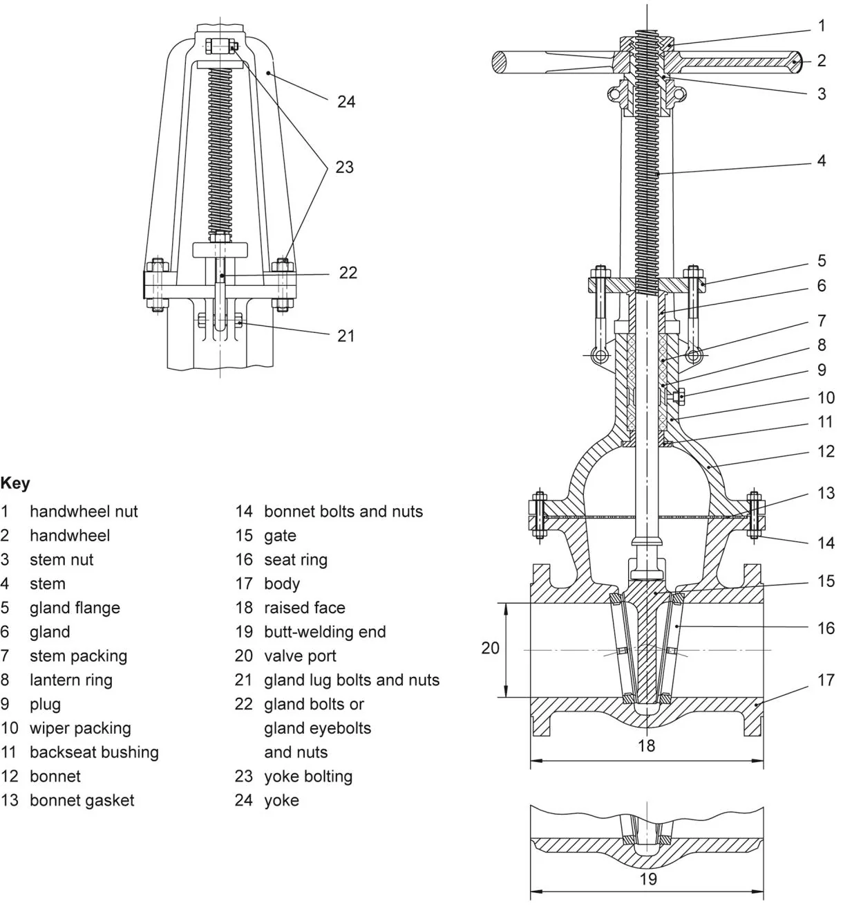
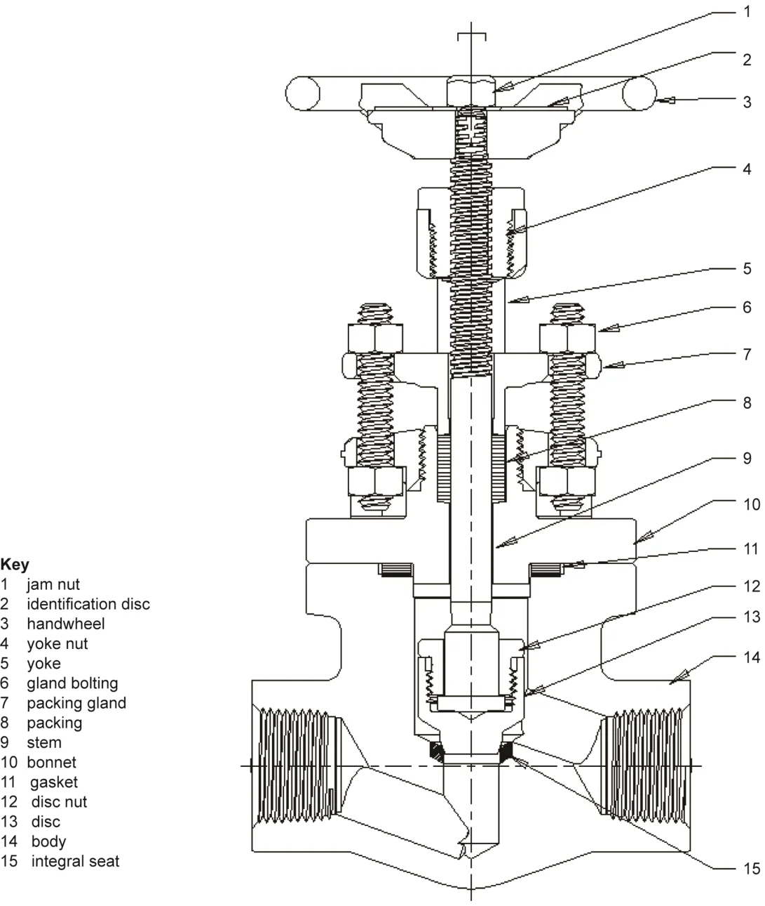
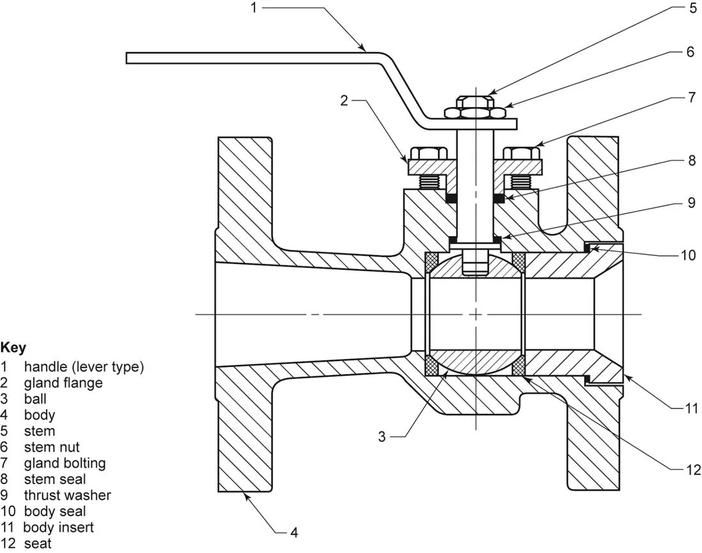
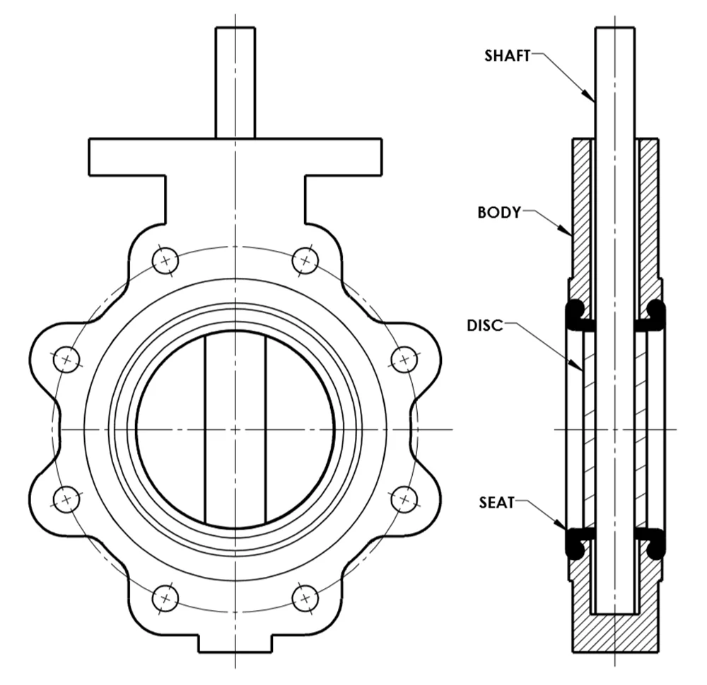
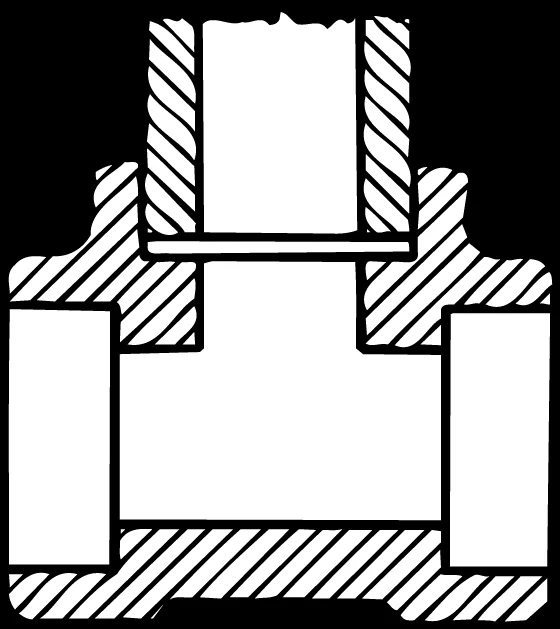
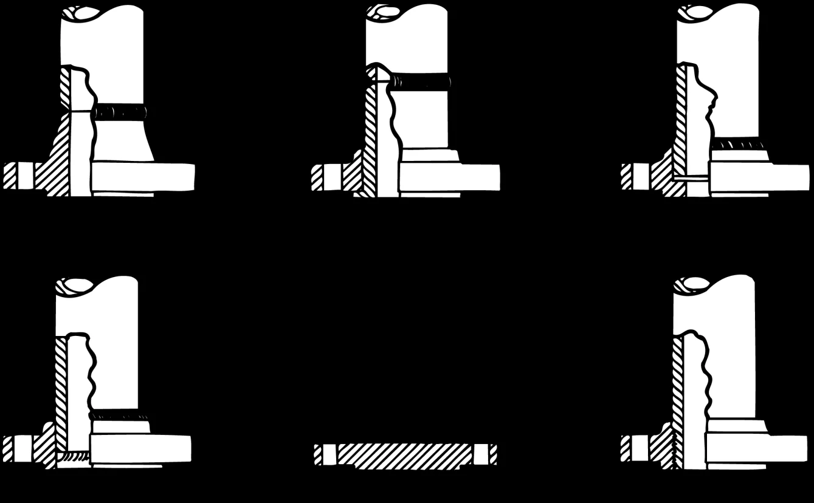
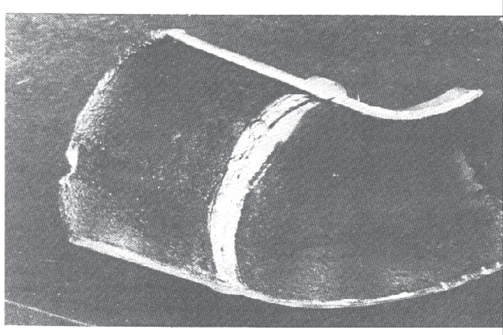
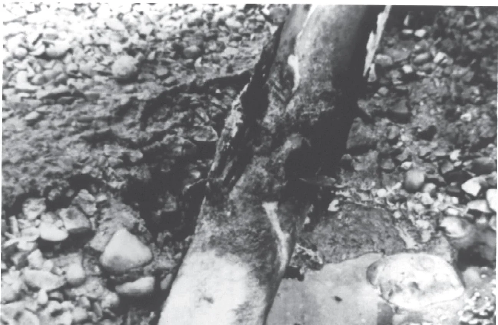
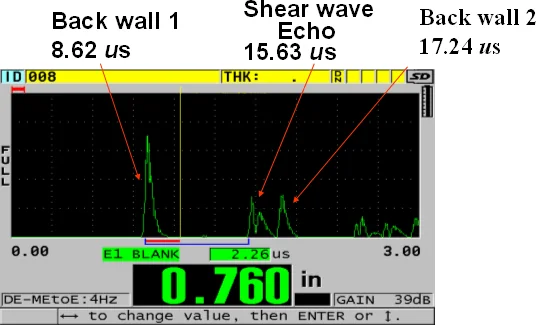
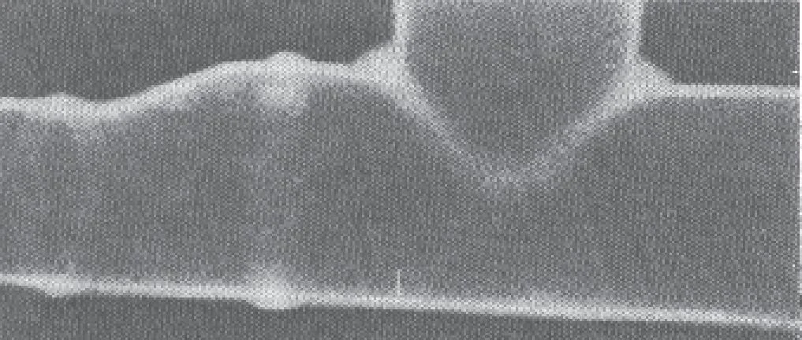

Scope
This recommended practice supplements API 570 by providing piping inspectors with information that can
improve their skills and increase their basic knowledge of inspection practices. This recommended practice
describes inspection practices for piping, tubing, valves (other than control valves), and fittings used in
petroleum refineries and chemical plants. Common piping components, valve types, pipe joining methods,
inspection planning processes, inspection intervals and techniques, and types of records are described to
aid the inspectors in fulfilling their role in implementing API 570. This publication does not cover the
inspection of specialty items, including instrumentation, furnace tubulars, and control valves.
Normative References
The following documents are referred to in the text in such a way that some or all their content constitutes
requirements of this document. For dated references, only the edition cited applies. For undated references,
the latest edition of the referenced document, including any addenda, applies.
API 570, Piping Inspection Code: In-service Inspection, Rating, Repair, and Alteration of Piping Systems
API Recommended Practice 571, Damage Mechanisms Affecting Fixed Equipment in the Refining Industry
API Recommended Practice 578, Material Verification Program for New and Existing Assets
API 579-1/ASME FFS-1 1, Fitness-For-Service
API Recommended Practice 580, Elements of a Risk-based Inspection Program
ASME B16.20, Metallic Gaskets for Pipe Flanges
ASME B16.25, Buttwelding Ends
ASME B16.34, Valves—Flanged, Threaded, and Welding End
ASME B31.3, Process Piping
ASME Boiler and Pressure Vessel Code (BPVC), Section V: Nondestructive Examination
ASTM G57 2, Standard Test Method for Measurement of Soil Resistivity Using the Wenner Four-Electrode
Method
Terms, Definitions, Acronyms, and Abbreviations
For the purposes of this document, the following terms and definitions apply.
NOTE
Definitions for terms delineated with asterisks are maintained by API 574. If another document plans to
reference, see API Bulletin 590 for reference.
3.1
Terms and Definitions
3.1.1
alloy material
Any metallic material (including welding filler materials) that contains alloying elements, such as chromium,
nickel, or molybdenum, which are intentionally added to enhance mechanical or physical properties and/or
corrosion resistance.
1 American Society of Mechanical Engineers, Two Park Avenue, New York, New York 10016, www.asme.org.
2 ASTM International, 100 Barr Harbor Drive, West Conshohocken, Pennsylvania 19428, www.astm.org.
Copyright American Petroleum Institute
Provided by Accuris under license with API
Licensee=Pinnacle AIS/5989531001, User=Ali, Musthaque
Not for Resale, 08/13/2026 13:56:44 UTC
No reproduction or networking permitted without license from Accuris
Scope
This recommended practice supplements API 570 by providing piping inspectors with information that can
improve their skills and increase their basic knowledge of inspection practices. This recommended practice
describes inspection practices for piping, tubing, valves (other than control valves), and fittings used in
petroleum refineries and chemical plants. Common piping components, valve types, pipe joining methods,
inspection planning processes, inspection intervals and techniques, and types of records are described to
aid the inspectors in fulfilling their role in implementing API 570. This publication does not cover the
inspection of specialty items, including instrumentation, furnace tubulars, and control valves.
Normative References
The following documents are referred to in the text in such a way that some or all their content constitutes
requirements of this document. For dated references, only the edition cited applies. For undated references,
the latest edition of the referenced document, including any addenda, applies.
API 570, Piping Inspection Code: In-service Inspection, Rating, Repair, and Alteration of Piping Systems
API Recommended Practice 571, Damage Mechanisms Affecting Fixed Equipment in the Refining Industry
API Recommended Practice 578, Material Verification Program for New and Existing Assets
API 579-1/ASME FFS-1 1, Fitness-For-Service
API Recommended Practice 580, Elements of a Risk-based Inspection Program
ASME B16.20, Metallic Gaskets for Pipe Flanges
ASME B16.25, Buttwelding Ends
ASME B16.34, Valves—Flanged, Threaded, and Welding End
ASME B31.3, Process Piping
ASME Boiler and Pressure Vessel Code (BPVC), Section V: Nondestructive Examination
ASTM G57 2, Standard Test Method for Measurement of Soil Resistivity Using the Wenner Four-Electrode
Method
Terms, Definitions, Acronyms, and Abbreviations
For the purposes of this document, the following terms and definitions apply.
NOTE
Definitions for terms delineated with asterisks are maintained by API 574. If another document plans to
reference, see API Bulletin 590 for reference.
3.1
Terms and Definitions
3.1.1
alloy material
Any metallic material (including welding filler materials) that contains alloying elements, such as chromium,
nickel, or molybdenum, which are intentionally added to enhance mechanical or physical properties and/or
corrosion resistance.
1 American Society of Mechanical Engineers, Two Park Avenue, New York, New York 10016, www.asme.org.
2 ASTM International, 100 Barr Harbor Drive, West Conshohocken, Pennsylvania 19428, www.astm.org.
Copyright American Petroleum Institute
Provided by Accuris under license with API
Licensee=Pinnacle AIS/5989531001, User=Ali, Musthaque
Not for Resale, 08/13/2026 13:56:44 UTC
No reproduction or networking permitted without license from Accuris
Scope
This recommended practice supplements API 570 by providing piping inspectors with information that can
improve their skills and increase their basic knowledge of inspection practices. This recommended practice
describes inspection practices for piping, tubing, valves (other than control valves), and fittings used in
petroleum refineries and chemical plants. Common piping components, valve types, pipe joining methods,
inspection planning processes, inspection intervals and techniques, and types of records are described to
aid the inspectors in fulfilling their role in implementing API 570. This publication does not cover the
inspection of specialty items, including instrumentation, furnace tubulars, and control valves.
Normative References
The following documents are referred to in the text in such a way that some or all their content constitutes
requirements of this document. For dated references, only the edition cited applies. For undated references,
the latest edition of the referenced document, including any addenda, applies.
API 570, Piping Inspection Code: In-service Inspection, Rating, Repair, and Alteration of Piping Systems
API Recommended Practice 571, Damage Mechanisms Affecting Fixed Equipment in the Refining Industry
API Recommended Practice 578, Material Verification Program for New and Existing Assets
API 579-1/ASME FFS-1 1, Fitness-For-Service
API Recommended Practice 580, Elements of a Risk-based Inspection Program
ASME B16.20, Metallic Gaskets for Pipe Flanges
ASME B16.25, Buttwelding Ends
ASME B16.34, Valves—Flanged, Threaded, and Welding End
ASME B31.3, Process Piping
ASME Boiler and Pressure Vessel Code (BPVC), Section V: Nondestructive Examination
ASTM G57 2, Standard Test Method for Measurement of Soil Resistivity Using the Wenner Four-Electrode
Method
Terms, Definitions, Acronyms, and Abbreviations
For the purposes of this document, the following terms and definitions apply.
NOTE
Definitions for terms delineated with asterisks are maintained by API 574. If another document plans to
reference, see API Bulletin 590 for reference.
3.1
Terms and Definitions
3.1.1
alloy material
Any metallic material (including welding filler materials) that contains alloying elements, such as chromium,
nickel, or molybdenum, which are intentionally added to enhance mechanical or physical properties and/or
corrosion resistance.
1 American Society of Mechanical Engineers, Two Park Avenue, New York, New York 10016, www.asme.org.
2 ASTM International, 100 Barr Harbor Drive, West Conshohocken, Pennsylvania 19428, www.astm.org.
Copyright American Petroleum Institute
Provided by Accuris under license with API
Licensee=Pinnacle AIS/5989531001, User=Ali, Musthaque
Not for Resale, 08/13/2026 13:56:44 UTC
No reproduction or networking permitted without license from Accuris
NOTE 1
Alloys may be ferrous or nonferrous based.
NOTE 2
For purposes of this recommended practice, carbon steels are not considered alloys.
3.1.2
alteration
A physical change in any component that has design implications affecting the pressure-containing
capability of a piping system beyond the scope described in existing data reports.
NOTE
The following are not considered alterations: comparable or duplicate replacement and replacements in-kind
and the addition of small-bore attachments that do not require reinforcement or additional support.
3.1.3
auxiliary piping
Instrument and machinery piping, typically small-bore secondary process piping that can be isolated from
primary piping systems but is normally not isolated.
NOTE
Examples include flush lines, seal oil lines, analyzer lines, balance lines, buffer gas lines, drains, and vents.
3.1.4
bolting
An assembly of a nut(s) and a stud for fastening objects together.
3.1.5
cladding
A metal integrally bonded onto another metal under high pressure and temperature whose properties are
better suited to resist damage from the process than the substrate metal.
3.1.6
condition monitoring location
CML
A designated area on piping systems where periodic examinations are conducted to directly assess and
monitor the condition of the piping system using a variety of examination methods and techniques based
on damage mechanism susceptibility.
NOTE 1
CMLs may contain one or more examination points and can be a single small area on a piping system [e.g.
a 2 in. (50 mm) diameter spot] or a plane through a section of pipe where examination points exist in all four quadrants
of the plane.
NOTE 2
CMLs include, but are not limited to, what were previously called “thickness monitoring locations.”
3.1.7
contact points
The locations at which a pipe or component rests on or against a support or other object, which may
increase its susceptibility to external corrosion, fretting, wear, or deformation, especially because of
moisture and/or solids collecting at the interface of the pipe and supporting member.
3.1.8
corrosion allowance
Additional material thickness available to allow for metal loss during the service life of the piping component.
NOTE
Corrosion allowance is not used in design strength calculations.
3.1.9
corrosion rate
The rate of metal loss due to erosion, erosion-corrosion, and/or the chemical reaction(s) with the
environment, either internal and/or external.
Copyright American Petroleum Institute
Provided by Accuris under license with API
Licensee=Pinnacle AIS/5989531001, User=Ali, Musthaque
Not for Resale, 08/13/2026 13:56:44 UTC
No reproduction or networking permitted without license from Accuris
3.1.10
corrosion specialist
A person acceptable to the owner-operator who is knowledgeable and experienced in the specific process
chemistries, damage mechanisms, materials selection, corrosion mitigation methods, corrosion-monitoring
techniques, and their impact on piping systems.
3.1.11
corrosion under insulation
CUI
External corrosion of piping, pressure vessel, and structural components resulting from water trapped under
insulation.
NOTE
External chloride stress corrosion cracking (ECSCC) of austenitic and duplex stainless steel under insulation
is also classified as CUI damage.
3.1.12
critical check valves
Check valves that need to operate reliably to avoid the potential for hazardous events or substantial
consequences should reverse flow occur.
3.1.13
cyclic service
Refers to service conditions that may result in cyclic loading and produce fatigue damage or failure (e.g.
cyclic loading from pressure, thermal, and/or mechanical loads).
NOTE 1
Other cyclic loads associated with vibration may arise from such sources as impact, turbulent flow vortices,
resonance in compressors, and wind, or any combination thereof.
NOTE 2
API 579-1/ASME FFS-1—Section I.A.15 has a definition of cyclic service. A screening procedure to
determine if a component is in cyclic service is provided in Part 14. A definition of “severe cyclic conditions” is in ASME
B31.3—Section 300.2, Definitions.
3.1.14
damage mechanism
Any type of deterioration encountered in the refining and chemical process industry that can result in
flaws/defects that can affect the integrity of equipment.
EXAMPLE
Corrosion, cracking, erosion, dents, and other mechanical, physical, or chemical impacts. See API 571
for a comprehensive list and description of damage mechanisms.
3.1.15
deadlegs
Components of a piping system that normally have little or no significant flow.
3.1.16
defect
A discontinuity or discontinuities that by nature or accumulated effect render a part or product unable to
meet minimum applicable acceptance standards or specifications (e.g. total crack length).
NOTE
The term designates rejectability.
3.1.17
design pressure
The pressure at the most severe condition of coincident internal or external pressure and temperature
(minimum or maximum) expected during service.
NOTE
It is the same as the design pressure defined in ASME B31.3 and other code sections and is subject to the
same rules relating to allowances for variations of pressure or temperature or both.
Copyright American Petroleum Institute
Provided by Accuris under license with API
Licensee=Pinnacle AIS/5989531001, User=Ali, Musthaque
Not for Resale, 08/13/2026 13:56:44 UTC
No reproduction or networking permitted without license from Accuris
3.1.18
design temperature
The temperature used for the design of the piping system per the applicable construction code.
NOTE
It is the same as the design temperature defined in ASME B31.3 and other code sections and is subject to the
same rules relating to allowances for variations of pressure or temperature or both. Different components in the same
piping system or circuit can have different design temperatures. In establishing this temperature, consideration should
be given to process fluid temperatures, ambient temperatures, heating/cooling media temperatures, and insulation.
3.1.19*
doubling
The error that can occur when an ultrasonic thickness measurement instrument displays the measured
thickness value based on the second back-wall echo (i.e. double the thickness) versus the first back-wall echo.
NOTE 1
This can occur when measuring thicknesses below the minimum specified range of a transducer (probe) or
when the transducer element is either worn or low in sensitivity.
NOTE 2
Doubling (or even tripling) can also occur in some cases when measuring thicknesses around 0.200” (5 mm)
while using echo-to-echo mode if the signals from the second or third back-wall echo are smaller in amplitude than
subsequent echoes.
3.1.20
examination point
recording point
measurement point
test point
A more specific location within a CML. CMLs may contain multiple examination points, for example, a piping
component may be a CML and have multiple examination points (e.g. an examination point in all four
quadrants of the CML on the piping component).
NOTE
The term “test point” is no longer in use because “test” refers to mechanical or physical tests (e.g. tensile tests
or pressure tests).
3.1.21
examinations
A process by which an examiner or inspector investigates a component of the piping system using
nondestructive examination (NDE) in accordance with approved NDE procedures (e.g. inspection of a CML
and quality control of repair areas).
NOTE
Examinations would be typically those actions conducted by NDE personnel, welding inspectors, or coating
inspectors but may also be conducted by authorized piping inspectors.
3.1.22
examiner
A person who assists the inspector by performing specific NDE on piping system components and evaluates
to the applicable acceptance criteria but does not evaluate the results of those examinations in accordance
with API 570 requirements, unless specifically trained and authorized to do so by the owner-operator.
3.1.23
external inspection
A visual inspection performed from the outside of a piping system to find conditions that could impact the
piping systems’ ability to maintain pressure integrity or conditions that compromise the integrity (e.g.
stanchions, pipe supports, shoes, and hangers). The external inspection may be done either while the
piping is operating or while the piping is out of service and can be conducted at the same time as an on-
stream inspection.
NOTE
External inspections are also intended to find conditions that compromise the integrity of the coating and
insulation coverings, and attachments (e.g. instrument and small branch connections).
Copyright American Petroleum Institute
Provided by Accuris under license with API
Licensee=Pinnacle AIS/5989531001, User=Ali, Musthaque
Not for Resale, 08/13/2026 13:56:44 UTC
No reproduction or networking permitted without license from Accuris
3.1.24
fitness-for-service evaluation
A methodology whereby flaws and other deterioration/damage contained within piping systems are
assessed in order to determine the integrity of the piping for continued service.
3.1.25
fitting
A piping component usually associated with a branch connection, a change in direction, or a change in
piping diameter.
NOTE
Flanges are not considered fittings.
3.1.26
flammable materials
As used in this recommended practice, includes all fluids that will support combustion.
NOTE 1
Refer to NFPA 704 for guidance on classifying fluids.
NOTE 2
Some regulatory documents include separate definitions of flammables and combustibles based on their
flash point. In this document, flammable is used to describe both, and the flash point, boiling point, autoignition
temperature, or other properties are used in addition to better describe the hazard.
3.1.27
flash point
The lowest temperature at which a flammable product emits enough vapor to form an ignitable mixture in
air.
NOTE 1
For example, gasoline’s flash point is about −45 °F, and diesel’s flash point varies from about 125 °F to
200 °F.
NOTE 2
An ignition source is required to cause ignition above the flash point but below the autoignition temperature.
3.1.28
flaw
An imperfection in a piping system detected by NDE, which may or may not be a defect, depending upon
the applied acceptance criteria.
3.1.29
general corrosion
Corrosion distributed approximately uniform over the surface of the metal.
3.1.30
hold point
A point in the repair or alteration process beyond which work may not proceed until the required inspection
or NDE has been performed.
3.1.31
imperfection
Flaws or other discontinuities noted during inspection or examination that may or may not exceed the
applicable acceptance criteria.
3.1.32
indication
A response or evidence resulting from the application of NDE that may be nonrelevant, flawed, or defective
upon further analysis.
Copyright American Petroleum Institute
Provided by Accuris under license with API
Licensee=Pinnacle AIS/5989531001, User=Ali, Musthaque
Not for Resale, 08/13/2026 13:56:44 UTC
No reproduction or networking permitted without license from Accuris
3.1.33
injection points
Injection points are locations where water, steam, chemicals, or process additives are introduced into a
process stream at relatively low flow/volume rates as compared to the flow/volume rate of the parent stream.
NOTE 1
Corrosion inhibitors, neutralizers, process antifoulants, desalter demulsifiers, oxygen scavengers, caustic,
and water washes are most often recognized as requiring special attention in designing the point of injection. Process
additives, chemicals, and water are injected into process streams to achieve specific process objectives.
NOTE 2
Injection points do not include locations where two process streams join (see 3.1.49, “mixing point”).
EXAMPLE
Chlorinating agents in reformers, water injection in overhead systems, polysulfide injection in catalytic
cracking wet gas, antifoam injections, inhibitors, and neutralizers.
3.1.34
in-service
The life-cycle stage of a piping system that begins after initial installation (where typically initial
commissioning or placing into active service follows) and ends at decommissioning.
NOTE 1
Piping systems that are idle in an operating site and piping systems not currently in operation because of a
process outage are still considered in-service piping systems.
NOTE 2
Does not include piping systems that are still under construction or in transport to the site prior to being
placed in service or piping systems that have been retired.
NOTE 3
Installed spare piping is also considered in-service, whereas spare piping that is not installed is not
considered in-service.
3.1.35
in-service inspection
All inspection activities associated with in-service piping (after installation, but before it is decommissioned).
3.1.36
inspection
The external, internal, or on-stream evaluation (or any combination of the three) of the condition of a piping
system conducted by the authorized inspector or the designee.
3.1.37
inspection code
Shortened title for API 570.
3.1.38
inspection plan
A strategy defining how and when a piece of pressure equipment and associated components will be
inspected, examined, repaired, and/or maintained.
3.1.39
inspector
A shortened title for an authorized piping inspector qualified and certified in accordance with API 570.
3.1.40
integrity operating window
Established limits for process variables (parameters) that can affect the integrity of the equipment if the
process operation deviates from the established limits for a predetermined length of time [includes critical,
standard, and informational integrity operating windows (IOWs)].
Copyright American Petroleum Institute
Provided by Accuris under license with API
Licensee=Pinnacle AIS/5989531001, User=Ali, Musthaque
Not for Resale, 08/13/2026 13:56:44 UTC
No reproduction or networking permitted without license from Accuris
3.1.41
intermittent service
The condition of a piping system whereby it is not in continuous operating service (i.e. it operates at regular
or irregular intervals rather than continuously).
NOTE
Occasional turnarounds or other infrequent maintenance outages in an otherwise continuous process service
does not constitute intermittent service.
3.1.42
internal inspection
An inspection performed on the inside surface of a piping system using visual and/or NDE techniques.
NOTE
NDE on the outside of the pipe to determine the remaining thickness does not constitute an internal inspection.
3.1.43
jurisdiction
A legally constituted governmental administration that may adopt rules relating to process piping systems.
3.1.44
level bridle
The piping assembly associated with a level gauge attached to a vessel.
3.1.45
lining
A nonmetallic or metallic material, installed on the interior of a pipe, whose properties are better suited to
resist damage from the process than the substrate material.
3.1.46
localized corrosion
Corrosion that is typically confined to a limited or isolated area(s) of the metal surface of a piping system.
3.1.47
minimum alert thickness
flag thickness
A thickness greater than the required thickness that provides for early warning from which the future service
life of the piping is managed through further inspection and remaining life assessment.
3.1.48
minimum required thickness
required thickness
The minimum thickness without corrosion allowance for each component of a piping system based on the
appropriate design code calculations and code allowable stress that consider internal and external pressure,
temperature, mechanical, and structural loadings, including the effects of static head.
NOTE
Minimum required thicknesses may be reassessed using fitness-for-service (FFS) analysis in accordance with
API 579-1/ASME FFS-1.
3.1.49
mixing point
Mixing points are locations in a process piping system where two or more streams meet.
NOTE
The difference in streams may be composition, temperature, or any other parameter that may cause
deterioration and may require additional design considerations, operating limits, inspection, and/or process monitoring.
3.1.50
owner-operator
An owner or operator of piping systems who exercises control over the operation, engineering, inspection,
repair, alteration, maintenance, pressure testing, and rerating of those piping systems.
Copyright American Petroleum Institute
Provided by Accuris under license with API
Licensee=Pinnacle AIS/5989531001, User=Ali, Musthaque
Not for Resale, 08/13/2026 13:56:44 UTC
No reproduction or networking permitted without license from Accuris
3.1.51
pipe
A pressure-tight cylinder used to convey, distribute, mix, separate, discharge, meter, control, or snub fluid
flows or to transmit a fluid pressure and that is ordinarily designated “pipe” in applicable material specifications.
NOTE 1
Materials designated as “tube” or “tubing” in the specifications are treated as a pipe when intended for
pressure service external to fired heaters.
NOTE 2
See API 530 for piping internal to fired heaters.
3.1.52
pipe spool
A section of piping with a flange or other connecting fitting, such as a union, on both ends, that allows the
removal of the section from the system.
3.1.53
piperack piping
Process piping that is supported by consecutive stanchions or sleepers (including straddle racks and
extensions).
3.1.54
piping circuit
A subsection of piping systems that includes piping and components that are exposed to a process environment
of similar corrosivity and expected damage mechanisms and is of similar design conditions and construction
material, whereby the expected type and rate of damage can reasonably be expected to be the same.
NOTE 1
Complex process units or piping systems are divided into piping circuits to manage the necessary
inspections, data analysis, and recordkeeping.
NOTE 2
When establishing the boundary of a particular piping circuit, it may be sized to provide a practical package
for recordkeeping and performing field inspection.
3.1.55
piping engineer
One or more persons or organizations acceptable to the owner-operator who are knowledgeable and
experienced in the engineering disciplines associated with evaluating mechanical and material
characteristics affecting the integrity and reliability of piping components and systems.
NOTE
The piping engineer, by consulting with appropriate specialists, should be regarded as a composite of all
entities necessary to properly address piping design requirements.
3.1.56
piping system
An assembly of interconnected pipes that typically are subject to the same (or nearly the same) process
fluid composition or operating conditions, or both.
NOTE 1
Some may refer to these as “loops,” but this designation is being supplanted by the “system” or “circuit”
designation.
NOTE 2
Piping systems also include pipe-supporting elements (e.g. springs, hangers, guides, etc.) but do not include
support structures, such as structural frames, vertical and horizontal beams, and foundations.
3.1.57
pressure design thickness
Minimum allowed pipe wall thickness needed to hold the design pressure at the design temperature.
NOTE 1
Pressure design thickness is determined using the rating code formula, including needed reinforcement
thickness.
NOTE 2
Pressure design thickness does not include thickness for structural loads, corrosion allowance, or mill
tolerances and therefore should not be used as the sole determinant of structural integrity for typical process piping.
Copyright American Petroleum Institute
Provided by Accuris under license with API
Licensee=Pinnacle AIS/5989531001, User=Ali, Musthaque
Not for Resale, 08/13/2026 13:56:44 UTC
No reproduction or networking permitted without license from Accuris
3.1.58
primary process piping
Process piping in normal, active service that cannot be valved off or, if it were valved off, would significantly
affect unit operability.
NOTE
Primary process piping typically does not include small-bore or auxiliary process piping (see also 3.1.66
“secondary process piping”).
3.1.59
process piping
Hydrocarbon or chemical piping located at, or associated with, a refinery or manufacturing facility.
NOTE
Process piping includes piperack, tank farm, and process unit piping, but excludes utility piping (e.g. steam,
water, air, nitrogen, etc.).
3.1.60
quality assurance
All planned, systematic, and preventative actions specified to determine if materials, equipment, or services
will meet specified requirements so that the piping will perform satisfactorily in-service.
NOTE 1
Quality assurance plans will specify the necessary quality control activities and examinations.
NOTE 2
The contents of a quality assurance inspection management system for piping systems are outlined in API
570—Section 4.3.1.
3.1.61
quality control
Those physical activities conducted to check conformance with specifications in accordance with the quality
assurance plan.
EXAMPLE
NDE techniques, hold point inspections, material verifications, checking certification documents, etc.
3.1.62
rating
The work process of making calculations to establish pressures and temperatures appropriate for a piping
system, including design pressure/temperature, maximum allowable working pressure (MAWP), structural
minimums, required thicknesses, etc.
3.1.63
repair
The work necessary to restore a piping system to a condition suitable for safe operation at the design
conditions.
NOTE 1
Any welding, cutting, or grinding operation on a pressure-containing piping component not specifically
considered an alteration is considered a repair.
NOTE 2
Repairs can be temporary or permanent.
3.1.64
rerating
A change in either the design temperature rating, design pressure rating, or the MAWP of a piping system.
NOTE
A rerating may consist of an increase, decrease, or a combination. Derating below original design conditions
is a permissible way to provide additional corrosion allowance.
3.1.65
risk-based inspection
RBI
A risk assessment and management process that considers both the probability of failure and the
consequence of failure due to material deterioration.
Copyright American Petroleum Institute
Provided by Accuris under license with API
Licensee=Pinnacle AIS/5989531001, User=Ali, Musthaque
Not for Resale, 08/13/2026 13:56:44 UTC
No reproduction or networking permitted without license from Accuris
3.1.66
secondary process piping
Process piping located downstream of a block valve that can be valved off without significantly affecting the
process unit.
NOTE
Often, secondary process piping is small-bore piping (SBP).
3.1.67
small-bore piping
SBP
Pipe or pipe components that are less than or equal to NPS 2.
3.1.68
soil-to-air interface
SAI
An area in which external corrosion may occur or be accelerated on partially buried pipe or buried pipe
where it enters or leaves the soil.
NOTE 1
The zone of the corrosion will vary depending on factors such as the moisture and oxygen content of the
soil and operating temperature. The zone generally is from 12 in. (30 cm) below to 6 in. (15 cm) above the soil surface.
NOTE 2
Pipe running parallel with the soil surface that contacts the soil is included.
3.1.69
structural minimum thickness
Minimum required thickness without corrosion allowance based on the mechanical loads other than
pressure that result in longitudinal stress.
NOTE
The thickness is either determined from a standard chart or engineering calculations. It does not include
thickness for corrosion allowance or mill tolerances.
3.1.70
tell-tale holes*
sentinel holes
Small pilot holes drilled in the pipe or component wall using specified and controlled patterns and depths
to act as an early detection and safeguard against ruptures resulting from internal corrosion, erosion, and
erosion-corrosion.
3.1.71
temporary repairs
Repairs made to piping systems in order to restore sufficient integrity to continue safe operation until
permanent repairs are conducted.
3.1.72
testing
Within this document, testing generally refers to either pressure testing, whether performed hydrostatically,
pneumatically or a combination hydrostatic/pneumatic, or mechanical testing to determine data such as
material hardness, strength, and notch toughness.
NOTE
Testing does not refer to NDE using techniques such as liquid penetrant (PT), magnetic particle (MT), etc.
3.1.73
utility piping
Non-process piping associated with a process unit (e.g. steam, air, water, and nitrogen).
Copyright American Petroleum Institute
Provided by Accuris under license with API
Licensee=Pinnacle AIS/5989531001, User=Ali, Musthaque
Not for Resale, 08/13/2026 13:56:44 UTC
No reproduction or networking permitted without license from Accuris
3.1.74
weld overlay
The use of weld metal of a composition different than the base metal to provide corrosion and/or erosion
resistance to the base metal.
NOTE
The filler metal typically has better corrosion and/or erosion resistance to the environment than the underlying
metal.
3.2
Acronyms and Abbreviations
For the purposes of this document, the following acronyms and abbreviations apply.
ACFM
alternating current field measurement
AE
acoustic emission examination technique
CML
condition monitoring location
CSCC
chloride stress corrosion cracking
CUI
corrosion under insulation
DN
diameter nominal (used in SI system to describe pipe size)
ECSCC
external chloride stress corrosion cracking
EMAT
electromagnetic acoustic transducer
ET
eddy current technique
FCC
fluid catalytic cracking
FFS
fitness-for-service
FRP
fiber-reinforced plastic
GRP
glass-reinforced plastic
HF
hydrofluoric
NOTE
Generally referred to as HF acid.
ID
inside diameter
IDMS
Inspection Data Management System
ILI
in-line inspection
IOW
integrity operating window
IP
initial pulse
MAWP
maximum allowable working pressure
MOC
management of change
Copyright American Petroleum Institute
Provided by Accuris under license with API
Licensee=Pinnacle AIS/5989531001, User=Ali, Musthaque
Not for Resale, 08/13/2026 13:56:44 UTC
No reproduction or networking permitted without license from Accuris
MT
magnetic particle examination technique
MW
microwave examination technique
NDE
nondestructive examination
NPS
nominal pipe size
NOTE
The term is typically followed, when appropriate, by the specific size designation number
without an inch symbol.
EXAMPLE
NPS 24 refers to a nominal pipe size of 24 in.
OD
outside diameter
P&ID
piping and instrument diagram
PFD
process flow diagram
PMI
positive material identification
PPE
personal protective equipment
PT
liquid penetrant examination technique
PVC
polyvinyl chloride
PVDF
polyvinylidene fluoride
PWHT
postweld heat treatment
RBI
risk-based inspection
RE
residual element
RT
radiographic examination (method) or radiography
SAI
soil-to-air interface
SBP
small-bore piping
SCC
stress corrosion cracking
UT
ultrasonic examination technique
UV
ultraviolet
Introduction to Piping
4.1
Piping Components
4.1.1
Pipe
Steel and alloy pipe diameter is expressed as nominal pipe sizes (NPSs) and are manufactured to standard
dimensions in NPSs up to 48 in. (1219 mm). The size refers to the approximate inside diameter (ID) of
standard weight pipe for NPSs equal to or less than 12 in. (305 mm). For NPS equal to or greater than 14
in. (356 mm), the size denotes the actual outside diameter (OD).
Copyright American Petroleum Institute
Provided by Accuris under license with API
Licensee=Pinnacle AIS/5989531001, User=Ali, Musthaque
Not for Resale, 08/13/2026 13:56:44 UTC
No reproduction or networking permitted without license from Accuris
MT
magnetic particle examination technique
MW
microwave examination technique
NDE
nondestructive examination
NPS
nominal pipe size
NOTE
The term is typically followed, when appropriate, by the specific size designation number
without an inch symbol.
EXAMPLE
NPS 24 refers to a nominal pipe size of 24 in.
OD
outside diameter
P&ID
piping and instrument diagram
PFD
process flow diagram
PMI
— — — —
— — — — — —
— — — — — —
— — — — — —
— — — — — —positive material identification
PPE
personal protective equipment
PT
liquid penetrant examination technique
PVC
polyvinyl chloride
PVDF
polyvinylidene fluoride
PWHT
postweld heat treatment
RBI
risk-based inspection
RE
residual element
RT
radiographic examination (method) or radiography
SAI
soil-to-air interface
SBP
small-bore piping
SCC
stress corrosion cracking
UT
ultrasonic examination technique
UV
ultraviolet
Introduction to Piping
4.1
Piping Components
4.1.1
Pipe
Steel and alloy pipe diameter is expressed as nominal pipe sizes (NPSs) and are manufactured to standard
dimensions in NPSs up to 48 in. (1219 mm). The size refers to the approximate inside diameter (ID) of
standard weight pipe for NPSs equal to or less than 12 in. (305 mm). For NPS equal to or greater than 14
in. (356 mm), the size denotes the actual outside diameter (OD).
Copyright American Petroleum Institute
Provided by Accuris under license with API
Licensee=Pinnacle AIS/5989531001, User=Ali, Musthaque
Not for Resale, 08/13/2026 13:56:44 UTC
No reproduction or networking permitted without license from Accuris
Pipe wall thicknesses are designated as pipe schedules in NPSs up to 36 in. (914 mm); refer to Annex B.
The traditional thickness designations—standard weight, extra strong, and double extra strong—differ from
schedules and are used for NPSs up to 48 in. (1219 mm). In all standard sizes, the OD remains nearly
constant regardless of the thickness. Table B.1 and Table B.2 list the dimensions of ferritic and stainless
steel pipe from NPS 1/8 [DN (diameter nominal) 6] up through NPS 24 (DN 600). See ASME B36.10M for
the dimensions of welded and seamless wrought steel piping and ASME B36.19 for the dimensions of
stainless steel piping.
Allowable tolerances in pipe diameter differ from one piping material to another. Table B.3 lists the
acceptable tolerances for diameter and thickness of most ASTM ferritic pipe standards. The actual
thickness of seamless piping can vary from its nominal thickness by a manufacturing tolerance of as much
as 12.5 %. The under tolerance for welded piping is 0.01 in. (0.25 mm). Cast piping has a thickness
tolerance of +1/16 in. (1.6 mm) and −0 in. (0 mm), as specified in ASTM A53/A53M. Consult the ASTM or
the equivalent ASME material specification to determine what tolerances are permitted for a specific
material.
Piping that has ends that are beveled or threaded with standard pipe threads can be obtained in various
lengths. Piping can be obtained in different strength levels depending on the grades of material, including
alloying material and the heat treatments specified.
Cast iron piping is generally used for nonhazardous services, such as water; it is generally not
recommended for pressurized hydrocarbon service because of its brittle nature. The standards and sizes
for cast iron piping differ from those for welded and seamless piping.
4.1.2
SBP, Secondary Piping, and Auxiliary Piping
SBP can be used as primary process piping, secondary piping, auxiliary piping, and for vents/drains. SBP
vent/drain valves are normally connected to nipples 6 in. (152 mm) or less in length and are most often
used to vent piping high points, drain piping low points, and provide a connection point for
secondary/auxiliary piping. Secondary piping is normally isolated from the main process lines by closed
valves and can be used for such functions as sample taps. Auxiliary piping is normally open to service but
can be isolated from the primary process. Examples include flush lines, instrument piping, analyzer piping,
lubrication, and seal oil piping for rotating equipment.
Inspectors and piping engineers should be aware of design, maintenance, and operating issues that cause
SBP failures and may require mitigation. Those issues include, but are not limited to, the following:
— mismatched union connections from differing manufacturers;
— the potential for thermal growth or contraction that could cause SBP stresses that may lead to failure;
— cyclic loading from thermal or mechanical loads that could cause fatigue cracking (e.g. overhung SBP
piping systems, the potential for PRV chattering in certain relief scenarios, flow-induced vibration,
vaporization, and cavitation);
— inadequate management of change (MOC) consideration that may cause unanticipated thermal,
mechanical, or corrosive scenarios on SBP;
— inadequate design (e.g. support and pipe schedule) for the various unanticipated transient loads
imposed on SBP;
— inadequate protection from external impacts (e.g. vehicular traffic and maintenance activities);
— inadequate protection or support for SBP that could be subject to being used as personnel or
tool/equipment support (e.g. step, tie-off, handrail, pulley, and lever);
Copyright American Petroleum Institute
Provided by Accuris under license with API
Licensee=Pinnacle AIS/5989531001, User=Ali, Musthaque
Not for Resale, 08/13/2026 13:56:44 UTC
No reproduction or networking permitted without license from Accuris
— improperly selected components for the class of service;
— inadequate consideration for the use of socket weld versus threaded fittings, both of which can lead to
premature failure if not specified and/or installed properly;
— inadequate thickness for threaded SBP after accounting for the loss of thickness from thread cutting or
lack of bottom gap when welding socket welded fittings;
— not including alloy SBP in positive material identification (PMI) procedures;
— not including SBP in piping damage mechanism reviews;
— replacement of SBP components with different alloys without adequate consideration for potential new
damage mechanisms (e.g. “upgrading” to stainless steel in a wet chloride environment).
Additional guidance on SBP may be found in API 570—Section 6.6.
4.2
Tubing
Tubing is similar to piping in that it is used to convey fluid and is manufactured in many ODs and wall
thicknesses. Tubing is generally seamless but can be welded. Its stated size is typically the actual OD
rather than NPS. [ASTM B88 tubing, which is often used for steam tracing, is an exception in that its size
designation is 1/8 in. (3.2 mm) less than the actual OD.] Methods used to join tubing sections include flared,
flareless, and compression-type tube fittings instead of typical piping joints, such as threads, flanges, or
welding. Tubing is usually made in small diameters and is often used for instrument connections, lubricating
oil services, steam tracing, and similar services. Generally, tubing is more flexible than piping that allows it
to be bent to desired shapes and configurations, as opposed to piping that relies much more frequently on
elbows and other fittings for directional changes and is less often bent. When used for heat exchange
applications, such as heaters, boilers, or other heat exchangers, the tubular component is commonly
referred to as a tube rather than as tubing.
Inspectors and piping engineers should be aware of design, maintenance, and operating issues that cause
tubing failures and may require mitigation. Those issues include, but are not limited to, the following:
e) longitudinal defects from forming;
f)
chloride stress corrosion cracking (CSCC) of stainless steel tubing, particularly at tubing supports in
elevated temperatures or offshore environments;
g) inadequate support structure for tubing.
4.3
Valves
4.3.1
General
The basic types of valves are gate, globe, plug, ball, diaphragm, butterfly, check, and slide valves. Valves
are made in standard pipe sizes, materials, body thickness, and pressure ratings. Body thicknesses,
Copyright American Petroleum Institute
Provided by Accuris under license with API
Licensee=Pinnacle AIS/5989531001, User=Ali, Musthaque
Not for Resale, 08/13/2026 13:56:44 UTC
No reproduction or networking permitted without license from Accuris
pressure ratings and other design data are provided in the applicable standards as shown in Table 1. Valve
bodies can be cast, forged, machined from bar stock, or fabricated by welding a combination of two or more
materials. The seating surfaces in the body can be integral with the body, or they can be made as inserts.
The insert material can be the same as or different from the body material. When special nonmetallic
material that could fail in a fire is used to prevent seat leakage, metal-to-metal backup seating surfaces can
be provided (see API 607). Other parts of the valve trim can be made of any suitable material and can be
cast, formed, forged, or machined from commercially rolled shapes. Valve ends can be flanged, threaded
for threaded connections, recessed for socket welding, or beveled for butt welding. Although many valves
are manually operated, they can be equipped with electric motors and gear operators or other power
operators to accommodate a large size or inaccessible location or to permit actuation by instruments. Refer
to API 615 for a complete overview of valve designs and reference standards.
Table 1—API and ASME Valve Design Standards and Codes
Valve Design
Standard
Applicable Valve Type
API 594
Check valves
API 599
Metal plug valves
API 600
Steel gate valves
API 602
Gate, globe, and check valves
API 603
Corrosion-resistant, bolted bonnet gate valves
API 607
Fire test for quarter-turn valves and valves equipped with nonmetallic seats
API 608
Metal ball valves
API 609
Butterfly valves
ASME B16.34
Valves: flanged, threaded, and welding end
4.3.2
Gate Valves
A gate valve consists of a body that contains a gate that interrupts the process flow. This type of valve is
normally used in a fully open or fully closed position and as such is often called a “block valve,” since it is
not generally designed for regulating fluid flow. Gate valves larger than 2 in. (51 mm) usually have port
openings that are approximately the same size as the valve end openings—this type of valve is called a
“full-ported valve.” Figure 1 shows a cross section of a full-ported wedge gate valve.
Reduced port gate valves are also very common and have port openings that are smaller than the end
openings. Reduced port valves should not be used as block valves associated with pressure-relief devices
or in erosive applications, such as slurries, or lines that are to be “pigged.”
Copyright American Petroleum Institute
Provided by Accuris under license with API
Licensee=Pinnacle AIS/5989531001, User=Ali, Musthaque
Not for Resale, 08/13/2026 13:56:44 UTC
No reproduction or networking permitted without license from Accuris
Figure 1—Cross Section of a Typical Wedge Gate Valve
4.3.3
Globe Valves
A globe valve, which is commonly used to regulate fluid flow, consists of a valve body that contains a
circular disc that moves parallel to the disc axis and contacts the seat. The stream flows upward generally,
except for vacuum service or when required by system design (e.g. fail closed), through the seat area
against the disc, and then changes direction to flow through the body to the outlet disc. The seating surface
can be flat or tapered. For fine-throttling service, a very steep tapered seat can be used; this particular type
of globe valve is referred to as a needle valve. A globe valve is commonly constructed with its inlet and
outlet in line and with its port opening at right angles to the inlet and outlet. Figure 2 illustrates a cross
section of a globe valve.
Copyright American Petroleum Institute
Provided by Accuris under license with API
Licensee=Pinnacle AIS/5989531001, User=Ali, Musthaque
Not for Resale, 08/13/2026 13:56:44 UTC
No reproduction or networking permitted without license from Accuris
Figure 2—Cross Section of a Typical Globe Valve
4.3.4
Plug Valves
A plug valve consists of a tapered or cylindrical plug fitted snugly into a correspondingly shaped seat in the
valve body. Plug valves usually function as block valves to close off flow. When the valve is open, an
opening in the plug is in line with the flow openings in the valve body. The valve is closed by turning the
plug one-quarter turn so that its opening is at right angles to the openings in the valve body. Plug valves
can be operated by a gear-operated device or by turning a wrench on the stem. Plug valves are either
lubricated or nonlubricated; Figure 3 illustrates both types. Lubricated plug valves use a grease-like
lubricant that is pumped into the valve through grooves in the body and plug surfaces to provide sealing for
the valve and promote ease of operation. On the other hand, nonlubricated plug valves may use metal
seats or nonmetallic sleeves, seats, or complete or partial linings or coatings.
Copyright American Petroleum Institute
Provided by Accuris under license with API
Licensee=Pinnacle AIS/5989531001, User=Ali, Musthaque
Not for Resale, 08/13/2026 13:56:44 UTC
No reproduction or networking permitted without license from Accuris
Figure 3—Cross Sections of Typical Lubricated and Nonlubricated Plug Valves
4.3.5
Ball Valves
A ball valve is another one-quarter turn valve like a plug valve except that the plug in a ball valve is spherical
instead of tapered or cylindrical. Ball valves usually function as block valves to close off flow. They are well
suited for conditions that require quick on/off or bubble-tight service. A ball valve is typically equipped with
an elastomeric seating material that provides good shutoff characteristics; however, all-metal, high-
pressure ball valves are available. Figure 4 illustrates a ball valve.
Copyright American Petroleum Institute
Provided by Accuris under license with API
Licensee=Pinnacle AIS/5989531001, User=Ali, Musthaque
Not for Resale, 08/13/2026 13:56:44 UTC
No reproduction or networking permitted without license from Accuris
Figure 4—Cross Section of a Typical Ball Valve
4.3.6
Diaphragm Valves
A diaphragm valve is a packless valve that contains a diaphragm made of a flexible material that functions
as both a closure and a seal. When the valve spindle is screwed down, it forces the flexible diaphragm
against a seat, or dam, in the valve body and blocks the flow of fluid. These valves are not used extensively
in the petrochemical industry, but they do have application in corrosive services below approximately 250 °F
(121 °C), where a leak-tight valve is needed. Figure 5 illustrates a diaphragm valve.
Figure 5—Cross Section of a Typical Diaphragm Valve
Copyright American Petroleum Institute
Provided by Accuris under license with API
Licensee=Pinnacle AIS/5989531001, User=Ali, Musthaque
Not for Resale, 08/13/2026 13:56:44 UTC
No reproduction or networking permitted without license from Accuris
4.3.7
Butterfly Valves
A butterfly valve consists of a disc mounted on a stem in the flow path within the valve body. The body is
usually flanged and of the lug or wafer type. A one-quarter turn of the stem changes the valve from fully
closed to completely open. Butterfly valves are most often used in low-pressure service for coarse flow
control. They are available in a variety of seating materials and configurations for tight shutoff in low- and
high-pressure services. Large butterfly valves are generally mechanically operated. The mechanical feature
is intended to prevent them from slamming shut in service. Figure 6 illustrates the type of butterfly valve
usually specified for water service.
Figure 6—Typical Butterfly Valve
4.3.8
Check Valves
A check valve is used to automatically prevent backflow. The most common types of check valves are
swing, lift-piston, ball, axial flow, and spring-loaded wafer check valves. Figure 7 illustrates cross sections
of each type of valve; these views portray typical methods of preventing backflow.
Copyright American Petroleum Institute
Provided by Accuris under license with API
Licensee=Pinnacle AIS/5989531001, User=Ali, Musthaque
Not for Resale, 08/13/2026 13:56:44 UTC
No reproduction or networking permitted without license from Accuris
Figure 7—Cross Sections of Typical Check Valves
Copyright American Petroleum Institute
Provided by Accuris under license with API
Licensee=Pinnacle AIS/5989531001, User=Ali, Musthaque
Not for Resale, 08/13/2026 13:56:44 UTC
No reproduction or networking permitted without license from Accuris
Figure 7—Cross Sections of Typical Check Valves (continued)
4.3.9
Slide Valves
The slide valve is a specialized gate valve generally used in erosive or high-temperature service. It consists
of a flat plate that slides against a seat. The slide valve uses a fixed orifice and one or two solid slides that
move in guides, creating a variable orifice that make the valve suitable for throttling or blocking. Slide valves
do not make a gas-tight shutoff. One popular application of this type of valve is controlling fluidized catalyst
flow in fluid catalytic cracking (FCC) units. Internal surfaces of these valves that are exposed to high wear
from the catalyst are normally covered with erosion-resistant refractory. Figure 8 illustrates a slide valve.
4.4
Fittings
4.4.1
Metallic Fittings
Fittings are used to connect pipe sections and change the direction of flow or allow the flow to be diverted
or added to. Fittings can be cast, forged, drawn from seamless or welded pipe, or formed and welded.
Fittings can be obtained with their ends flanged, recessed for socket welding, beveled for butt welding, or
threaded for threaded connections. Fittings are made in many shapes, such as wyes, tees, elbows, crosses,
laterals, and reducers. Figure 9 illustrates types of flanged and butt-welded fittings. Figure 10 illustrates
types of threaded and socket-welded fittings.
Copyright American Petroleum Institute
Provided by Accuris under license with API
Licensee=Pinnacle AIS/5989531001, User=Ali, Musthaque
Not for Resale, 08/13/2026 13:56:44 UTC
No reproduction or networking permitted without license from Accuris
Figure 8—Cross Section of a Typical Slide Valve
4.4.2
Fiber-reinforced Plastic Fittings
Fiber-reinforced plastic (FRP) fittings are manufactured by different processes. Injection molding, filament
winding, and contact molding are the most common techniques. The same criteria used to accept the pipe
should be applied to fittings. Contact molded fittings should be inspected to ensure that they are
manufactured to the same specification as the pipe. Contact molded fittings fabrication is critical because
the layers of reinforcement must be overlapped to make sure that the strength of the layers is not
compromised. One-piece contact molded fittings are the preferred method, but many items, such as tees
Copyright American Petroleum Institute
Provided by Accuris under license with API
Licensee=Pinnacle AIS/5989531001, User=Ali, Musthaque
Not for Resale, 08/13/2026 13:56:44 UTC
No reproduction or networking permitted without license from Accuris
and branch connections, are often manufactured using two pieces of pipe. The inspector must check to
make sure that the reinforcement on those pieces and the gap between them is within the tolerance
specified. The exposed cut edges must be protected accordingly.
Figure 9—Flanged-end Fittings and Wrought Steel Butt-welded Fittings
Copyright American Petroleum Institute
Provided by Accuris under license with API
Licensee=Pinnacle AIS/5989531001, User=Ali, Musthaque
Not for Resale, 08/13/2026 13:56:44 UTC
No reproduction or networking permitted without license from Accuris
Figure 10—Forged Steel Threaded and Socket-welded Fittings
4.5
Flanges
4.5.1
Metallic Flanges
ASME B16.5 covers flanges of various materials through an NPS of 24 in. (610 mm). ASME B16.47 covers
steel flanges that range from NPS 26 through NPS 60. The flanges of cast fittings or valves are usually
integral with the fitting or the valve body.
4.5.2
FRP Flanges
FRP flanges are manufactured using the same methods as the fittings. Contact molded flanges should be
inspected for dimensions, drawback, and face flatness. The layers of reinforcement should extend onto the
pipe to create the proper bond and hub reinforcement. More information on FRP flanges can be found in
MTI Project 160-04. FRP flanges should have the proper torques and gaskets.
4.6
Expansion Joints
Expansion joints are devices used to absorb dimensional changes in piping systems, such as those caused
by thermal expansion, to prevent excessive stresses/strains from being transmitted to other piping
components, and connections to pressure vessels and rotating equipment. While there are several designs,
those commonly found in a plant are metallic bellows and fabric joint designs. Metallic bellows can be
single-wall or multilayered, containing convolutions to provide flexibility. Often, these joints will have other
design features, such as guides, to limit the motion of the joint or the type of loading applied to the joint.
Metallic bellows expansion joints can be used in higher-temperature services than nonmetallic joints.
Copyright American Petroleum Institute
Provided by Accuris under license with API
Licensee=Pinnacle AIS/5989531001, User=Ali, Musthaque
Not for Resale, 08/13/2026 13:56:44 UTC
No reproduction or networking permitted without license from Accuris
All expansion joints have specific design limits for allowable movement (axial, angular, and offset), as well
as pressure and temperature design limits. These limits should be understood and not exceeded. An
expansion joint may limit the pressure/temperature rating of a piping system well below the
pressure/temperature rating of the piping itself. — Fabric joints are often used in flue gas services at low
pressure and where temperatures do not exceed the rating of the fabric material.
4.7
Piping Supports
4.7.1
General
There are many different pipe support designs, types, and styles. They include hanger type, support shoes,
saddles, bearing surfaces (e.g. structural members, concrete plinth blocks, etc.), spring type, dummy legs
(trunnions), slide plates, sway braces/snubbers/struts, stands, sleeves, rollers, straps, clamps, and
restrictive guides or anchors.
An understanding of the function and design of pipe supports is required to manage both their integrity and
the integrity of piping systems. Pipe supports can be subject to various damage mechanisms (see 7.4.6)
and significant stresses from static loading and thermal movements that can affect the pipe support itself,
as well as the supported piping and piping components.
4.7.2
Piping Support Design—General Considerations
Piping supports usually are designed to carry the weight of piping including valves, insulation, and the
weight of the fluid contained in the pipe, including hydrostatic test conditions. Properly designed piping
supports will ensure that:
external loads, or vibration;
pressure vessels, pumps, turbines, and tanks);
piping or equipment and be maintained within allowable stress levels;
4.7.3
Piping Support Design—Specific Considerations
Pipe support design considerations can differ depending on the support type or style. While some pipe
support manufacturers offer innovative and proprietary designs to eliminate or minimize some of the
credible damage mechanisms, the following is a list of some special piping support design parameters to
take into consideration.
structural steel to prevent the shoe from coming off the support, which could cause tearing or other
damage to the pipe. Also, some pipe shoes may trap water between the pipe and shoe (e.g. clamp-on,
bolt-on, saddles that have been stitch welded, etc.) and make inspection difficult to determine the
condition of the pipe.
through an earthen berm. When used, design precautions should be taken to prevent corrosion on both
the pipe and the pipe sleeve. Centering devices should also be considered to keep the inner pipe
centered and prevent coating damage and corrosion. Fully welded and/or sealed sleeves may be
considered if loss of containment detection and control are necessary. It should be noted that sleeves
can make future pipe inspections and examinations more difficult.
Copyright American Petroleum Institute
Provided by Accuris under license with API
Licensee=Pinnacle AIS/5989531001, User=Ali, Musthaque
Not for Resale, 08/13/2026 13:56:44 UTC
No reproduction or networking permitted without license from Accuris
where the pipe rests on bearing surfaces. Plates should be fully welded to avoid crevice corrosion
except in hydrogen-charging environments, where a weep hole should be included that will not lead to
moisture ingress. The use of adhesive-bonded stainless steel or composite half soles may be
considered, but it is very important to make sure that the adhesive is fully bonded and maintained to
effectively eliminate water entrapment. Galvanic corrosion should also be considered when using
dissimilar materials for this purpose.
may assist in limiting the trapping of water in intimate contact with the piping at the support location,
reducing the severity of material loss in these areas (referred to as “contact point corrosion”).
e) Dummy legs (trunnions)—Historically, dummy leg (trunnion) supports were simple open-ended lengths
of pipe welded to a piping system from which the piping system was supported. An open-ended design
can allow moisture and debris to become trapped inside the support and cause corrosion of the support
and the pipe. Dummy leg design should include, as a minimum, drain holes no smaller than 1/4 in.
(6 mm) located at a low point, with the unattached end of the support being fitted with a fully welded
cap or end plate to prevent debris or animals from entering. Trunnion design can be improved by using
solid sections, such as “C” channels or “І/H” beams, to reduce the risk of this problem. However, even
solid member sections can trap water and debris depending on their design and orientation.
Incorporating a fully welded doubler pad to the pipe at the trunnion attachment location can provide
additional corrosion protection and may help distribute loads more evenly. The end of a dummy leg
support that is not attached to the pipe may or may not be anchored or restrained.
f)
Supports on insulated lines—Special attention is necessary for the design of supports on insulated lines
to minimize the possibility of water ingress and wicking of water into the insulation.
g) Accessibility—The accessibility, and therefore inspectability/maintainability, of pipe supports should be
considered during design.
h) Welding—Paths for water ingress into hollow supports can be minimized with the use of fully welded
seams. Avoid welding undercut or excessive penetration. Welding defects associated with supports
can contribute to loss of containment events and, in some cases, be of sufficiently small size to make
leak detection and source identification difficult. In hydrogen-charging environments, a weep hole
should be provided to avoid the buildup of pressure between the plate and the pipe.
i)
Anchors and restraints—A connection of a pipe to a stationary structure or foundation to restrict the
movement of the pipe in one or more directions (X, Y, and/or Z plane). The attachment of an anchor or
restraint to a pipe should preferably encircle the pipe to distribute the stresses evenly about the
circumference of the piping component(s).
4.8
Flexible Hoses
Flexible hoses are often temporarily used to transfer hydrocarbons and other process fluids to facilitate
turnaround activities (clearing equipment, deinventorying, purging, etc.) and for transfer of process
fluids/products to rail cars and/or tanker trucks for shipment. Flexible hoses may also be installed within
process piping systems to mitigate the effects of thermal expansion, vibration, or movement during normal
operations. Some sites will maintain several flexible hoses to be used as needed in multiple services.
Flexible hoses come in a variety of different construction materials and designs. Owner-operators should
ensure the design of the flexible hose is compatible with the process service in which it is used. In addition,
have appropriate quality assurance and test and inspection systems in place to ensure the mechanical
integrity of the hose is maintained while in service.
Piping Design and Construction
5.1
Design and Construction Standards
Piping should be fabricated in accordance with the appropriate construction standards for the application.
Some commonly used construction standards are ASME B31.3 and ASME B31.1.
Copyright American Petroleum Institute
Provided by Accuris under license with API
Licensee=Pinnacle AIS/5989531001, User=Ali, Musthaque
Not for Resale, 08/13/2026 13:56:44 UTC
No reproduction or networking permitted without license from Accuris
where the pipe rests on bearing surfaces. Plates should be fully welded to avoid crevice corrosion
except in hydrogen-charging environments, where a weep hole should be included that will not lead to
moisture ingress. The use of adhesive-bonded stainless steel or composite half soles may be
considered, but it is very important to make sure that the adhesive is fully bonded and maintained to
effectively eliminate water entrapment. Galvanic corrosion should also be considered when using
dissimilar materials for this purpose.
may assist in limiting the trapping of water in intimate contact with the piping at the support location,
reducing the severity of material loss in these areas (referred to as “contact point corrosion”).
e) Dummy legs (trunnions)—Historically, dummy leg (trunnion) supports were simple open-ended lengths
— — — —
— — — — — —
— — — — — —of pipe welded to a piping system from which the piping system was supported. An open-ended design
can allow moisture and debris to become trapped inside the support and cause corrosion of the support
and the pipe. Dummy leg design should include, as a minimum, drain holes no smaller than 1/4 in.
(6 mm) located at a low point, with the unattached end of the support being fitted with a fully welded
cap or end plate to prevent debris or animals from entering. Trunnion design can be improved by using
solid sections, such as “C” channels or “І/H” beams, to reduce the risk of this problem. However, even
solid member sections can trap water and debris depending on their design and orientation.
Incorporating a fully welded doubler pad to the pipe at the trunnion attachment location can provide
additional corrosion protection and may help distribute loads more evenly. The end of a dummy leg
support that is not attached to the pipe may or may not be anchored or restrained.
f)
Supports on insulated lines—Special attention is necessary for the design of supports on insulated lines
to minimize the possibility of water ingress and wicking of water into the insulation.
g) Accessibility—The accessibility, and therefore inspectability/maintainability, of pipe supports should be
considered during design.
h) Welding—Paths for water ingress into hollow supports can be minimized with the use of fully welded
seams. Avoid welding undercut or excessive penetration. Welding defects associated with supports
can contribute to loss of containment events and, in some cases, be of sufficiently small size to make
leak detection and source identification difficult. In hydrogen-charging environments, a weep hole
should be provided to avoid the buildup of pressure between the plate and the pipe.
i)
Anchors and restraints—A connection of a pipe to a stationary structure or foundation to restrict the
movement of the pipe in one or more directions (X, Y, and/or Z plane). The attachment of an anchor or
restraint to a pipe should preferably encircle the pipe to distribute the stresses evenly about the
circumference of the piping component(s).
4.8
Flexible Hoses
Flexible hoses are often temporarily used to transfer hydrocarbons and other process fluids to facilitate
turnaround activities (clearing equipment, deinventorying, purging, etc.) and for transfer of process
fluids/products to rail cars and/or tanker trucks for shipment. Flexible hoses may also be installed within
process piping systems to mitigate the effects of thermal expansion, vibration, or movement during normal
operations. Some sites will maintain several flexible hoses to be used as needed in multiple services.
Flexible hoses come in a variety of different construction materials and designs. Owner-operators should
ensure the design of the flexible hose is compatible with the process service in which it is used. In addition,
have appropriate quality assurance and test and inspection systems in place to ensure the mechanical
integrity of the hose is maintained while in service.
Piping Design and Construction
5.1
Design and Construction Standards
Piping should be fabricated in accordance with the appropriate construction standards for the application.
Some commonly used construction standards are ASME B31.3 and ASME B31.1.
Copyright American Petroleum Institute
Provided by Accuris under license with API
Licensee=Pinnacle AIS/5989531001, User=Ali, Musthaque
Not for Resale, 08/13/2026 13:56:44 UTC
No reproduction or networking permitted without license from Accuris
5.2
Methods of Construction
5.2.1
Pipe Joining Methods
5.2.1.1
General
The common joining methods used to assemble piping components are welding, threading, and flanging.
Welded joints are most used to connect piping spools and components. Some owner-operators still rely on
threaded joints in SBP and where piping is connected to equipment that requires periodic maintenance.
Flanged joints are most used where piping is connected to equipment or other flanged valves and fittings.
Cast iron piping and thin-wall tubing require special connections/joining methods due to inherent design
characteristics.
5.2.1.2
Threaded Joints
Threaded joints are generally limited to auxiliary piping in noncritical service (minor consequence should a
leak occur) that has a nominal size of 2 in. (51 mm) or smaller. Threaded joints for NPSs of 24 in. (610 mm)
and smaller are standardized (see ASME B1.20.1).
Lengths of pipe can be joined by any of several types of threaded fittings (see 4.4). Couplings, which are
sleeves tapped at both ends for receiving a pipe, are normally used to connect lengths of threaded pipe.
When it is necessary to remove or disconnect the piping, threaded unions or mating flanges are required
(see 5.2.1.4). Threaded joints that are located adjacent to rotating equipment or other specific sources of
high vibration can be especially susceptible to failure due to fatigue. Special consideration should be given
to these situations.
5.2.1.3
Welded Joints
5.2.1.3.1
General
Where welded joints are used, the joints are either butt-welded (in various sizes of pipe) or socket-welded
(typically NPS 2 and smaller).
5.2.1.3.2
Butt-welded Joints
Butt-welded connections are the type most widely utilized in industry. The ends of the pipe, fitting, or valve
are prepared (beveled) and aligned with adequate root opening in accordance with ASME B16.25 or any
other end preparation that meets the welding procedure specification, permitting the ends to be joined by
fusion welding.
5.2.1.3.3
Socket-welded Joints
Socket-welded joints are made by inserting the end of the pipe into a recess in a fitting or valve and then
fillet welding the joint. Two lengths of pipe or tubing can be connected by this method using a socket-weld
coupling. Figure 11 illustrates a cross section of a socket-welded joint.
Copyright American Petroleum Institute
Provided by Accuris under license with API
Licensee=Pinnacle AIS/5989531001, User=Ali, Musthaque
Not for Resale, 08/13/2026 13:56:44 UTC
No reproduction or networking permitted without license from Accuris
Figure 11—Cross Section of a Socket-welded Tee Connection
5.2.1.3.4
Welded Branch Connections
Many piping failures occur at pipe-to-pipe welded branch connections. Branch connections often fail
because they are subject to higher-than-normal stresses. These may be caused by excessive structural
loadings from unsupported valves or piping, vibration, or thermal expansion, or other configurations that
promote high stress. The result is concentrated tri-axial stresses (e.g. bending and torsional) that can cause
fatigue cracking or other types of failures. Where joints are susceptible to such failures, a forged piping tee
typically offers better reliability because it removes the weld from the point of highest stress concentration.
Self-reinforced branch connections also can offer better reliability if they are properly welded to the main
pipe using appropriate weld procedures and meet the manufacturer’s recommendations for full penetration
welds.
5.2.1.4
Flanged Joints
Flanged joints are made by bolting two flanges together with some form of gasket between the seating
surfaces. The gasket surfaces can be flat and range from serrated (concentric or spiral) to smooth
(depending on the type of gasket, gasket material, and service conditions), or grooves can be cut for seating
metal-ring gaskets. Flanged joints should be assembled by trained and qualified personnel (see Appendix A
of ASME PCC-1). Consideration should be given to establishing a finished joint examination process. See
6.2 on flanged joint leakage.
Figure 12 illustrates common flange facings for various gaskets. The common types of flanges are weld
neck, slip-on welding, threaded, blind, lap joint, and socket-welded. Each type is illustrated in Figure 13.
Copyright American Petroleum Institute
Provided by Accuris under license with API
Licensee=Pinnacle AIS/5989531001, User=Ali, Musthaque
Not for Resale, 08/13/2026 13:56:44 UTC
No reproduction or networking permitted without license from Accuris
Flat face
Figure 12—Flange Facings Commonly Used in Refinery and Chemical Plant Piping
Copyright American Petroleum Institute
Provided by Accuris under license with API
Licensee=Pinnacle AIS/5989531001, User=Ali, Musthaque
Not for Resale, 08/13/2026 13:56:44 UTC
No reproduction or networking permitted without license from Accuris
Figure 13—Types of Flanges
5.2.1.5
Cast Iron Pipe Joints
Cast iron pipe joints can be of the flanged, packed, sleeve, hub-and-spigot-end or hub-and-plain-end, or
bell-and-spigot-end or bell-and-plain-end type. Push-on joints with rubber or synthetic ring gaskets are
available. Clamped joints are also used. The hub-and-plain-end joint is shown in Figure 14. Figure 15
illustrates cross sections of a bell-type mechanical joint, a sleeve connection, and a typical proprietary
connection (see 5.2.1.7). These types of joints are rarely used in process piping service because of their
low toughness and tendency toward brittle fracture.
Figure 14—Cross Section of a Typical Bell-and-Spigot Joint
Copyright American Petroleum Institute
Provided by Accuris under license with API
Licensee=Pinnacle AIS/5989531001, User=Ali, Musthaque
Not for Resale, 08/13/2026 13:56:44 UTC
No reproduction or networking permitted without license from Accuris
Figure 15—Cross Sections of Typical Packed and Sleeve Joints
5.2.1.6
Tubing Joints
Tubing can be joined by welding, soldering, or brazing or by using flared or compression fittings. Figure 16
illustrates flared and compression joints. Tubing joints should be assembled by trained and qualified
personnel. Consideration should be given to establishing a finished joint examination process in accordance
with tubing joint manufacturer’s recommendations.
Copyright American Petroleum Institute
Provided by Accuris under license with API
Licensee=Pinnacle AIS/5989531001, User=Ali, Musthaque
Not for Resale, 08/13/2026 13:56:44 UTC
No reproduction or networking permitted without license from Accuris
Figure 16—Cross Sections of Typical Tubing Joints
5.2.1.7
Special Joints
Proprietary joints are available that incorporate unique gaskets, clamps, and bolting arrangements. These
designs offer some advantages in some services over conventional joints in certain services, including the
following:
5.2.1.8
Nonmetallic Piping Joints
5.2.1.8.1
General
There are several methods of joining FRP pipe and fittings. Joints in nonmetallic piping are often of several
different designs depending upon the manufacturer of the pipe. Some common joint designs in FRP pipe
systems include a bell and spigot, butt and wrap, taper-taper, and flange-flange.
Copyright American Petroleum Institute
Provided by Accuris under license with API
Licensee=Pinnacle AIS/5989531001, User=Ali, Musthaque
Not for Resale, 08/13/2026 13:56:44 UTC
No reproduction or networking permitted without license from Accuris
5.2.1.8.2
Bell and Spigot/Taper-taper
Bell-and-spigot and taper-taper joints are created by inserting the spigot end into the bell end. Proper
surface preparation, insertion, and adequate adhesive are the key to making these types of joints.
5.2.1.8.3
Butt and Wrap
Butt-and-wrap joints involve butting plain end pipe together and applying layers of resin and fiber
reinforcement layers around the joint. These types of joints should be done by qualified personnel.
NOTE
Fitting thickness is often greater than the matching pipe thickness. The proper taper of the fitting thickness is
required to make the proper butt-and-wrap joint.
5.2.1.8.4
Flange-flange
Proper flange joint makeup involves the use of appropriate gaskets, bolt torques, and alignment. Using a
calibrated torque wrench helps ensure proper torquing and avoids damage by overstressing the FRP
flanges. Proper flange alignment, flatness, and waviness according to the specification can prevent damage
when torquing to specified values. Full-face gaskets are typically used for bolting full-face flanges. Flanges
bolted to raised-face connections should be evaluated individually for required torque values and proper
gasket requirements.
5.2.2
Pipe Fabrication
5.2.2.1
General
Pipe fabrication is the process of cutting, beveling, and welding piping components, such as pipes, tees,
elbows flanges, etc. to provide a means to safely transport or process liquids, gases, and solids.
5.2.2.2
Seamless Pipe
Seamless pipe is made as a continuous tube with no longitudinal weld. This type of pipe is generally known
to withstand higher pressure and is widely used in industry. A common carbon steel seamless pipe is ASME
SA106.
5.2.2.3
Seam Welded Pipe
Seam welded pipe is formed by using a rolling machine to roll the longer sides of plate together to form a
cylinder and then welding the seam together. The most common method of joining the seam is electric
resistance welding. This produces a weld seam that cannot be seen or felt. This pipe is generally used in
lower-pressure applications and services that would not be selectively corrosive to welds/heat-affected zone.
5.3
Materials of Construction
5.3.1
Base Material
Piping can be made from any material that can be rolled and welded, cast, or drawn through dies to form a
tubular section. The two most common carbon steel piping materials used in the petrochemical industry are
ASTM A53 and ASTM A106. The industry uses both seamless and electric resistance welded piping for
process services, depending upon current economics and the potential for accelerated corrosion of the
weld seam in service. Piping of a nominal size larger than 16 in. (406 mm) is usually made by rolling plates
to size and welding the seams. Pipe can be centrifugally cast and then machined to any desired thickness.
Copyright American Petroleum Institute
Provided by Accuris under license with API
Licensee=Pinnacle AIS/5989531001, User=Ali, Musthaque
Not for Resale, 08/13/2026 13:56:44 UTC
No reproduction or networking permitted without license from Accuris
5.3.2
Pipe Linings
Internal linings can be incorporated into the piping design to reduce corrosion, erosion, product
contamination, and pipe metal temperatures. The linings can generally be characterized as metallic and
nonmetallic.
Metallic liners are installed in various ways, such as cladding and weld overlay.
before fabrication of the pipe.
upon its purpose. These include stainless steels, high alloys, cobalt-based alloys, etc.
Nonmetallic liners can be used to resist corrosion and erosion or to insulate and reduce the temperature
on the pipe wall. Some common nonmetallic lining materials for piping are concrete, castable refractory,
plastic, and thin-film coatings.
5.3.3
Nonmetallic Piping
5.3.3.1
General
Nonmetallic materials are not covered by API 570. The term “nonmetallic” has a broad definition, but two
groups are discussed in this section for informational purposes—the fiberglass-reinforced plastics group
and the organic plastics group.
The fiberglass-reinforced plastics group encompasses the generic acronyms FRP (fiberglass-reinforced
plastic) and GRP (glass-reinforced plastic), which are more commonly used in chemical processing
applications. FRP and GRP are typically used interchangeably.
The organic plastics group is comprised of piping having a homogeneous structure produced by extrusion
and includes the following common types:
e) polypropylene.
Nonmetallic materials have limited application to specific piping systems in the process industry, such as
in utilities. For example, typical service applications of FRP piping include service water, process water,
cooling medium, potable water, sewage/gray water, nonhazardous waste, nonhazardous drains,
nonhazardous vents, chemicals, firewater ring mains, firewater deluge systems, and produced and ballast
water.
Nonmetallic materials have significant advantages over more familiar metallic materials, but they also have
unique construction and deterioration mechanisms that can lead to premature failures if not addressed
adequately. The primary advantages are resistance to corrosion and improved flow characteristics over
metallic piping. The main disadvantages are ultraviolet (UV) degradation and support requirements.
Fluoropolymer plastics (e.g. PVDF) have inherent UV blocking characteristics.
Copyright American Petroleum Institute
Provided by Accuris under license with API
Licensee=Pinnacle AIS/5989531001, User=Ali, Musthaque
Not for Resale, 08/13/2026 13:56:44 UTC
No reproduction or networking permitted without license from Accuris
The design of these piping systems is largely dependent on the application. Thermal expansion and
temperature resistance vary widely across different types of plastic piping. Many companies have
developed their own specifications that outline the materials, quality, fabrication requirements, and design
factors. It is noted that other codes and standards have requirements and guidance. In particular:
— ASME NM.2 and ASME B31.3, Chapter VII, cover design requirements for nonmetallic piping;
— the American Water Works Association is an organization that also provides guidance on FRP pipe
design and testing.
These codes and standards, however, do not offer guidance as to the right choice of corrosion barriers,
resins, fabricating methods, and joint systems for a particular application. The user should consider other
sources, such as resin and pipe manufacturers, for guidance on their application.
Additional information on organic plastic piping is available from:
— the Plastic Pipe and Fittings Association (PPFA);
— the Plastics Pipe Institute (PPI).
5.3.3.2
FRP Pipe Manufacturing
Historically, while many of the failures in FRP piping are related to poor construction practices, a poor
understanding of the application to a service or the manufacturing of the materials can also lead to failure.
For example, a lack of familiarity with the materials can lead to a failure to recognize the detail of care that
must be applied in construction.
FRP materials require understanding of their manufacturing process and their service limitations. For
example:
disadvantages.
FRP piping is manufactured in many ways. Every service application should be reviewed for proper resin,
catalyst, corrosion barrier (liner) composition, and structural integrity. Although FRP is corrosion resistant,
using the wrong resin or corrosion barrier can cause premature failure.
FRP pipe can experience UV degradation over time if not adequately protected. Adding a UV inhibitor in
the resin will help prevent premature fiber blooming caused by UV. The user should consider this option for
all FRP piping applications and be aware that this would be a supplemental specification.
Standardized FRP piping systems commonly called “commodity piping” are manufactured for a variety of
services and are sold as products with a predetermined design, resin, corrosion barrier, and structure.
Piping manufacturers typically have a quality control specification that identifies the level of quality and
allowable tolerance that is built into their product.
Custom fabricated pipe is typically designed and manufactured for a specific application. The resin, catalyst
system, corrosion barrier, and structure are specified, and the pipe is manufactured to a specification and
to a specified level of quality and tolerances.
5.3.3.3
Qualification of FRP Assemblers
The qualification of bonders and jointers is as important for FRP fabrication as the qualification of welders
is for metal fabrication. Due to limitations in NDE methods, emphasis should be placed on procedure and
bonder qualifications and testing.
Copyright American Petroleum Institute
Provided by Accuris under license with API
Licensee=Pinnacle AIS/5989531001, User=Ali, Musthaque
Not for Resale, 08/13/2026 13:56:44 UTC
No reproduction or networking permitted without license from Accuris
Similarly, because the material stiffness is much less than metal and because FRP has different types of
shear, small-bore connections will not withstand the same shear stress, weight loadings, or vibrations that
are common with metallic piping. Proper support of piping and attachments, such as valves, on small-bore
connections should be analyzed in detail to prevent premature failure of the system.
5.3.3.4
Inspection
All FRP piping should be inspected by a person who is knowledgeable in the curing, fabrication, and quality
of FRP materials. The level of inspection should be determined by the user. ASME RTP-1—Table 6-1 can
be used as a guide to identify liner and structure imperfections that are common in FRP laminates.
The FRP inspector should verify by documentation and inspection that the piping system has been built
with the proper materials, quality, hardness, and thickness as requested in the pipe specification. A final
inspection should be performed at the job site to ensure that the pipe has not experienced any mechanical
damage during shipment or assembly.
Reasons for Inspection
6.1
General
The primary purposes of inspection are to observe, report, and quantify damage (see API 571) and then to
specify needed repairs or replacements. Planning for inspection entails identifying credible damage
mechanisms for the purposes of directing the inspection activity. The inspection activity requires obtaining
information about the physical condition of the piping, which will lead to determining the causes of any
deterioration and the rate of deterioration. By developing a database of inspection history, the user can
predict and recommend future repairs and replacements, act to prevent or retard further deterioration, and
most importantly, prevent loss of containment. These actions should result in increased operating safety,
reduced maintenance costs, and more reliable and efficient operations. API 570 provides the basic
requirements for a piping inspection program which addresses these issues and concerns.
6.2
Process and Personnel Safety
A leak or failure in a piping system can be a minor inconvenience for low-consequence fluids or it can
become a potential source of a process safety incident for higher-consequence fluids depending on the
temperature, pressure, contents, and location of the piping. Piping in a petrochemical plant typically
contains flammable fluids, acids, alkalis, toxic fluids, and other harmful fluids that would make leaks
potentially hazardous to exposed personnel. Leaks in these kinds of piping systems can also have
environmental consequences associated with their failure. Adequate inspection is a prerequisite for
maintaining piping systems in a safe, reliable condition.
Leakage can occur at flanged joints in piping systems for a variety of reasons, including corrosion, cracking,
bolting tightness issues, and gasket issues. In addition, thermal expansion issues can cause leaks
particularly for joints in high-temperature or cryogenic services during start-ups and shutdowns, and
sometimes during normal operation. For these reasons, process plant practices should include quality
assurance/control procedures to help ensure flanged joint integrity after maintenance activities where the
joints have been disassembled. Procedures typically include, for example, proper gasket and stud selection,
assembler qualifications, proper assembly instruction, inspection, and testing requirements. Refer to ASME
PCC-1 for flange joint assembly practices.
6.3
Regulatory Requirements
Regulatory requirements may cover those piping systems that could affect personnel or process safety and
environmental concerns. Process safety regulations, such as OSHA 29 CFR 1910.119 in the United States,
have mandated that equipment, including piping, that handles significant quantities of hazardous chemicals
be inspected according to accepted codes and standards, which includes API 570. Local and state
regulations may also cover process piping inspection and maintenance.
Copyright American Petroleum Institute
Provided by Accuris under license with API
Licensee=Pinnacle AIS/5989531001, User=Ali, Musthaque
Not for Resale, 08/13/2026 13:56:44 UTC
No reproduction or networking permitted without license from Accuris
Similarly, because the material stiffness is much less than metal and because FRP has different types of
shear, small-bore connections will not withstand the same shear stress, weight loadings, or vibrations that
are common with metallic piping. Proper support of piping and attachments, such as valves, on small-bore
connections should be analyzed in detail to prevent premature failure of the system.
5.3.3.4
Inspection
All FRP piping should be inspected by a person who is knowledgeable in the curing, fabrication, and quality
of FRP materials. The level of inspection should be determined by the user. ASME RTP-1—Table 6-1 can
be used as a guide to identify liner and structure imperfections that are common in FRP laminates.
The FRP inspector should verify by documentation and inspection that the piping system has been built
with the proper materials, quality, hardness, and thickness as requested in the pipe specification. A final
inspection should be performed at the job site to ensure that the pipe has not experienced any mechanical
damage during shipment or assembly.
Reasons for Inspection
6.1
General
The primary purposes of inspection are to observe, report, and quantify damage (see API 571) and then to
specify needed repairs or replacements. Planning for inspection entails identifying credible damage
mechanisms for the purposes of directing the inspection activity. The inspection activity requires obtaining
information about the physical condition of the piping, which will lead to determining the causes of any
deterioration and the rate of deterioration. By developing a database of inspection history, the user can
predict and recommend future repairs and replacements, act to prevent or retard further deterioration, and
most importantly, prevent loss of containment. These actions should result in increased operating safety,
reduced maintenance costs, and more reliable and efficient operations. API 570 provides the basic
requirements for a piping inspection program which addresses these issues and concerns.
6.2
Process and Personnel Safety
A leak or failure in a piping system can be a minor inconvenience for low-consequence fluids or it can
become a potential source of a process safety incident for higher-consequence fluids depending on the
temperature, pressure, contents, and location of the piping. Piping in a petrochemical plant typically
contains flammable fluids, acids, alkalis, toxic fluids, and other harmful fluids that would make leaks
potentially hazardous to exposed personnel. Leaks in these kinds of piping systems can also have
environmental consequences associated with their failure. Adequate inspection is a prerequisite for
maintaining piping systems in a safe, reliable condition.
Leakage can occur at flanged joints in piping systems for a variety of reasons, including corrosion, cracking,
bolting tightness issues, and gasket issues. In addition, thermal expansion issues can cause leaks
particularly for joints in high-temperature or cryogenic services during start-ups and shutdowns, and
sometimes during normal operation. For these reasons, process plant practices should include quality
assurance/control procedures to help ensure flanged joint integrity after maintenance activities where the
joints have been disassembled. Procedures typically include, for example, proper gasket and stud selection,
assembler qualifications, proper assembly instruction, inspection, and testing requirements. Refer to ASME
PCC-1 for flange joint assembly practices.
6.3
Regulatory Requirements
Regulatory requirements may cover those piping systems that could affect personnel or process safety and
environmental concerns. Process safety regulations, such as OSHA 29 CFR 1910.119 in the United States,
have mandated that equipment, including piping, that handles significant quantities of hazardous chemicals
be inspected according to accepted codes and standards, which includes API 570. Local and state
regulations may also cover process piping inspection and maintenance.
Copyright American Petroleum Institute
Provided by Accuris under license with API
Licensee=Pinnacle AIS/5989531001, User=Ali, Musthaque
Not for Resale, 08/13/2026 13:56:44 UTC
No reproduction or networking permitted without license from Accuris
6.4
Reliable Operation
In addition to the need for inspection to provide for process and personnel safety, thorough inspection, data
analysis, and maintenance of detailed inspection/repair/replacement records of piping systems are
essential to the attainment of acceptable process reliability to meet the business plan. Piping maintenance
and replacement schedules are developed to coincide with scheduled maintenance turnarounds to avoid
unplanned outages and the consequences of lost production opportunities.
Inspection and Monitoring Planning
7.1
Background
An inspection plan is developed and implemented for those piping systems within the scope of API 570.
However, other piping systems may also be included in the inspection program and accordingly have an
inspection plan.
An inspection plan should contain the inspection tasks, the scope of the inspection, and the schedule
required to monitor identified damage mechanisms and ensure the mechanical integrity of the piping
components in the system. API 570 defines the minimum contents of an inspection plan.
Inspection plans for piping systems can be maintained in spreadsheets, hardcopy files, and proprietary
inspection software databases.
7.2
Developing an Inspection Plan
7.2.1
General
An inspection plan is often developed through the collaborative work of the inspector, piping engineer,
corrosion specialist, and operating personnel. The team should consider several pieces of information, such
as operating temperature ranges, operating pressure ranges, process fluid corrosive contaminant levels,
piping
material
of
construction,
piping
system
configuration,
process
stream
mixing,
and
inspection/maintenance history.
In addition, other information sources can be consulted, for example API and NACE (AMPP) publications,
to obtain industry experience with similar systems. This information provides a basis for defining the types
of damage and locations for its occurrence.
Knowledge of the capabilities and limitations of NDE techniques allows the proper choice of examination
technique(s) to identify specific damage mechanisms in specific locations. Refer to API 571 and ASME
PCC-3 for more information regarding inspection techniques and their limitations/uses per specific damage
mechanisms.
Ongoing communication with operating personnel when process changes and/or upsets occur that could
affect damage mechanisms and rates are critical to keeping an inspection plan updated. IOWs help set key
thresholds for process changes affecting mechanical integrity. See API 584 for further information.
For piping systems, inspection plans should address the following:
Copyright American Petroleum Institute
Provided by Accuris under license with API
Licensee=Pinnacle AIS/5989531001, User=Ali, Musthaque
Not for Resale, 08/13/2026 13:56:44 UTC
No reproduction or networking permitted without license from Accuris
6.4
Reliable Operation
In addition to the need for inspection to provide for process and personnel safety, thorough inspection, data
analysis, and maintenance of detailed inspection/repair/replacement records of piping systems are
essential to the attainment of acceptable process reliability to meet the business plan. Piping maintenance
and replacement schedules are developed to coincide with scheduled maintenance turnarounds to avoid
unplanned outages and the consequences of lost production opportunities.
Inspection and Monitoring Planning
7.1
Background
An inspection plan is developed and implemented for those piping systems within the scope of API 570.
However, other piping systems may also be included in the inspection program and accordingly have an
inspection plan.
An inspection plan should contain the inspection tasks, the scope of the inspection, and the schedule
required to monitor identified damage mechanisms and ensure the mechanical integrity of the piping
components in the system. API 570 defines the minimum contents of an inspection plan.
Inspection plans for piping systems can be maintained in spreadsheets, hardcopy files, and proprietary
inspection software databases.
7.2
Developing an Inspection Plan
7.2.1
General
An inspection plan is often developed through the collaborative work of the inspector, piping engineer,
corrosion specialist, and operating personnel. The team should consider several pieces of information, such
as operating temperature ranges, operating pressure ranges, process fluid corrosive contaminant levels,
— — — —
— — — — — —
— — — — — —piping
material
of
construction,
piping
system
configuration,
process
stream
mixing,
and
inspection/maintenance history.
In addition, other information sources can be consulted, for example API and NACE (AMPP) publications,
to obtain industry experience with similar systems. This information provides a basis for defining the types
of damage and locations for its occurrence.
Knowledge of the capabilities and limitations of NDE techniques allows the proper choice of examination
technique(s) to identify specific damage mechanisms in specific locations. Refer to API 571 and ASME
PCC-3 for more information regarding inspection techniques and their limitations/uses per specific damage
mechanisms.
Ongoing communication with operating personnel when process changes and/or upsets occur that could
affect damage mechanisms and rates are critical to keeping an inspection plan updated. IOWs help set key
thresholds for process changes affecting mechanical integrity. See API 584 for further information.
For piping systems, inspection plans should address the following:
Copyright American Petroleum Institute
Provided by Accuris under license with API
Licensee=Pinnacle AIS/5989531001, User=Ali, Musthaque
Not for Resale, 08/13/2026 13:56:44 UTC
No reproduction or networking permitted without license from Accuris
e) injection points;
f)
process mixing points;
g) soil-to-air (concrete-to-air) interfaces (SAIs);
h) deadleg sections of pipe;
i)
PMI;
j)
auxiliary piping;
k) critical utility piping as defined by owner-operator;
l)
vents/drains;
m) threaded pipe joints;
n) internal linings;
o) critical valves;
p) expansion joints.
In addition, consideration should be given to incorporating miscellaneous piping and tubing that may be
overlooked from the routine circuit inspection programs into the inspection plan. These circuits may still
pose a reliability concern and should be considered in the inspection plan. Examples include instrument
bridles for equipment connecting to piping circuits, temporary piping used during maintenance outages, and
swing-out spools.
Inspection plans may be based on various criteria but should include a risk assessment or fixed intervals
as defined in API 570. For more information on risk-based inspection (RBI), see 8.2.
7.2.2
Identification of Damage Mechanisms
Oil refinery and chemical plant piping can be subject to internal and external damage mechanisms. This
piping carries a range of fluids that can be highly corrosive, erosive, and prone to stress corrosion cracking
(SCC) or subject to material damage in service. In addition, both aboveground and buried piping is subject
to external corrosion. The inspector should be familiar with the credible damage mechanisms for each
piping system. API 571 has been developed to give the inspector added insights on various causes of
damage. Figure 17, Figure 18, Figure 19, and Figure 20 illustrate several examples of corrosion and erosion
of piping.
If an inspection of an area of piping indicates damage is occurring, the piping upstream and downstream
of this area, along with associated equipment, should also be inspected. Additionally, if deterioration is
detected in pressure equipment, associated piping should also be inspected.
Each owner-operator should provide specific attention to the need for inspection of piping systems that are
susceptible to the following specific types and areas of deterioration:
Copyright American Petroleum Institute
Provided by Accuris under license with API
Licensee=Pinnacle AIS/5989531001, User=Ali, Musthaque
Not for Resale, 08/13/2026 13:56:44 UTC
No reproduction or networking permitted without license from Accuris
e) SAIs;
f)
service specific and localized corrosion;
g) erosion and erosion-corrosion;
h) environmental cracking;
i)
corrosion beneath linings and deposits;
j)
fatigue cracking;
k) creep cracking;
l)
brittle fracture;
m) freeze damage;
n) contact point corrosion;
o) dew-point corrosion.
Figure 17—Erosion of Piping
Copyright American Petroleum Institute
Provided by Accuris under license with API
Licensee=Pinnacle AIS/5989531001, User=Ali, Musthaque
Not for Resale, 08/13/2026 13:56:44 UTC
No reproduction or networking permitted without license from Accuris
Figure 18—Corrosion of Piping
Figure 19—Internal Corrosion of Piping
Copyright American Petroleum Institute
Provided by Accuris under license with API
Licensee=Pinnacle AIS/5989531001, User=Ali, Musthaque
Not for Resale, 08/13/2026 13:56:44 UTC
No reproduction or networking permitted without license from Accuris
Figure 20—Severe Atmospheric Corrosion of Piping
7.2.3
Selecting Inspection Activities
Inspection plans should address the credible damage mechanisms as identified by a corrosion specialist
and/or the unit Corrosion Control Document, as detailed in API 970. Identifying and understanding the
credible damage mechanisms that can cause deterioration of piping and piping components is key in
developing an effective inspection plan. Without adequately identifying what credible damage mechanisms
are applicable, a proper inspection plan cannot be performed.
API 571, in conjunction with process and equipment information, can be utilized to assign credible damage
mechanism and the associated inspection methods/techniques. Once all credible mechanisms have been
established, the appropriate inspection technique(s) should be aligned with the corresponding modes of
damage.
To determine if piping is subject to damage and will require internal inspection, on-stream inspection, and/or
thickness monitoring, the following factors should be considered:
1) credible damage mechanisms: the availability of process corrodents, such as water, oxygen, H2S, etc.,
that may act on the materials of construction, as determined by a corrosion specialist.
2) process controls (e.g. IOWs) in place to identify when the process has been changed such that it
becomes damaging to the material.
3) new process design; if the piping is in a new process where there is some uncertainty about whether
the process will work as designed, it should not be designated as being in noncorrosive service until
proven through operation and inspection.
Copyright American Petroleum Institute
Provided by Accuris under license with API
Licensee=Pinnacle AIS/5989531001, User=Ali, Musthaque
Not for Resale, 08/13/2026 13:56:44 UTC
No reproduction or networking permitted without license from Accuris
4) process stability; if the process is such that a small change in operation can introduce conditions where
the damage mechanism could become active versus the case where introduction of a corrodent (e.g.
water) would not be compatible with operation (e.g. the cryogenic portion of an ethylene plant).
5) presence of protection against known damage mechanism, such as corrosion-resistant weld overlay,
cladding, coating, lining, or refractory; some piping may not require much, if any, inspection because
of lack of credible damage mechanisms; however, consideration for failed protective measures should
be established.
Typical examples of systems with no credible internal damage mechanism are as follows:
1) ethylene plant piping operating under cryogenic conditions;
2) liquefied natural gas plants downstream of the mercury removal beds and water removal;
3) process units alloyed up for product purity where any corrosion would result in the product not meeting
specifications;
4) new piping replaced in-kind with a proven history of no credible internal damage mechanism but was
replaced due to external damage mechanism, such as CUI;
5) refrigerant grade fluid piping that are without any contamination.
7.2.4
Locations for Inspection
CMLs should be selected once credible damage mechanisms have been identified. The number of CMLs
selected will depend on the technique’s probability of detection, degree of localization of the damage, and
how predictable the damage mechanism is. Additional CMLs may also be added, for piping with high
likelihood or high risk of failure.
Understanding the factors and conditions that affect the probability a damage mechanism will be active is
important in developing a focused inspection plan and selecting the appropriate location for inspection.
Previous inspection results can be used to identify active mechanisms and better predict areas to be
inspected. Piping susceptible to uniform damage can be inspected at any convenient location; however, it
may be necessary to inspect larger areas or employ multiple techniques to ensure that localized damage
is detected.
Matching the various surface and volumetric NDE techniques to localized corrosion damage mechanisms
is key in capturing the correct corrosion data. Predicting where damage will occur, specifically localized
damage, is difficult even when the credible damage mechanism(s) are well understood. Consultation with
a corrosion specialist and/or review of the process unit Corrosion Control Document can help in
understanding CML selection and placement for localized damage mechanisms. Selecting appropriate
inspection locations for equipment subject to localized damage is as critical as applying the appropriate
technique. If sufficient levels of inspection have been performed over time, the results of those inspections
could be used to identify locations of damage. Once established, these mechanisms and their associated
modes can be used in conjunction with equipment availability (will equipment be shut down or remain on-
stream) to plan inspection techniques.
Visual checks of the external parts of piping should be performed periodically. These inspections may be
conducted at comparatively short intervals (e.g. compared to a 10-year internal inspection interval), the
interval depending on the service, and/or previous condition of the piping involved. External inspection
of piping should be conducted in accordance with API 570—Section 6.4. It is important to understand the
process conditions prior to the external visual inspection to determine whether CUI inspections should
be planned. See API 583 for more information on issues that may assist in the development of CUI
inspection plans.
Copyright American Petroleum Institute
Provided by Accuris under license with API
Licensee=Pinnacle AIS/5989531001, User=Ali, Musthaque
Not for Resale, 08/13/2026 13:56:44 UTC
No reproduction or networking permitted without license from Accuris
The list of techniques identified for the piping inspection should be compared against internal or process-
based inspection and maintenance requirements (e.g. potential fouling or mechanical problems) to ensure
that all areas are assessed as needed. This information is combined into one set of inspection activities.
Then, based on damage rates and remaining life, the appropriate frequency should be identified (see
Section 8).
7.2.5
Interval-based Inspection Plans
Interval-based inspection plans base specific inspection intervals upon the types of piping inspection
required, as well as the types of damage mechanisms and damage rates that have been assigned. The
types of inspection where maximum intervals are suggested in API 570 include external visual, CUI,
thickness measurement, injection point, SAI, SBP, auxiliary piping, and threaded connections.
The interval for inspections is based on several factors, including the corrosion rate and remaining life
calculations, piping service classification, applicable jurisdictional requirements, and the judgment of the
inspector, the piping engineer, or a corrosion specialist. The governing factor in the inspection plan for
many piping circuits is the piping service classification.
7.2.6
Classifying Piping Service
According to API 570—Section 6.3.4, all process piping shall be classified according to the consequence
of failure, except for piping that has been planned based on RBI results. Piping classes vary from Class 1
(high consequence) to Class 3 (low consequence). Additionally, there is a Class 4 for services that are
essentially nonflammable and nontoxic. Adding more CMLs in appropriate locations to higher-consequence
piping subject to higher corrosion rates or localized corrosion and monitoring those CMLs more frequently
may reduce the likelihood of high-consequence events. This strategy gives a more accurate prediction of
retirement dates and reduces inspection uncertainty in the piping where reliability is more important.
Factors to consider when classifying piping are as follows:
e) experience and history.
7.3
Monitoring Process Piping
7.3.1
General
The single most frequent damage mechanism leading to pipe replacement is corrosion. For this reason, an
effective process piping inspection program should include monitoring piping thickness from which corrosion
rates, remaining life, next inspection dates, and projected piping retirement dates can be determined.
A key to the effective monitoring of piping corrosion is identifying and establishing CMLs. CMLs are
designated areas in the piping system where measurements are periodically taken. Ultrasonic thickness
measurements are obtained within examination points on the pipe. Thickness measurements may be
averaged within the examination point. By taking repeated measurements and recording data from the
same points over extended periods, damage rates can more accurately be calculated or assessed.
Some of the factors to consider when establishing the corrosion-monitoring plan for process piping are as
follows:
Copyright American Petroleum Institute
Provided by Accuris under license with API
Licensee=Pinnacle AIS/5989531001, User=Ali, Musthaque
Not for Resale, 08/13/2026 13:56:44 UTC
No reproduction or networking permitted without license from Accuris
and environmental cracking);
e) RBI results identify high-risk piping circuits and/or specific piping locations.
7.3.2
Piping Systems
Developing piping systems and circuits based on credible/identified damage mechanisms enables the
development of concise inspection plans and forms the basis for improved data analysis. Refer to API 570
for the characteristics of defining piping systems.
The following are some examples of documenting piping systems. Piping systems can be documented on
the process flow diagrams (PFDs) as described below and contain the following information for each.
ideally providing a common language between operating and inspection personnel. Typically, the piping
system identifier is appended to a unit prefix, with piping system and individual piping circuits
incrementing from unit feed to product streams.
boundaries, general process concerns, IOW parameters, general damage mechanisms, and process
corrosion control measures.
7.3.3
Piping Circuits
Complex process units or piping systems are divided into piping circuits to manage the necessary
inspections, calculations, and recordkeeping. When establishing the boundary of a particular piping circuit,
the inspector may also size it to provide a practical package for recordkeeping and performing field
inspection. By identifying like environments and damage mechanisms as circuits, the spread of calculated
corrosion rates of the CMLs in each circuit is reduced. Proper selection of components in the piping circuit
and the number of CMLs are particularly important when using statistical methods to assess corrosion rates
and remaining life. Figure 21 is an example of one way to break piping up into circuits.
Piping circuit layout and associated CMLs are often identified on inspection piping sketches to aid the
inspector in performing inspection tasks. See 14.2.1 for information on piping sketches.
Each material of construction has specific corrosion/erosion characteristics and may respond uniquely
when placed into different operating environments. Differing materials of construction may not have the
same resistance to damage within the same operating environment. Therefore, the material of construction
is a key element in determining credible damage mechanisms and/or rate of damage based on the
operating environment. Circuit breaks should be placed when there is a change in the piping materials of
construction, which can cause a change in corrosive/erosive behavior. A metallurgist/corrosion engineer
experienced in the process unit under review should be consulted for the assignment of damage
mechanisms and/or rate of damage for differing materials of construction.
Several factors can affect the rate and nature of pipe wall corrosion. Individual circuits should be limited to
piping components within the system where the damage rate and type of damage (common damage
Copyright American Petroleum Institute
Provided by Accuris under license with API
Licensee=Pinnacle AIS/5989531001, User=Ali, Musthaque
Not for Resale, 08/13/2026 13:56:44 UTC
No reproduction or networking permitted without license from Accuris
mechanisms) are consistent. Considerations for the limits of the piping circuit may include, but are not
limited to, the following items:
e) pressure;
f)
changes in temperature, velocity, pressure, direction, phase, metallurgy, or pipe cross section;
g) injection of water or chemicals;
h) process fluid contaminants;
i)
mixing of two or more streams;
j)
piping external conditions, including coating/painting, insulation, and soil conditions, as applicable;
k) stagnant flow areas (e.g. deadlegs).
When actual corrosion rates of a circuit differ from what is expected, a review should be performed to
identify the potential reason. However, as a first step, the reading should be validated. If the reading proves
to be valid, the corrosion specialist should be consulted to help review process parameters that may have
changed and caused a shift in the corrosion rate. IOWs can be used to monitor for and adjust to changing
conditions, and the associated IOW data can be part of this review. It is important to note that if no reason
is found for the shift in corrosion rate, it could be attributed to the uncertainty associated with the
measurement for the last two readings. The results of the review should be reflected in changes to the
inspection plan, if required.
Piping circuits should be identified with common damage mechanisms to facilitate inspection planning and
data analysis and will generally have the following characteristics:
e) common expected corrosion rate;
f)
common expected damage locations/morphology.
For risk-based programs, piping circuits may be further subdivided based on risk level. For example, a pump
discharge or upstream of a control valve may have the same corrosion characteristics as pump suction or
downstream of the control valve, but the risk may be greater on the high-pressure segments due to higher
leak rate potential. In such cases, the higher-pressure components may be assigned to a separate circuit.
Copyright American Petroleum Institute
Provided by Accuris under license with API
Licensee=Pinnacle AIS/5989531001, User=Ali, Musthaque
Not for Resale, 08/13/2026 13:56:44 UTC
No reproduction or networking permitted without license from Accuris
In addition, based on the nature of the corrosion, damage type/morphology, and piping metallurgy, circuits
may contain the following:
depending on the potential for deadleg/under-deposit corrosion.
Piping circuits are typically shown on inspection isometric drawings and/or the piping and instrument
diagram (P&ID). They may be highlighted with a unique color coding (or symbol), name and/or number.
Additional piping circuit attributes that may be identified on the isometric drawings include the following:
e) the extent of insulation;
f)
CUI/CUF locations for inspection.
Each piping circuit is typically documented with additional information, such as the following:
metallurgy;
e) specific concern locations or areas—injection point impingement, deadlegs/drains for condensed acid, etc.;
f)
specific process concerns;
g) process corrosion control measures.
Copyright American Petroleum Institute
Provided by Accuris under license with API
Licensee=Pinnacle AIS/5989531001, User=Ali, Musthaque
Not for Resale, 08/13/2026 13:56:44 UTC
No reproduction or networking permitted without license from Accuris
Figure 21—Piping Circuit Example
7.3.4
Statistical Analysis of Circuit CMLs
Although a statistical analysis can be performed on any circuit, the results may be misleading unless the
circuit is well defined as outlined in 7.3.3, where the circuit boundaries ideally encompass the minimum
number of common damage mechanisms exhibiting a similar corrosion rate. Refer to Annex C for a more
detailed description of statistical analyses.
Given the nature of piping thickness data and its many sources of error, all data used in any statistical
analysis should be carefully validated. The validation should include steps to identify and eliminate typical
issues, such as undocumented replacements, anomalous readings, calibration shifts, or data entry errors,
to minimize the errors.
There are numerous related statistical techniques that may be employed in the analysis of circuit thickness
data, and it is not the intent within this document to define or recommend any specific methodology. The
owner-operator may elect to use any appropriate methodology or techniques (either corrosion rate or
thickness-based analysis) as a means to establish representative corrosion rates and estimate minimum
remaining thickness and future inspection dates.
Any statistical analysis methodology utilized should be documented. Documentation should include any
requirements, assumptions, limitations, cautions, etc. associated with the statistical analysis
methodology. Care should be taken to ensure that the statistical treatment of the data results in a
conservative representation of the various pipe components within the circuit. Ideally, the analysis should
result in some (or all) of the following information for the piping circuit:
Copyright American Petroleum Institute
Provided by Accuris under license with API
Licensee=Pinnacle AIS/5989531001, User=Ali, Musthaque
Not for Resale, 08/13/2026 13:56:44 UTC
No reproduction or networking permitted without license from Accuris
(statistical significance);
e) provide for a statistical corrosion rate (or thickness) and confidence for the circuit;
f)
identify if there may be mixed modes of corrosion damage (localized/generalized);
g) identify if there may be a shift in the corrosion rate data over time.
7.3.5
Identifying Locations Susceptible to Accelerated Corrosion
In the presence of certain corrodents, corrosion rates are normally increased at areas of increased velocity
and/or turbulence. Elbows, reducers, mixing points, control valves, and orifices are examples of piping
components where accelerated corrosion can occur because of increased velocity and/or turbulence. Such
components are normally areas where an inspector would locate additional CMLs in a piping circuit.
However, the inspector should also be aware that areas of no flow, such as deadlegs (see 7.4.2), can cause
accelerated corrosion and may need additional CMLs. In situations where cracking is anticipated, a CML
may be established to monitor the rate of cracking.
7.3.6
Accessibility of CMLs
When assigning CMLs, the inspector should consider accessibility for monitoring them. CMLs at grade level
normally provide the easiest accessibility. Other areas with good accessibility are equipment platforms and
ladders. In some piping systems, the nature of the active damage mechanisms will require monitoring at
locations with limited accessibility. In these cases, inspection planning should decide among scaffolding,
portable man lifts, or other methods to provide adequate access.
7.4
Inspection Guidance for Location-specific Damage
7.4.1
Injection and Mixing Points
7.4.1.1
Injection Points
API 570 identifies injection points for additional monitoring and/or enhanced inspection during operation.
This was done in recognition that injection points have caused significant equipment integrity problems due
in part to their design and operation. For example, some injection points may have been installed without
close attention simply because they were perceived as small add-ons with little potential for causing a
problem. However, these also should be included in inspection planning.
Many different types of process additives are used to maintain reliability and optimal performance of plant
operations. Typically, additives are injected into piping systems through small branch connections either
directly or through a quill or spray nozzle. The locations at which these additives are introduced into process
streams are commonly referred to as injection points.
An additive may be one of the following types:
Copyright American Petroleum Institute
Provided by Accuris under license with API
Licensee=Pinnacle AIS/5989531001, User=Ali, Musthaque
Not for Resale, 08/13/2026 13:56:44 UTC
No reproduction or networking permitted without license from Accuris
Some common injection systems found in refinery applications include the following:
which may be caused by NH4HS and NH4Cl salts. Refer to API 932-B—Section 6.8.1 and Table 2, for
additional details;
e) caustic injection into crude feed;
f)
caustic injection into reformer regeneration section piping;
g) chloride [e.g. PERC (perchlorethylene)] injection into reformer reactor feed piping;
h) methanol/condensate injection into reformer reactor system piping;
i)
ammonia or neutralizing amine injection into crude tower overhead systems;
j)
cold H2 quench injection into hydroprocessing reactor system piping;
k) filming amine inhibitor injection into fractionation and gas plant overhead piping.
Several corrosion mechanisms associated with injection points have become apparent over the years.
Many of these problems have resulted in highly localized deterioration. Corrosion damage associated with
injection points may produce corrosion rates one order of magnitude higher than reported for the main
process streams, with localized losses being the most common form of problem.
Inspection practices geared to scanning areas of the piping are necessary to be able to detect localized
corrosion. Problems with injection points have generally been avoided when specification, design, training,
operation, and condition monitoring were adequately carried out. After installation of injection systems, the
following should be reviewed:
materials of construction, anticipated chemical and physical interactions, and monitoring/inspection
requirements, has been documented and installed hardware has been checked;
objective and not causing unanticipated process problems;
for damage related to the injection.
During the design and period audit of the injection systems, the following would typically be considered:
stream were considered;
Copyright American Petroleum Institute
Provided by Accuris under license with API
Licensee=Pinnacle AIS/5989531001, User=Ali, Musthaque
Not for Resale, 08/13/2026 13:56:44 UTC
No reproduction or networking permitted without license from Accuris
control was considered;
e) potential credible damage mechanisms were anticipated, and designs and materials of construction to
achieve the desired pressure equipment reliability were chosen;
f)
an MOC process was used in implementing or modifying the injection, as a way to ensure that changes
were adequately thought out;
g) operating and maintenance personnel were trained on the proper operation and servicing of the
injection equipment;
h) injection quills and nozzles that project into the process stream were visually inspected for fouling and
loosening of joints and those subject to fatigue were liquid penetrant inspected;
i)
spray patterns of nozzles were tested;
j)
anti-blowout features of retractable injection hardware were inspected.
For more thorough and complete information, see NACE SP0114.
7.4.1.2
Process Mixing Points
Process mixing points occur where pipe components combine two process streams of differing composition,
temperature, or other parameter that could cause damage. Mixing points can be subject to accelerated
damage either from corrosion or mechanical mechanisms (e.g. thermal fatigue). Problems with mixing
points have generally been avoided when specification, design, training, operation, and condition
monitoring were adequately carried out.
Some examples of process mixing points include the following:
stream from elsewhere;
is an issue when bulk fluid temperature is increased where high-temperature sulfidation becomes
active;
e) mixing where high-temperature corrosion (e.g. sulfidation) can become an issue if the overall fluid
temperature is increased.
The inspector, unit process engineer, and corrosion specialist will typically review PFDs to identify
susceptible process mixing points and define the extent of the mix point circuit. More intensive inspection
chosen for the damage mechanism is usually required at specific mixing points. This could include close
grid thickness surveys, UT scanning techniques, and profile radiographic examination (RT) for corrosion.
Other NDE techniques (e.g. angle beam UT, PT, etc.) may be appropriate when inspecting for thermal
fatigue cracking. Under some conditions, users may apply injection point inspection requirements to
susceptible process mixing points.
Some mixing points may incorporate proven technology resulting in complete mixing of each stream. These
mixing points may not fall within the intended scope/definition of corrosive mixing points and may not require
any special emphasis inspections.
Copyright American Petroleum Institute
Provided by Accuris under license with API
Licensee=Pinnacle AIS/5989531001, User=Ali, Musthaque
Not for Resale, 08/13/2026 13:56:44 UTC
No reproduction or networking permitted without license from Accuris
7.4.1.3
Mixing Point Thermal Fatigue Considerations
It has been noted that the failure in design to adequately encompass several considerations has and can
lead to thermal fatigue failures. These considerations include mixing effectiveness, flow regime, materials
of construction, stream composition and stream volume, and evaluation of normal operating conditions
combined with the likelihood/frequency of those conditions.
Table 2 is an example that may be used for screening the material, fluid types and temperature difference
between the two streams at a mixing point to determine whether thermal fatigue may be a concern. Table 2
does not address corrosion at mix points that can occur at lower-temperature differentials. If the
temperature difference between two process streams exceeds the number below, a thermal sleeve may be
needed in order to prevent thermal fatigue.
Owner-operators should develop their own specific criteria for screening and addressing thermal fatigue at
mixing points.
Table 2—Mix Point Thermal Fatigue Screening Criteria
Flow Medium
Delta Temperature (°F)
Main Pipe
Secondary Pipe
Ferritic
Austenitic
Gas
Gas
Liquid
Liquid
Liquid
Gas
Gas
Liquid
7.4.1.4
Effectiveness of Mixing and Flow Regime
When two streams are combined, turbulence starts the mixing process, and the effectiveness will depend
on the degree of penetration by the mixing stream and whether the two streams are miscible or immiscible.
If the streams are miscible, then a single phase will be formed, but dispersion and dissolution are time
dependent. Complete mixing may not develop until 100 pipe diameters or more downstream; inspection
plans should consider the area where incomplete mixing is predicted. If the streams are immiscible, two
phases may remain in the mixed stream or a third phase may form downstream of the mixing point (e.g.
amine salt deposition).
The flow regime that develops depends on the following:
Flow regimes are different in horizontal and vertical lines because of gravity. Fully developed flow may not
occur until many pipe diameters downstream.
7.4.1.5
Mixing, Contacting, or Wetting
Injection and mixing points involve mixing, contacting, or wetting.
Copyright American Petroleum Institute
Provided by Accuris under license with API
Licensee=Pinnacle AIS/5989531001, User=Ali, Musthaque
Not for Resale, 08/13/2026 13:56:44 UTC
No reproduction or networking permitted without license from Accuris
accomplished by injecting through a quill or spray nozzle.
between the phases (e.g. by a spray nozzle).
streams, wetting is dependent on the flow regime with annular, bubble, and froth flow enhancing wetting
of the walls, whereas stratified and wavy flow will impede wall wetting.
7.4.1.6
Quantity of Injected/Mixed Water
In some situations, the quantity of water needs to be calculated carefully to ensure that sufficient
unvaporized water remains to fulfill the function and not exacerbate corrosion. Process engineers should
check this periodically. Water quality can also affect corrosion rates.
See NACE SP0114 for additional information.
7.4.2
Deadlegs
The corrosion rate in deadlegs can vary significantly from adjacent active piping. The inspector should
monitor the wall thickness on selected deadlegs, including both the stagnant end and the connection to an
active line. Examples of deadlegs include the following:
corrosion can occur in the area of the deadleg where the metal is at the salting or dew-point temperature;
For such systems, extensive inspection coverage using techniques such as UT scanning and profile RT
may be necessary in order to locate the area where dew-point or ammonium-salt corrosion is occurring.
Overall, consideration should be given to removing deadlegs that serve no further process purpose.
Additionally, water can collect in deadlegs, which can freeze in colder environments, resulting in pipe
rupture.
7.4.3
Soil-to-Air Interfaces
External corrosion can occur at the interface where partially buried pipe or buried pipe enters or leaves soil
(and/or concrete). Note that areas where the pipe is unintentionally, but permanently, contacting the soil
(e.g. due to soil movement) should be treated as SAIs as well. Typically, the corrosion can extend from 12 in.
(30 cm) below to 6 in. (15 cm) above the soil surface.
Inspection should include checking for coating damage, bare pipe, and pit depth measurements. If
significant corrosion is noted, thickness measurements and excavation may be required to assess whether
the corrosion is localized to the SAI or can be more pervasive to the buried system. Thickness readings at
SAIs can expose the metal and accelerate corrosion if coatings and wrappings are not properly restored.
Figure 22 is an example of corrosion at an SAI, although it had been wrapped with tape. If the buried piping
has satisfactory cathodic protection, as determined by monitoring in accordance with API 570, excavation
is required only if there is evidence of coating or wrapping damage. Experience has shown that corrosion
could occur under the tape even though it appears to be intact. Consideration should be given to excavating
down 12 in. (300 mm) and removing the tape for inspection. Use of an appropriate NDE in lieu of the
excavation and tape removal can be done to inspect for possible corrosion underneath the tape.
Copyright American Petroleum Institute
Provided by Accuris under license with API
Licensee=Pinnacle AIS/5989531001, User=Ali, Musthaque
Not for Resale, 08/13/2026 13:56:44 UTC
No reproduction or networking permitted without license from Accuris
If the buried piping is uncoated at grade, consideration should be given to excavating 6 in. (150 mm) to 12 in.
(300 mm) deep to assess the potential for hidden damage. Alternately, specialized UT techniques (e.g.
guided wave) can be used to screen areas for more detailed evaluation.
At concrete-to-air and asphalt-to-air interfaces for buried piping without cathodic protection, the inspector
should look for evidence that the caulking or seal at the interface has deteriorated and allowed moisture
ingress. If such a condition exists on piping systems over 10 years old, it may be necessary to inspect for
corrosion beneath the surface before resealing the joint.
See API 571 for additional information on corrosion at SAIs.
Figure 22—SAI Corrosion
7.4.4
Service-specific, Localized Corrosion
While there are many types of internal damage mechanisms possible from the process service, the
following are some examples of service-specific, localized corrosion mechanisms and where they might be
expected for the inspector to consider in developing inspection plans:
reactor effluent lines;
of caustic, into non-postweld heat treated steel piping systems;
Copyright American Petroleum Institute
Provided by Accuris under license with API
Licensee=Pinnacle AIS/5989531001, User=Ali, Musthaque
Not for Resale, 08/13/2026 13:56:44 UTC
No reproduction or networking permitted without license from Accuris
e) where naphthenic or other organic acids can be present in the process stream;
f)
where high-temperature hydrogen attack can occur (see API 941);
g) ammonium salt condensation locations in hydroprocessing streams (see API 932-B);
h) mixed-phase flow and turbulent areas in acidic systems, also hydrogen grooving areas;
i)
where high-sulfur streams at moderate-to-high temperatures exist;
j)
mixed grades of carbon steel piping in hot corrosive oil service [500 °F (260 °C)] or higher temperature
and sulfur content in the oil greater than 0.5 % by weight;
NOTE
Nonsilicon-killed steel pipe (e.g. ASTM A53/A53M and API 5L) can corrode at higher rates than silicon-
killed steel pipe (e.g. ASTM A106) in high-temperature sulfidation environments. Differences in silicon content can
lead to accelerated metal loss of specific pipe components (see API 939-C).
k) under-deposit corrosion in slurries, crystallizing solutions, or coke-producing fluids;
l)
chloride carryover in catalytic reformer units, particularly where it mixes with other wet streams;
m) welded areas subject to preferential attack;
n) “hot spot” corrosion on piping with external heat tracing;
NOTE
In services that become much more corrosive to the piping with increased temperature (e.g. sour water
and caustic in carbon steel), corrosion or SCC can develop at hot spots that develop under low-flow conditions.
o) steam systems subject to “wire cutting,” graphitization, or where condensation occurs;
p) locations subject to high-temperature sulfidation corrosion where residence times resulting from low-
flow conditions may result in increased corrosion; susceptible locations include elbows, along the top
of horizontal sections of the line, and areas where localized heating may occur, i.e. double, or triple
heat trace areas and in stagnant and low-flow piping systems with thermally induced currents
(thermosiphon).
Where a temporary (or swing-out) piping spool has not been removed prior to process operation start-up,
it should be verified that the temporary piping is either effectively isolated from the process (such as a
double-block valve or isolation blind) or that the temporary piping is of adequate material and mechanical
design for the continued process operation, including potential no flow conditions. One particular concern
is raised for temporary piping of inadequate material that may be subject to high-temperature sulfidation or
other damage mechanisms if left exposed to the process. If the temporary piping is isolated and left for a
significant period, lockout/tagout can be a means to prevent inappropriate and inadvertent service.
7.4.5
Contact Point Corrosion
Localized corrosion at pipe support contact points is the result of crevice corrosion due to deposits that
contain corrosive species, water, and oxygen typical of an externally corrosive environment. More corrosion
can be expected in moist climates, marine climates, and where contact between the pipe and its supports
is less of a “point” and more of an “area.” If undetected and/or not mitigated, contact point corrosion can
lead to leaks.
Copyright American Petroleum Institute
Provided by Accuris under license with API
Licensee=Pinnacle AIS/5989531001, User=Ali, Musthaque
Not for Resale, 08/13/2026 13:56:44 UTC
No reproduction or networking permitted without license from Accuris
7.4.6
Piping Supports
7.4.6.1
External Corrosion at Supports
Corrosion of supports, and their associated pipework, may occur in areas of protective coating breakdown
where water and airborne debris become trapped (often referred to as “contact point corrosion”). Support
design (i.e. support beams) can significantly contribute to this issue. Corrosion rates can be increased by
local factors. Elevated temperatures from hot piping (e.g. steam piping) can increase corrosion, including
fireproofed supports. Other factors, such as heat tracing or steam trap drain outlets, or where moisture is
increased, such as from proximity to cooling towers and vegetation (creating a wet environment on the
underside of the pipe and on any supports in the proximity), all can contribute to locally high corrosion rates.
Crevice corrosion can occur under any partially or nonwelded shoe, doubler plate, wrapper, or half-sole
plate. Considerations should also be given to intermittent environmental conditions, such as testing of fire
suppression deluge systems, etc.
Dummy leg supports may trap water and airborne debris, leading to corrosion of both the support and the
pipe. When constructed using pipe, consideration should be given to capping all open-ended supports with
fully welded caps or plates and providing a drain hole no smaller than 1/4 in. (6 mm) at the lowest position.
For horizontal dummy legs, drain holes should be provided at both ends, and the dummy leg should slope
slightly away from the pipe it is supporting.
7.4.6.2
Internal Corrosion at Supports
The cooling effect of a support on elevated temperature pipe may be sufficient to cause product or water
condensation on the inside of the pipe. In some process services, this condensation may contribute to
accelerated internal corrosion.
7.4.6.3
Other Damage Mechanisms at Supports
Several other damage mechanisms can occur at pipe supports and should be inspected for including the
following.
contraction due to temperature changes can damage protective coating systems and/or overstress both
pipe and pipe supports.
of differing value in the galvanic series, in close proximity to each other. For example, carbon steel
supports welded to stainless steel piping may be subject to corrosion at a higher rate than the stainless
steel piping.
and subsequent CUI due to poor sealing at the penetration.
caustic), welding of supports to carbon steel piping either with or without postweld heat treatment
(PWHT) can cause internal environmental cracking as a result of residual stresses.
e) External cracking at supports—Austenitic stainless steel piping may be susceptible to ECSCC where
there is a source of chlorides above a threshold temperature. Pipe supports that trap water against the
pipe can contribute to the susceptibility of cracking.
f)
Foundation/concrete plinth deterioration (including subsidence)—Deterioration of foundations and
plinths are often a direct result of overloading the support and/or extended service life.
g) Vibration/movement/misalignment—Pipe vibration, movement, and misalignment can create a
potential for fatigue, fretting, and/or overstressing of pipe and support members. Proper anchors,
restraints, and movement allowances/guides should be considered during support design. This
includes available travel of spring hangers.
Copyright American Petroleum Institute
Provided by Accuris under license with API
Licensee=Pinnacle AIS/5989531001, User=Ali, Musthaque
Not for Resale, 08/13/2026 13:56:44 UTC
No reproduction or networking permitted without license from Accuris
7.4.7
Stainless Steel Tubing in Chloride Service
One service-specific damage mechanism is chloride pitting and CSCC of tubing. The 18Cr-8Ni family of
stainless steels, such as Types 304 and 316, are commonly used for tubing materials of construction.
However, it should be noted that even though these tubing materials may be resistant to many chemical
fluids, they are susceptible to pitting and CSCC if:
— Externally, chlorides may come from insulation, PVC insulation jacketing, the atmosphere, rain
(especially in marine environments), deluge water systems, washdown of surrounding decks and
roads, etc.
— Internally, chlorides can be common in many process streams and may be introduced by hydrotest
water.
— Concentration mechanisms, such as local evaporation of water, can also increase susceptibility to
cracking.
NOTE
It should be noted that in some instances chloride pitting and CSCC can occur at temperatures below
140 °F (60 °C), such as low pH environments or in components with high residual stress.
— This is common from residual stresses imparted during tube manufacturing processes or during
installation processes, such as tube bending and compression fitting makeup.
Tubing failures due to CSCC and/or pitting can be too unpredictable to manage through inspection efforts;
therefore, a materials or corrosion specialist/engineer should be consulted for alloy recommendations used
in aggressive environments. Consideration should be given to using materials such as Alloy 825 (for many
elevated temperature refining applications), Alloy C-276 [for sour water or hot hydrofluoric (HF) services
where oxidizing species are present], and Alloy 20Cb3 (for sulfuric acid applications), or other available
high alloys because of their improved resistance to CSCC and/or pitting.
7.4.8
Inspection of Underground Piping
7.4.8.1
General
Inspection of buried process piping (not regulated by the Department of Transportation) is different from
other process piping inspections because significant external deterioration can be caused by corrosive soil
conditions. Figure 23 illustrates external corrosion occurring to underground piping despite the use of tape
wrap. Important references for underground piping inspection include NACE SP0169, NACE SP0274, and
API 570—Section 9.
Note that the inspection of SAIs is generally not considered to be an inspection of the respective buried
piping as the inspection plan for damage mechanisms can vary significantly between the SAI and that for
buried piping.
7.4.8.2
Types and Methods of Inspection and Testing
7.4.8.2.1
Above-grade Visual Surveillance
Indications of leaks from buried piping can include moist ground or actual seepage of product carried in the
underground piping, a change in the surface contour of the ground, discoloration of the soil, softening of
paving asphalt, pool formation, bubbling water puddles, or noticeable odor. Surveying the route of buried
piping is one method to identify problem areas. All lines should be inspected at and just below the point
where they enter earth, asphalt, or concrete because serious corrosion frequently occurs at such locations.
Copyright American Petroleum Institute
Provided by Accuris under license with API
Licensee=Pinnacle AIS/5989531001, User=Ali, Musthaque
Not for Resale, 08/13/2026 13:56:44 UTC
No reproduction or networking permitted without license from Accuris
Small unmanned aerial systems, often referred to as “drones,” can be utilized to support or replace ground-
based surveys. Unmanned aerial systems can utilize either a camera or a mix of a camera and an infrared
system to provide this assistance. Additional sensing technology that may detect particular chemical
species (such as methane) may also be employed. Compliance with the local regulatory regulations and
safe operation of flights is required. Those employing these technologies should assure themselves of the
detection capabilities and verify the performance of such equipment.
7.4.8.2.2
Close-interval Potential Survey
Close-interval potential surveys are used to locate corrosion cells, galvanic anodes, stray currents, coating
problems, underground contacts, areas of low pipe-to-soil potentials, and other problems relating to
cathodic protection.
A close-interval pipe-to-soil potential survey measures the potential of the pipe to the soil directly over the
pipe, at predetermined intervals between measurements, usually at 2.5 ft, 5 ft, 10 ft, or 20 ft (0.8 m, 1.5 m,
3 m, or 6 m). The pipe contact can be made at an aboveground pipe attachment. Examples of a standard-
type pipe-to-soil potential survey on a bare line are shown in Figure 24 and Figure 25.
Corrosion cells can form on both bare pipe and coated pipe with holidays where the bare steel contacts the
soil. Since the potential at the area of corrosion will be measurably different from an adjacent area on the
pipe, the location of the corrosion activity can be determined by this survey technique.
Figure 23—Underground Piping Corrosion beneath Poorly Applied Tape Wrap
Copyright American Petroleum Institute
Provided by Accuris under license with API
Licensee=Pinnacle AIS/5989531001, User=Ali, Musthaque
Not for Resale, 08/13/2026 13:56:44 UTC
No reproduction or networking permitted without license from Accuris
Figure 24—Pipe-to-Soil Internal Potential Survey Use to Identify Active Corrosion
Copyright American Petroleum Institute
Provided by Accuris under license with API
Licensee=Pinnacle AIS/5989531001, User=Ali, Musthaque
Not for Resale, 08/13/2026 13:56:44 UTC
No reproduction or networking permitted without license from Accuris
Figure 25—Example of Pipe-to-Soil Potential Survey Chart
7.4.8.3
Holiday Pipe Coating Survey
There are two key applications for employing holiday surveys.
1) It should be used on newly coated and installed piping to ensure that the coating is intact and holiday
free. The holiday pipe coating survey (e.g. direct current voltage gradient) can be used to locate external
coating flaws on buried coated pipes.
2) More often it is used to evaluate coating serviceability for buried piping that has been in service for an
extended period.
Copyright American Petroleum Institute
Provided by Accuris under license with API
Licensee=Pinnacle AIS/5989531001, User=Ali, Musthaque
Not for Resale, 08/13/2026 13:56:44 UTC
No reproduction or networking permitted without license from Accuris
From survey data, the coating effectiveness and rate of coating deterioration can be determined. This
information is used for both predicting corrosion activity in a specific area and forecasting the replacement
of the coating for corrosion control.
The frequency of pipe coating holiday surveys is usually based on indications that other forms of corrosion
control are ineffective. For example, on a coated pipe where there is a gradual loss of cathodic protection
potentials, or when an external corrosion leak occurs at a coating defect, a pipe coating holiday survey may
be used to evaluate the coating.
7.4.8.4
Soil Resistivity Testing
Soil resistivity measurements can be used for the relative classification of soil corrosivity. Corrosion of bare
or poorly coated piping is often caused by a mixture of different soils in contact with the pipe surface. The
corrosiveness of the soils can be determined by a measurement of the soil resistivity. Lower levels of
resistivity are relatively more corrosive than higher levels, especially in areas where the pipe is exposed to
significant changes in soil resistivity.
There are three well-known methods of determining resistivity. These are the Wenner Four-pin Method, the
soil bar (AC bridge), and the soil box. The procedures for the use of each of these three methods are simple
in concept. Each one measures a voltage drop caused by a known current flow across a measured volume
of soil. This “resistance” factor is used in a formula to determine the resistivity of the soil. Both the soil bar
and the soil box use a multiplication factor to determine the soil resistivity. This factor should be imprinted
on the bar or box.
Measurements of soil resistivity using the Wenner Four-pin Method should be in accordance with ASTM
G57. The Four-pin Method uses the formula:
Resistivity (ohm × cm) = 191.5 × d × R
where
191.5
is a constant that takes into account the mathematical equation for the mass of the soil and
a conversion factor to convert feet to centimeters;
d
is the distance in feet between any of the equally spaced pins (with all of the pins in a straight
line);
R
is a resistance factor of the voltage drop across the two inner pins, divided by the induced
current flow in the earth between the two outer pins.
The depth that the pins are inserted into the earth should be small compared to the pin spacing (see Figure 26).
The following conditions should be considered in four-pin soil resistivity measurements:
In cases of parallel pipes or in areas of intersecting pipelines, the Four-pin Method may not be applicable.
Other methods include using a soil bar or a soil box.
Copyright American Petroleum Institute
Provided by Accuris under license with API
Licensee=Pinnacle AIS/5989531001, User=Ali, Musthaque
Not for Resale, 08/13/2026 13:56:44 UTC
No reproduction or networking permitted without license from Accuris
A schematic illustrating use of a soil bar is shown in Figure 27. The soil bar is typically inserted to the depth
in the soil where the resistivity is to be taken. An AC bridge-type meter is used to balance and read the
indicated resistivity. Suggestions for use of the soil bar include the following:
Figure 26—Wenner Four-pin Soil Resistivity Test
Copyright American Petroleum Institute
Provided by Accuris under license with API
Licensee=Pinnacle AIS/5989531001, User=Ali, Musthaque
Not for Resale, 08/13/2026 13:56:44 UTC
No reproduction or networking permitted without license from Accuris
Figure 27—Soil Bar Used for Soil Resistivity Measurements
For measuring the resistivity of soil samples from auger holes or excavations, a soil box serves as a
convenient means for obtaining accurate results. The soil box is used to determine the resistivity of soil
from a certain location by removing the soil from its location and placing it into a soil box. If the resistivity of
the soil sample is not going to be measured immediately after its removal, the soil should be stored in a
container that can preserve its moisture and prevent it from contamination. Figure 28 depicts two types of
soil boxes used for resistivity measurement. Important points for consideration when using a soil box include
the following:
the ground.
For soil resistivity testing, the depth of piping should be considered in selecting the method to be used as
well as the location of the samples. The testing and evaluation of the results should be performed by
personnel trained and experienced in soil resistivity testing.
Copyright American Petroleum Institute
Provided by Accuris under license with API
Licensee=Pinnacle AIS/5989531001, User=Ali, Musthaque
Not for Resale, 08/13/2026 13:56:44 UTC
No reproduction or networking permitted without license from Accuris
Figure 28—Two Types of Soil Boxes Used for Soil Resistivity Measurements
Copyright American Petroleum Institute
Provided by Accuris under license with API
Licensee=Pinnacle AIS/5989531001, User=Ali, Musthaque
Not for Resale, 08/13/2026 13:56:44 UTC
No reproduction or networking permitted without license from Accuris
7.4.8.5
Cathodic Protection Monitoring
Cathodically protected buried piping should be monitored regularly to ensure adequate levels of protection.
Monitoring should include periodic measurement and analysis of pipe-to-soil potentials by personnel trained
and experienced in cathodic protection system operation. More frequent monitoring of critical cathodic
protection components, such as impressed current rectifiers, is required to ensure reliable system operation.
See NACE SP0169 for guidance on inspecting and maintaining cathodic protection systems for buried
piping.
7.4.8.6
Other Inspection Methods for Underground Piping
7.4.8.6.1
General
Several inspection methods are available. Some methods can indicate the external or wall condition of the
piping, whereas other methods indicate only the internal condition. Examples are as follows.
7.4.8.6.2
Intelligent Pigging
In-line inspection (ILI) tools are commonly referred to as “smart” or “intelligent pigging.” This method
involves the movement of a device (pig) through the piping either while it is in service or after it has been
removed from service. Many devices are available employing different methods of inspection utilizing
magnetic flux leakage, UT, optical, laser, eddy current technique (ET), and other electromagnetic
techniques. There are self-propelled ILI or free-swimming tools available that only require one point of
access and can perform the wall loss examinations with or without product/fluid in the line. These tools use
either ultrasonic or electromagnetic inspection methods to detect and size both ID and OD defects. These
tools do not require typical launching and receiving line modifications; however, the use of an umbilical
often restricts their inspection range. Beware of potential limitations of ILI on small-diameter piping (i.e. 4”
and less) and piping configurations.
7.4.8.6.3
Video Cameras
Video cameras are available that can be inserted into the piping. These cameras can provide visual
inspection information on the internal condition of the line.
7.4.8.6.4
Guided Wave Inspection
Guided wave UT can be used to inspect underground piping for internal and external corrosion. Guided
waves are sent axially along the piping under examination. Localized wall loss due to corrosion may be
located by analyzing the signals of the reflected waves. The techniques require some access to the outside
surface for mounting the guided wave transducers. The distance that the waves can travel and provide
echoes of sufficient amplitude for analysis depends on many factors, including type and condition of coating
on the pipe surface, surface roughness due to internal and/or external corrosion, bonding between pipe
and concrete at the air-to-concrete interface, condition of the soil in tight contact with the piping, and fittings
on the piping.
7.4.8.6.5
Excavation
In many cases, the only available inspection method that can be performed is unearthing the piping. This
is done to visually inspect the external condition of the piping and to evaluate its thickness and internal
condition (using the methods discussed in 7.4.8.2).
Care should be exercised in removing soil from above and around the piping to prevent damaging the line
or line coating, especially if the piping is in service. The last few inches of soil should be removed manually
to avoid this possibility. If the excavation is sufficiently deep, the sides of the trench should be properly
shored to prevent their collapse, in accordance with OSHA regulations, where applicable.
Copyright American Petroleum Institute
Provided by Accuris under license with API
Licensee=Pinnacle AIS/5989531001, User=Ali, Musthaque
Not for Resale, 08/13/2026 13:56:44 UTC
No reproduction or networking permitted without license from Accuris
If the coating or wrapping is deteriorated or damaged, it should be removed in that area to inspect the
condition of the underlying metal.
See 7.4.3 for inspection of the SAI of buried piping.
7.4.8.6.6
Leak Testing
Underground lines that cannot be visually inspected should be periodically tested for leaks. Several
methods are available to achieve this objective.
removing the source of pressure. Monitoring the line pressure over a period of time will provide an
indication of system tightness. Tests may be conducted at a single pressure or multiple pressures.
Testing at multiple pressures provides a means of compensating for temperature variations and may
enable shorter test times compared to a single pressure test. For pressure decay methods, temperature
variation and line pack (e.g. air pockets in a liquid-filled line) can affect the interpretation of results. If
desired, the performance of pressure decay methods can be confirmed by leak simulation.
Typically, these devices are permanently installed in situations requiring custody transfer and/or on-
demand leak detection. A standard system would not be able to detect a leak under static (no flow)
conditions. If desired, the performance of volume-in/volume-out methods can be determined by a leak
simulation.
blocked in for a static test. A graduated cylinder is attached to the line to measure volume changes
over time. Air pockets in a liquid-filled line and temperature variation can affect the results. Again, the
performance of single-point volumetric methods can be determined by a leak simulation.
near the line are collected and tested for the presence of the marker chemical. The absence of any
marker chemical in the soil gas samples indicates that the line is not leaking. Supplementary tests are
usually required to determine the speed of sample probes in the soil and the speed at which the marker
chemical travels through the backfill. Chemical tracers may be added to a liquid- or gas-filled line. This
technology has the capability to both detect and locate leaks. The supplementary tests are equivalent
to confirming technology performance with leak simulations.
e) Acoustic emission technology detects and locates leaks by the sound created by the leak. Sensors
should be spaced to allow the sound generated by a leak to be detected at the sensor locations.
Sensors are attached directly to the pipe so it may require the removal of any protective coating. It
should be confirmed that the probable leak conditions will generate sufficient sound to be detected by
the sensors. Since geometry and backfill will affect the noise generation, generalized leak simulations
may not confirm technology performance.
7.4.8.6.7
Nonintrusive Magnetic and Electromagnetic Techniques
Large standoff magnetic and electromagnetic techniques are available for the screening inspection of
buried piping to detect corrosion wall loss and potentially other harmful flaws. These techniques rely on
measuring the local magnetic field change due to the presence of wall loss. The inspection can be done
without excavation. Differentiating wall loss signals from other magnetic anomalies, such as adjacent piping
is a challenge. Follow-up examinations by other methods are also needed to accurately determine the depth
of detected wall loss.
Copyright American Petroleum Institute
Provided by Accuris under license with API
Licensee=Pinnacle AIS/5989531001, User=Ali, Musthaque
Not for Resale, 08/13/2026 13:56:44 UTC
No reproduction or networking permitted without license from Accuris
Owner-operators should perform structured validation and calibration testing of these technologies prior to
their application. This testing is critical, particularly applying these techniques to underground piping within
a plant environment.
7.5
Inspection Guidance for Specific Damage Mechanisms
7.5.1
CUI
7.5.1.1
General
A piping inspection program should provide for the external inspection of insulated piping systems. This
should include a review of the insulation system integrity for conditions that could lead to CUI, as well as
signs of ongoing CUI. API 570 documents the requirements of a CUI inspection program. This section
provides guidelines for identifying potential CUI areas for inspection.
CUI occurs due to moisture collecting under the insulation, next to the pipe material. Sources of moisture
can include rain, water leaks, condensation, deluge systems, and cooling towers. There are two forms of
CUI: localized corrosion of carbon steel and ECSCC of austenitic stainless steel. See API 571 and API 583
for additional details on CUI mechanisms and inspection. See NACE SP0198 for guidance on the use of
protective coatings to mitigate corrosion under thermal insulation and fireproofing materials.
This section provides guidelines for identifying potential CUI areas for inspection. The extent of a CUI
inspection program may vary depending on the local climate. Marine locations in warmer areas may require
a very active program, whereas cooler, drier, mid-continent locations may not need as extensive a program.
7.5.1.2
Insulated Carbon and Low-alloy Piping Systems Susceptible to CUI
CUI can occur in insulated carbon steel and low-alloy carbon steel (referred to collectively as “carbon steel”
in this section) piping systems, including ones insulated for personnel protection, operating between 10 °F
(−12 °C) and 350 °F (175 °C). CUI is particularly aggressive where operating temperatures cause frequent
or continuous condensation and re-evaporation of atmospheric moisture. Carbon steel piping systems,
operating above 350 °F (175 °C), are generally not susceptible to CUI, except when:
susceptible temperature range for CUI (as stated above).
7.5.1.3 Insulated Austenitic and Duplex Stainless Steel Piping Systems Susceptible to ECSCC
under Insulation
In austenitic stainless steels, CUI damage takes the form of ECSCC. Most CUI damage in austenitic
stainless steels occurs at metal temperatures between 140 °F (60 °C) and 350 °F (175 °C), although
exceptions have been reported at lower temperatures. Austenitic stainless steel piping that normally
operates above 500 °F (260 °C) can suffer from ECSCC during start-up after insulation gets soaked from
deluge system testing, fire water, or rain during downtime.
NOTE
ECSCC of duplex stainless steels does not typically occur until about 285 °F (140 °C) and at very high chloride
concentration levels.
Stainless steel piping systems may still be vulnerable to damage when in they are in intermittent service or
in cases where there are deadlegs and attachments that protrude from insulated piping and may operate
within the susceptible temperature range for CUI damage.
It has been noted that for austenitic stainless steel an aluminum foil wrapping is effective in protecting the
surface from ECSCC.
Copyright American Petroleum Institute
Provided by Accuris under license with API
Licensee=Pinnacle AIS/5989531001, User=Ali, Musthaque
Not for Resale, 08/13/2026 13:56:44 UTC
No reproduction or networking permitted without license from Accuris
7.5.1.4
Typical Locations on Piping Circuits Susceptible to CUI
Locations of carbon steel and austenitic/duplex stainless steel piping systems exposed or subject to certain
conditions can potentially be more susceptible to CUI. These conditions include those:
e) exposed to process spills or ingress of moisture or acid vapors;
f)
subjected to vibration that have a tendency to inflict damage to insulation jacketing providing a path for
water ingress;
g) exposed to moisture from steam-tracing leaks, especially at tubing fittings beneath the insulation;
h) unmaintained with deteriorated insulation, coatings, and/or wrappings;
NOTE
Bulges or staining of the insulation or jacketing system or missing bands are visual indications of
deteriorated insulation (bulges can indicate corrosion product buildup).
i)
subject to potential physical damage of the coating or insulation, thereby exposing the piping to the
environment.
In addition to the conditions noted above, some specific locations associated with the insulation system
design and maintenance can be more susceptible to CUI. These locations include the following:
1) deadlegs (vents, drains, etc.);
2) pipe hangers and other supports;
3) valves and fittings (irregular insulation surfaces);
4) bolt-on pipe shoes;
5) steam and electric tracer tubing penetrations;
insulation jacketing;
e) caulking that has hardened, separated, or is missing;
f)
low points in piping systems, particularly ones that have a known breach in the insulation system,
including low points in long unsupported piping runs and vertical to horizontal transitions;
g) carbon or low-alloy steel flanges, bolting, and other components under insulation in high-alloy piping
systems.
Particular attention should be given to locations where insulation plugs have been removed to permit piping
thickness measurements on insulated piping. These plugs should be replaced and sealed after inspection
or maintenance activities. Several types of removable plugs are commercially available that permit
inspection and identification of inspection points for future reference.
Copyright American Petroleum Institute
Provided by Accuris under license with API
Licensee=Pinnacle AIS/5989531001, User=Ali, Musthaque
Not for Resale, 08/13/2026 13:56:44 UTC
No reproduction or networking permitted without license from Accuris
7.5.2
Erosion and Erosion-corrosion
Erosion can be defined as the removal of surface material by the action of numerous individual impacts of
solid or liquid particles or cavitation. It can be characterized by grooves, rounded holes, waves, and valleys
in a directional pattern. Erosion is usually in areas of turbulent flow such as at changes of direction in a
piping system or downstream of control valves where vaporization can take place. Erosion damage is
usually increased in streams with large quantities of solid or liquid particles and high velocities. A
combination of corrosion and erosion (erosion-corrosion) results in significantly greater metal loss than can
be expected from corrosion or erosion alone.
This type of corrosion occurs at high-velocity and high-turbulence areas. Examples of places to inspect
include the following:
e) downstream of piping configurations (welds, thermowells, flanges, etc.) that produce turbulence,
particularly in velocity-sensitive systems, such as ammonium hydrosulfide and sulfuric acid systems.
Areas suspected to have localized erosion-corrosion should be inspected using appropriate NDE methods
that will yield thickness data over a wide area, such as UT scanning and profile RT.
See API 571 for additional information on erosion and erosion-corrosion.
7.5.3
Environmental Cracking
Piping system materials of construction are normally selected to resist the various forms of SCC. Some
piping systems can be susceptible to environmental cracking due to upset process conditions, CUI,
unanticipated condensation, or exposure to wet hydrogen sulfide or carbonates. Examples of this include
the following:
deposits, under gaskets, or in crevices (see API 583); this is an especially aggressive form of cracking
if environmental conditions cause drying and wetting (i.e. the chlorides concentrate); note that CSCC
of austenitic stainless steels can also occur internally where chlorides are present with water;
sulfide/moisture condensation/oxygen;
e) carbonate SCC in alkaline systems;
f)
wet hydrogen sulfide stress cracking and hydrogen blistering in systems containing sour water;
g) hydrogen blistering and hydrogen-induced cracking damage.
NOTE
This has not been as serious of a problem for piping as it has been for pressure vessels. It is listed here
because it is considered to be environmental cracking and can occur in piping although it has not been extensive.
One exception where this type of damage has been a problem is longitudinally welded pipe fabricated from plate
materials.
See API 571 for additional details on environmental cracking mechanisms.
Copyright American Petroleum Institute
Provided by Accuris under license with API
Licensee=Pinnacle AIS/5989531001, User=Ali, Musthaque
Not for Resale, 08/13/2026 13:56:44 UTC
No reproduction or networking permitted without license from Accuris
When the inspector suspects or is advised that specific circuits may be susceptible to environmental
cracking, he or she should schedule supplemental inspections. Such inspections can take the form of
surface NDE (PT or wet fluorescent magnetic particle examination technique), UT, or ET. Where available,
suspect spools may be removed from the piping system and split open for internal surface examination.
If environmental cracking is detected during the internal inspection of a pressure vessel and the piping is
considered equally susceptible, the inspector should designate the appropriate piping spools upstream and
downstream of the pressure vessel for an environmental cracking inspection.
When the potential for environmental cracking is suspected in piping circuits, an inspection of selected
spools should be scheduled before an upcoming turnaround. Such inspection should provide information
useful in forecasting turnaround maintenance.
7.5.4
Corrosion beneath Linings and Deposits
If external or internal coatings, refractory linings, and corrosion-resistant linings are in good condition and
there is no reason to suspect a deteriorated condition behind them, it is usually not necessary to remove
them for inspection of the piping system.
The effectiveness of corrosion-resistant linings is greatly reduced due to breaks or holes in the lining. The
linings should be visually inspected for separation, breaks, holes, and blisters. If any of these conditions
are noted, it may be necessary to remove portions of the internal lining to investigate the effectiveness of
the lining and the condition of the metal piping beneath the lining. Alternatively, UT from the external surface
can be used to measure the base metal thickness. When the lining is metallic and is designed to be fully
bonded, external UT can also be used to detect separation, holes, and blisters. When damage to the lining
has been found or caused through the removal for inspection access, the inspector should note the type
and extent of damage and provide a recommendation for repair/replacement if required.
Refractory linings used to insulate the pipe wall can spall or crack in service, causing hot spots that expose
the metal to oxidation and creep cracking. Periodic temperature monitoring via visual, infrared, and
temperature-indicating paints should be undertaken on these types of lines to confirm the integrity of the
lining. Corrosion beneath refractory linings can result in separation and bulging of the refractory. Microwave
examination technique (MW) can examine the refractory for volumetric flaws and separation from the shell
surface. If bulging or separation of the refractory lining is detected, portions of the refractory may be
removed to permit inspection of the piping beneath the refractory. Otherwise, thickness measurements
utilizing UT or profile RT may be obtained from the external metal surface. In addition, if external mechanical
damage is identified on the pipe, such as a dent, this could be a location where the internal refractory lining
may have been damaged too. When damage to the refractory has been found or caused through the
removal for inspection access, the inspector should note the type and extent of damage and provide a
recommendation for repair/replacement if required.
Where operating deposits, such as coke are present on the internal pipe surface, NDE techniques employed
from the outside of the pipe, such as profile RT, UT, and/or ET, should be used to determine whether such
deposits have active corrosion beneath them.
7.5.5
Fatigue Cracking
Fatigue cracking of piping systems can result from excessive cyclic stresses that are often well below the
static yield strength of the material. The cyclic stresses can be imposed by pressure, mechanical, or thermal
means and can result in low-cycle or high-cycle fatigue. The onset of low-cycle fatigue cracking is often
directly related to the number of heat-up/cooldown cycles experienced. For example:
up a situation favorable to thermal fatigue cracking on the hot pipe;
temperatures combine.
Copyright American Petroleum Institute
Provided by Accuris under license with API
Licensee=Pinnacle AIS/5989531001, User=Ali, Musthaque
Not for Resale, 08/13/2026 13:56:44 UTC
No reproduction or networking permitted without license from Accuris
See API 570—Section 5.5.6, for vibrating piping surveillance requirements, and API 570—Section 7.8, for
design requirements associated with vibrating piping.
Fatigue cracking can typically be first detected at points of high-stress intensification, such as branch
connections. Locations where metals having different coefficients of thermal expansion are joined by
welding can be susceptible to thermal fatigue. Preferred NDE methods of detecting fatigue cracking include
PT, MT, and angle beam UT when inspecting from the OD for ID cracking. Suggested locations for UT on
elbows would include the 3 o’clock and 9 o’clock positions. Acoustic emission examination technique (AE)
also may be used to detect the presence of cracks that are activated by test pressures or stresses
generated during the test. See API 570—Section 6.6.4 for fatigue considerations relative to threaded
connections.
It is important for the owner-operator and the inspector to understand that fatigue cracking is likely to cause
piping failure before detection with any NDE methods. Of the fatigue cycles required to produce failure, the
vast majority are required to initiate cracking and relatively few cycles are required to propagate the crack
to failure. As such, proper design and installation to prevent fatigue cracking are important.
See API 571 for additional information on thermal fatigue, mechanical fatigue, and vibration-induced fatigue.
7.5.6
Creep Cracking
Creep damage is dependent on the material of construction, time, temperature, and stress. Creep cracking
can eventually occur at design conditions since some piping code allowable stresses are in the creep range.
Cracking is accelerated by creep/fatigue interaction when operating conditions in the creep range are cyclic.
Particular attention should be given to areas of high-stress concentration. If excessive temperatures are
encountered, mechanical property and microstructural changes in metals can also take place, which can
permanently weaken equipment. An example of where creep cracking has been experienced in the industry
is in 1-1/4Cr-1/2Mo steels above 900 °F (482 °C).
NDE methods of detecting creep cracking include PT, MT, UT, RT, and ET. Alternating current field
measurement (ACFM), in situ metallography, and dimensional verification (i.e. strapping pipe diameter) are
other common practices that may be used for detection. NDE volumetric examination methods, including
profile RT and UT, can be used for the detection of creep cracking.
AE can be utilized to identify active creep cracking. The examination can be conducted while piping is in or
out of operation. When the examination is conducted, the probability of detecting creep cracks can be a
function of crack orientation. Any piping examined out of operation requires a pressure stimulus to activate
any damage present.
See API 571 for additional information on creep and stress rupture.
7.5.7
Brittle Fracture
Carbon, low-alloy, and other ferritic steels can be susceptible to brittle failure at or below ambient
temperatures. In some cases, the refrigerating effect of vaporizing liquids such as ammonia or C2 or C3
hydrocarbons can chill the piping and promote brittle fracture in a material that may not otherwise fail. Brittle
fracture usually is not a concern with relatively thin-wall piping. Most brittle fractures have occurred on the
first application of a particular stress level (i.e. the first hydrotest or overload) unless critical defects are
introduced in service. The potential for a brittle failure should be considered when pressure testing or more
carefully evaluated when pressure testing equipment pneumatically or when adding any other additional
loads. Special attention should be given to low-alloy steels (especially 21/4Cr-1Mo material) because they
can be prone to temper embrittlement and to ferritic stainless steels.
A through-wall crack resulting from brittle fracture and causing a leak can be detected with helium leak
detection. Alternatively, active cracking in embrittled material can be detected and possibly located with AE.
See API 571 for additional information on brittle fracture. API 579-1/ASME FFS-1—Section 3 provides
procedures for the assessment of equipment for resistance to brittle fracture.
Copyright American Petroleum Institute
Provided by Accuris under license with API
Licensee=Pinnacle AIS/5989531001, User=Ali, Musthaque
Not for Resale, 08/13/2026 13:56:44 UTC
No reproduction or networking permitted without license from Accuris
7.5.8
Freeze Damage
At subfreezing temperatures, water and aqueous solutions handled in piping systems can freeze and
expand. This can cause failure of the pipe because the metal contacts against the expanding aqueous
solution causing a burst scenario. After unexpectedly severe freezing weather, it is important to visually
check for freeze damage to exposed piping components before the system thaws. If rupture has occurred,
leakage can be temporarily prevented by the frozen fluid. Low points, drip legs, and deadlegs of piping
systems containing water should be carefully examined for damage.
To prevent freeze damage, precautions need to be taken to drain, purge, or heat trace systems where
moisture could collect and unexpectedly freeze during severe or sudden subfreezing temperature
excursions. One of the most critical locations for these precautions is the top of the seat of relief valves and
pilot-operated relief valves when moisture could be present. Tailpipes on relief valves that discharge to the
atmosphere should always have adequate drainage or heat tracing.
7.5.9
Nonmetallic Damage Mechanisms
In many circumstances, the choice of FRP is based on its inherent resistance to damage mechanisms,
such as corrosion. However, no material is totally resistant and so there is a potential for in-service damage.
OLF 055 has compiled an extensive review of the topic and produced a framework that may be used in risk
assessments and in evaluating damage mechanisms.
Typical in-service damage mechanisms found in FRP nonmetallic piping systems are shown in Table 3.
Table 3—Damage Mechanisms Associated with Nonmetallic Piping
Damage
Cause
Flaws originating from poor
construction/design
Inadequate thickness in design when piping is buried too deep. Poor joint assembly.
Erosion
High-flow velocities and particle impact can cause erosion at changes in flow direction
and restrictions.
Flange cracks
Overstressed bolted joints. High imposed loadings from corrosion deposits buildup.
Chalking
UV damage when FRP material is exposed to solar radiation without the use of an
outer UV light barrier.
Material aging
Breakdown of resin or fiber strength over extended periods of time. The breakdown
can be accelerated by exposure to some chemicals, especially strong alkalines.
Deformation
Change in dimensions due to long-term exposure to stress—often described as
creep.
Pit/pinhole
Small craters in the surface of the laminate from incomplete resin fill.
Softening
Reduction in hardness associated with moisture ingress when the resin has excessive
voids.
Creep
Permanent deflection of the material under long-term stress and temperature. Creep
properties are dependent on the resin properties.
Star craze
Sharp impact to the external surface.
Blisters
Permeation of the service fluid into the laminate (common in hydrochloric acid
service).
Liner cracking/mud
cracking
Chemical degradation, thermal shock, or temperature excursions.
MTI Project 129-99 is a good guide for identifying some of these failure mechanisms.
Copyright American Petroleum Institute
Provided by Accuris under license with API
Licensee=Pinnacle AIS/5989531001, User=Ali, Musthaque
Not for Resale, 08/13/2026 13:56:44 UTC
No reproduction or networking permitted without license from Accuris
UV damage is a common mechanism affecting FRP equipment exposed to sunlight. External coatings have
been developed to mitigate this damage. All FRP should be inspected for signs of UV damage on a
frequency deemed appropriate by the owner-operator based on industry guidance and/or local experience.
Chalking is an early sign of UV attack. If discovered in its early stages, simple corrective actions (resin
coating or painting with UV stabilizing materials) can be taken to arrest the damage and extend the life of
the asset. If the fiber windings are visible, extensive repairs may be necessary and an FRP subject matter
expert should be consulted.
7.6
Reviewing and Updating Inspection Plans
Inspection plans should be reviewed and updated, as necessary, under the following circumstances:
e) periodically to evaluate effects of process creep;
f)
modifications to equipment;
g) new industry knowledge (i.e. recent industry loss of containment event in similar services) and
experience of damage mechanisms or other parameters that could affect the equipment integrity or
reliability;
h) availability of new inspection, testing, and monitoring data;
i)
limitations of existing inspection and testing techniques based on new information;
j)
recommendation from an FFS analysis.
When changes in process operations are implemented, they should be reviewed to determine whether they
might affect the damage rate or promote new damage mechanisms. When a change in the damage rate
occurs or is anticipated, the recommended inspection interval may need adjustment.
An open dialogue should be established between Inspection and Operations to discuss operating issues.
A check of the operating records while equipment is in service can be helpful in determining and locating
the cause of equipment malfunctions and/or deterioration. An example is Operations finding valve internal
pieces in a pump suction strainer, which may indicate upstream valve deterioration and a potential indicator
of piping deterioration.
7.7
IOWs
The use of well-defined, communicated, and properly controlled IOWs for key process parameters (both
physical and chemical) that could impact piping integrity if not properly controlled reinforces inspection
plans. Examples of the process parameters include temperatures, pressures, fluid velocities, pH, flow rates,
chemical or water injection rates, levels of corrosive constituents, chemical composition, etc. Key process
parameters for IOWs containing upper and lower limits can be established, as needed, and deviations
outside these limits brought to the attention of inspection/engineering personnel. After review of these
deviations, a new or adjusted inspection or monitoring plan can be implemented, if required. The review
may also require a recommendation for repair/replacement due to life cycle constraints or expected
cumulative damage. Particular attention to monitoring IOWs should also be provided during start-ups,
shutdowns, and significant process upsets.
Refer to API 584 for more information on IOWs.
Copyright American Petroleum Institute
Provided by Accuris under license with API
Licensee=Pinnacle AIS/5989531001, User=Ali, Musthaque
Not for Resale, 08/13/2026 13:56:44 UTC
No reproduction or networking permitted without license from Accuris
7.8
Inspection of New Fabrication
7.8.1
New Fabrication
New piping fabrication should meet the principles of ASME B31.3, ASME B31.1, or equivalent pipe
fabrication standard published by standards development organizations.
New fabrication inspection can include the following activities: obtaining initial pipe wall thicknesses at
designated CMLs; inspection for cracks; inspection of flange gasket seating faces, valves, and joints;
inspection for the misalignment of piping; inspection of welds; and pressure testing.
Existing connecting systems may require checks to determine whether rerating is necessary to meet the
specified conditions.
The extent of inspection during fabrication and installation depends largely on the severity of the service
and the quality of the workmanship, and it should be part of the inspection test plan.
Examination of welds by RT or other special techniques is typically governed by the fabrication code of
construction. A representative number of welds is checked for quality and may also involve hardness testing
of the weld and heat-affected zone. PT or MT can reveal cracks and surface defects. Similar techniques
can be used to check for defects in castings and in machined surfaces, such as gasket facings.
7.8.2
Material Verification
Both materials and fabrication should be checked for conformance with the codes and specifications that
are appropriate for the plant. Some piping items, such as those used in steam generation, can be subject
to additional regulatory requirements. Although the piping, valves, and fittings should be specified in detail
when orders are placed for new construction, there should be a positive means of identifying the materials
installed in the intended piping systems, including weld filler metals. Checks should be made using material
test kits or other positive identification means, such as portable X-ray fluorescence or portable optical
emission spectrometry analyzers. In addition, manufacturers’ material and test data can be obtained for
review, particularly when special quality requirements are specified.
Piping material selection should be based on service conditions and experience with piping in the same or
similar service. The risk associated with the substitution of wrong materials should determine the extent of
PMI of new fabrication, repairs, or alterations.
See API 578 for additional guidance on material verification.
7.8.3
Deviations
Exceptions to specifications or standards for materials, tolerances, or workmanship are usually evaluated
based on their effects on factors such as safety, strength, corrosion resistance, and serviceability. Special
reviews may be required to determine whether piping items deviate to an extent that necessitates rejection
and/or repairs. Risk analysis may be useful in these reviews. Any exceptions that have been accepted
should be properly recorded and identified for future reference.
7.9
Newly Commissioned Piping Inspection
7.9.1
General
Newly installed piping presents an opportunity to obtain valuable data for the management of the piping life
cycle. It is important to understand that obtaining this information may be required depending on certain
jurisdictional requirements. Working with the project teams so that they understand the data needed and
the format conducive to directly loading it into the Inspection Data Management System (IDMS) should be
considered.
Copyright American Petroleum Institute
Provided by Accuris under license with API
Licensee=Pinnacle AIS/5989531001, User=Ali, Musthaque
Not for Resale, 08/13/2026 13:56:44 UTC
No reproduction or networking permitted without license from Accuris
New piping, where internal degradation is expected, should be inspected per API 570. Where thickness
monitoring will be part of the ongoing inspection requirements, external baseline thickness measurements
should be obtained prior to being placed in service or within a time frame defined by the owner-operator.
Taking thickness measurements at identified CMLs provides more accurate development of corrosion rates
from the data obtained at the first inspection as opposed to taking random thickness measurements of
components.
7.9.2
Considerations for Newly Commissioned Piping Inspections
7.9.2.1
General
There are a variety of things to consider when commissioning piping and performing inspections. Owner-
operators should have a work process that addresses the steps below. Most steps are the same or similar
to inspecting existing piping for the first time but may have been in service. There should be a work process,
such as MOC/prestart-up safety review or other work process that triggers setting up new piping in the
IDMS.
7.9.2.2
Data Collection and Inspection Planning
Typical steps in developing inspection plans for newly commissioned piping are, for example:
Information should include any special design conditions such as PWHT. This design information is
typically provided with piping line lists.
documents, and other site-specific documents.
points, CUI, contact point corrosion, SBP, critical specification breaks, etc.
e) Set up in the IDMS or other permanent system of record with appropriate information. This typically
includes the following:
1) creating new inspection isometrics or other applicable types of drawing(s);
2) updating existing piping isometrics as needed;
3) assigning CMLs to obtain baseline data.
f)
Determine and document inspection plan for each pipe circuit. This typically includes the following:
1) external baseline thickness NDE;
2) external visual examination;
3) identifying the need for an internal visual examination (size permitting) or other NDE inspection;
4) inspection tasks associated with special emphasis program items;
5) inspection interval or frequency for tasks.
g) Determine if the inspection(s) needs to be completed within a certain time frame before or after start-up.
h) Schedule the inspections.
Copyright American Petroleum Institute
Provided by Accuris under license with API
Licensee=Pinnacle AIS/5989531001, User=Ali, Musthaque
Not for Resale, 08/13/2026 13:56:44 UTC
No reproduction or networking permitted without license from Accuris
7.9.2.3
Field Inspections, Validations, and Quality Assurance and Quality Control
Commission baseline inspection/examination of piping installations should include, for example:
e) verifying special support designs/features such as spring cans with design settings;
f)
examining coatings used and mill thickness data reports against the owner-operator specifications;
g) examining insulation installations for adherence to the owner-operator specifications;
h) verifying overpressure protection devices and settings.
Some tasks may be handled by others, such as project quality assurance and quality control teams.
Auditing documentation may be included in addition to physical verification and validation as deemed
appropriate by the owner-operator.
7.9.2.4
Post Field Inspections
All field inspections and verifications/validations are normally completed prior to commissioning. Field
inspection data and reports should be completed, reviewed, approved, and entered into the IDMS within
90 days of commissioning. To avoid delays, piping circuits should be created in the IDMS as an early step
so that data can be entered directly as they are accumulated.
Strategies for Establishing Frequency of Inspection
8.1
Fixed Interval
The frequency and extent of piping inspections will range from often and extensive in piping classes where
deterioration is extreme or high consequence to seldom and cursory in piping classes in noncorrosive or
low-consequence services. The frequency of piping inspections should be determined by the following
conditions:
e) regulatory requirements.
API 570 requires classifying piping systems according to the consequences of failure unless RBI is used to
determine piping inspection plans. Each owner-operator should review its piping systems and develop
either a classification system using the information provided in API 570 or from an RBI analysis (similar to
the elements in API 580 and the methodology in API 581). Either system helps establish minimum
inspection frequencies for each piping classification; some inspections can and should be made while the
Copyright American Petroleum Institute
Provided by Accuris under license with API
Licensee=Pinnacle AIS/5989531001, User=Ali, Musthaque
Not for Resale, 08/13/2026 13:56:44 UTC
No reproduction or networking permitted without license from Accuris
7.9.2.3
Field Inspections, Validations, and Quality Assurance and Quality Control
Commission baseline inspection/examination of piping installations should include, for example:
e) verifying special support designs/features such as spring cans with design settings;
f)
examining coatings used and mill thickness data reports against the owner-operator specifications;
g) examining insulation installations for adherence to the owner-operator specifications;
h) verifying overpressure protection devices and settings.
Some tasks may be handled by others, such as project quality assurance and quality control teams.
Auditing documentation may be included in addition to physical verification and validation as deemed
appropriate by the owner-operator.
7.9.2.4
Post Field Inspections
All field inspections and verifications/validations are normally completed prior to commissioning. Field
inspection data and reports should be completed, reviewed, approved, and entered into the IDMS within
90 days of commissioning. To avoid delays, piping circuits should be created in the IDMS as an early step
so that data can be entered directly as they are accumulated.
Strategies for Establishing Frequency of Inspection
8.1
Fixed Interval
The frequency and extent of piping inspections will range from often and extensive in piping classes where
deterioration is extreme or high consequence to seldom and cursory in piping classes in noncorrosive or
low-consequence services. The frequency of piping inspections should be determined by the following
conditions:
e) regulatory requirements.
API 570 requires classifying piping systems according to the consequences of failure unless RBI is used to
determine piping inspection plans. Each owner-operator should review its piping systems and develop
either a classification system using the information provided in API 570 or from an RBI analysis (similar to
the elements in API 580 and the methodology in API 581). Either system helps establish minimum
inspection frequencies for each piping classification; some inspections can and should be made while the
Copyright American Petroleum Institute
Provided by Accuris under license with API
Licensee=Pinnacle AIS/5989531001, User=Ali, Musthaque
Not for Resale, 08/13/2026 13:56:44 UTC
No reproduction or networking permitted without license from Accuris
piping is operating. Inspections that cannot be made during operation should be made while the piping is
not in service. Elevated operating temperature can limit the inspections techniques that can be effectively
used during operation.
8.2
RBI
RBI creates inspection plans based on an assessment of the likelihood of failure and the consequence of
failure of a piping system or circuit. RBI may be used to determine inspection intervals or due dates and
the type and extent of future inspection/examinations. For more information regarding RBI, the following
references may be used:
well as inspection planning based on those results.
Identifying and evaluating credible damage mechanisms, current piping conditions, and the effectiveness
of past inspections are important steps in assessing the likelihood of a piping failure. The likelihood
assessment should consider all forms of damage that could reasonably be expected to affect piping circuits
in any particular service. Examples of those damage mechanisms include internal or external metal loss
from an identified form of corrosion (localized or general), all forms of cracking, including hydrogen-assisted
and SCC (from the inside or outside surfaces of piping), and any other forms of metallurgical, corrosion, or
mechanical damage, such as fatigue, embrittlement, creep, etc. See API 571 for details of common damage
mechanisms.
Identifying and evaluating the process fluid(s), potential injuries, environmental damage, unit piping and
equipment damage, and unit loss of production are important aspects in assessing the consequences
associated with a failure of the piping.
Any RBI assessment should be thoroughly documented in accordance with API 580, defining all the factors
contributing to both the probability and consequence of a failure of the piping system.
After an RBI assessment is conducted, the results may be used to establish the inspection plan and better
define the following:
completed;
e) the prevention and mitigation steps to reduce the probability and consequence of a piping failure (e.g.
repairs, process changes, inhibitors, etc.).
8.3
Opportunities for Inspection
8.3.1
Offline Inspection
A common limitation to performing inspections or examinations while piping is in operation is elevated
temperatures as inspection and nondestructive testing equipment often has temperature limitations. In
addition, the radiant heat from operating piping may pose a safety risk for inspection personnel. For these
reasons, some piping inspections may need to be done while the piping is offline or not in active operation.
Copyright American Petroleum Institute
Provided by Accuris under license with API
Licensee=Pinnacle AIS/5989531001, User=Ali, Musthaque
Not for Resale, 08/13/2026 13:56:44 UTC
No reproduction or networking permitted without license from Accuris
In low-temperature services, ice buildup may occur on the exterior of the piping while the equipment is in
operation, thus the inspection and NDE cannot be completed on-stream. Such frozen piping circuits may
need to be scheduled for an offline inspection to allow the ice to thaw prior to the inspection.
Signs of wet insulation should be noted when piping is offline. Water dripping onto insulation may not show
dampness during operation because heat from the pipe causes surface water to evaporate, but water
deeper in the insulation can still cause CUI. If dampness is noted during a shutdown, the damp piping
should be considered for CUI inspection.
When piping is opened for any reason, it should be inspected internally as far as accessibility permits. Some
piping is large enough for internal inspection, which can occur only while the piping is offline.
Adequate follow-up inspections should be conducted to determine the causes of defects, such as leaks,
misalignment, vibration, and swaying, that were detected while the unit was operating.
8.3.2
On-stream Inspection
8.3.2.1
Technical Reasons for Inspecting On-stream
Certain kinds of external inspections should be done while the piping is operating. Vibration and swaying
are evident with the process flow through the pipe. The proper position and function of supports, hangers,
and anchors are most apparent while piping is in operation at temperature. The inspector should look for
distortion, settlement, or foundation movement, which could indicate improper design or fabrication. Pipe
rollers and slide plates should be checked to ensure that they operate freely.
Leakage is often more obvious during operation. Inspectors should look for signs of leakage both coming
from each pipe and onto each pipe. The leakage from a pipe can indicate a hole in the pipe, and leakage
onto a pipe can indicate a leak from an unobserved source (e.g. beneath insulation).
Thermal imaging should be done under operating conditions. For example, thermal imaging:
of the pipe wall;
for example, tracing that is too hot may cause caustic SCC of carbon steel carrying caustic solutions,
and tracing that is too cold may allow dew-point corrosion.
RT can be as effective during operation as when the piping is offline. On-stream RT could detect fouling
that might be washed out of piping during unit entry preparation.
8.3.2.2
Practical Reasons for Inspecting On-stream
On-stream inspection can increase unit run lengths by giving assurance that piping is fit for continued
service. When piping has to be replaced, on-stream inspection allows an inspector to define the extent of
replacement necessary and have replacement piping fabricated before the shutdown.
Units are often crowded during a shutdown, and on-stream piping inspection can increase the safety and
efficiency of shutdown operations by reducing the number of people who need to be in the unit during that
time. On-stream inspection can reduce surges in workload and thus stabilize personnel requirements.
Copyright American Petroleum Institute
Provided by Accuris under license with API
Licensee=Pinnacle AIS/5989531001, User=Ali, Musthaque
Not for Resale, 08/13/2026 13:56:44 UTC
No reproduction or networking permitted without license from Accuris
8.4
Inspection Scope
Piping inspection should be frequent enough to ensure that all piping has sufficient thickness to provide
both pressure containment and mechanical support. For pipes undergoing uniform corrosion, calculating
the corrosion rate and remaining life at each CML and then setting the inspection interval based on the half-
life have traditionally provided that assurance. The inspector, often in consultation with corrosion specialists
and piping engineers, determines the number and locations of CMLs (see API 570). RBI may be used to
determine interval or due date and extent.
For damage mechanisms other than uniform corrosion, the inspector should determine the type of
inspection, the frequency, the extent, and the locations of CMLs. Corrosion specialists and piping engineers
have typically helped in this process as well.
Safety Precautions and Preparatory Work
9.1
Safety Precautions
9.1.1
General
Safety precautions should be taken before any inspection or examinations are performed. The appropriate
personal protective equipment (PPE) should be utilized for each inspection. Procedures for the separation
of piping, installation of blinds, and leak testing should be an integral part of safety practices. In general,
the section of piping to be opened should be isolated from all sources of harmful liquids, gases, or vapors
and purged to remove all oil and toxic or flammable gases and vapors.
Hammer testing of pressured piping might cause failure and allow the contents of the piping to be released.
Precautions should be taken before any hammer testing of in-service piping.
RT must be performed in accordance with the applicable requirements of the site and jurisdiction due to
potential radiation exposure.
Caution should be taken when attempting to remove scale and deposits from the external surfaces of in-
service piping, especially when operating at high pressure or at temperature when the piping contains
hazardous/flammable process fluids. Loss of containment incidents have occurred when deposits were
removed while inspecting for CUI, support point corrosion, cooling water drift corrosion, etc. that were
covering through-wall corrosion damage. The owner-operator may consider the following to mitigate the
risk of a through-wall event:
before disturbing the deposits;
include provisions to isolate the affected area, temporary repair provisions, and any additional PPE
requirements.
9.1.2
Precautions Regarding the Use of Breathing Air
For many companies, confined entry into piping systems containing unbreathable atmospheres is not
allowed. On occasion, it may be desirable to enter a piping system before it has been properly cleaned to
search for internal causes of poor operation. In this case, the inspector should exercise the special
precautions and utilize additional PPE (i.e. breathing air) for such entry as given in API 2217A.
9.1.3
Precaution Regarding Confined Space Entry
Confined space entry, in combination with complicated interior spaces and the mobility involved in
completing inspections, can make internal inspections hazardous if the right precautions are not taken. In
addition to any facility-specific confined space entry procedures, the following safety precautions for
confined space entry are advisable.
Copyright American Petroleum Institute
Provided by Accuris under license with API
Licensee=Pinnacle AIS/5989531001, User=Ali, Musthaque
Not for Resale, 08/13/2026 13:56:44 UTC
No reproduction or networking permitted without license from Accuris
8.4
Inspection Scope
Piping inspection should be frequent enough to ensure that all piping has sufficient thickness to provide
both pressure containment and mechanical support. For pipes undergoing uniform corrosion, calculating
the corrosion rate and remaining life at each CML and then setting the inspection interval based on the half-
life have traditionally provided that assurance. The inspector, often in consultation with corrosion specialists
and piping engineers, determines the number and locations of CMLs (see API 570). RBI may be used to
determine interval or due date and extent.
For damage mechanisms other than uniform corrosion, the inspector should determine the type of
inspection, the frequency, the extent, and the locations of CMLs. Corrosion specialists and piping engineers
have typically helped in this process as well.
Safety Precautions and Preparatory Work
9.1
Safety Precautions
9.1.1
General
Safety precautions should be taken before any inspection or examinations are performed. The appropriate
personal protective equipment (PPE) should be utilized for each inspection. Procedures for the separation
of piping, installation of blinds, and leak testing should be an integral part of safety practices. In general,
the section of piping to be opened should be isolated from all sources of harmful liquids, gases, or vapors
and purged to remove all oil and toxic or flammable gases and vapors.
Hammer testing of pressured piping might cause failure and allow the contents of the piping to be released.
Precautions should be taken before any hammer testing of in-service piping.
RT must be performed in accordance with the applicable requirements of the site and jurisdiction due to
potential radiation exposure.
Caution should be taken when attempting to remove scale and deposits from the external surfaces of in-
service piping, especially when operating at high pressure or at temperature when the piping contains
hazardous/flammable process fluids. Loss of containment incidents have occurred when deposits were
removed while inspecting for CUI, support point corrosion, cooling water drift corrosion, etc. that were
covering through-wall corrosion damage. The owner-operator may consider the following to mitigate the
risk of a through-wall event:
before disturbing the deposits;
include provisions to isolate the affected area, temporary repair provisions, and any additional PPE
requirements.
9.1.2
Precautions Regarding the Use of Breathing Air
For many companies, confined entry into piping systems containing unbreathable atmospheres is not
allowed. On occasion, it may be desirable to enter a piping system before it has been properly cleaned to
search for internal causes of poor operation. In this case, the inspector should exercise the special
precautions and utilize additional PPE (i.e. breathing air) for such entry as given in API 2217A.
9.1.3
Precaution Regarding Confined Space Entry
Confined space entry, in combination with complicated interior spaces and the mobility involved in
completing inspections, can make internal inspections hazardous if the right precautions are not taken. In
addition to any facility-specific confined space entry procedures, the following safety precautions for
confined space entry are advisable.
Copyright American Petroleum Institute
Provided by Accuris under license with API
Licensee=Pinnacle AIS/5989531001, User=Ali, Musthaque
Not for Resale, 08/13/2026 13:56:44 UTC
No reproduction or networking permitted without license from Accuris
blinds or blind flanges of suitable pressure and temperature rating. The piping system should be
drained, purged, cleaned, and gas tested before it is entered. This preparation will minimize danger
from toxic gases, oxygen deficiency, explosive mixtures, and irritating chemicals. Clothing that will
protect the body and eyes from the hazards existing in the piping system to be entered should be worn.
Details of the precautions to be followed are covered in API 2217A.
withstand the additional weight from inspection activity. External scaffolding may be erected at potential
concern areas as fall protection.
system and understands the physical basics of the task, such as navigating the piping system and
access and egress point(s) that have been approved.
e) Prior to entry, ensure that the entry attendant, the inspector(s), and any other persons involved with the
internal inspection understand the limits of the approved communication method. When visual contact
is lost, most facilities rely on radio communication between the entrant(s) and the entry attendant. The
extreme noise level inherent to common forced ventilation methods may prevent verbal communication.
Communication sounds and meanings should be worked out in advance to be effective.
f)
Prior to entry, ensure that scaffolding is installed where required for entry, access to the internals, and/or
egress from the piping system.
g) Release of gases and vapors from under debris and/or from under liquids, such as water left after
washing or steam out, is possible. Such conditions should be addressed prior to beginning the
inspection where visible and prior to completion of the inspection when discovered in situ.
h) Internal components of piping systems should not be utilized for weight bearing activity during
navigation unless the internal components are assessed for load bearing prior to inspection activity.
Care should be taken to distribute weight evenly while performing damage assessments. Use of fall
protection and/or retrieval devices is recommended as applicable, given the piping system
configuration. All internal and external piping system components should be temporarily removed to
allow access and emergency egress.
i)
Wherever possible, hard ladders, such as scaffold ladders, should be utilized to allow sufficient time
and stability for visual inspection. Where hard ladders are not possible, yo-yo type fall protection should
be used in conjunction with the rope, strap, or other soft ladders.
9.2
Communication
Before starting any piping system inspection and/or maintenance activities (e.g. NDE, pressure testing,
repair, or alteration), personnel should obtain permission from operating personnel responsible for the
piping to work in the vicinity.
When individuals are inside large piping systems, all persons working around the equipment should be
informed that people are working inside the piping. Individuals working inside the piping should be informed
when any work is going to be done on the exterior of the piping.
9.3
Preparatory Work
All possible preparatory work should be done before the scheduled start of the inspection. Scaffolds should
be erected, insulation removed, and surface preparation completed where required. Buried piping should
be excavated at the points to be inspected. Equipment required for personal safety should be checked to
determine its availability and condition. Any necessary warning signs should be obtained in advance, and
barricades should be erected around all excavations. The appropriate signs and barricades, as required by
the site and jurisdiction, should be in place before RT is performed.
Copyright American Petroleum Institute
Provided by Accuris under license with API
Licensee=Pinnacle AIS/5989531001, User=Ali, Musthaque
Not for Resale, 08/13/2026 13:56:44 UTC
No reproduction or networking permitted without license from Accuris
All tools, equipment, and PPE used during piping work (i.e. inspection, NDE, pressure testing, repairs, and
alterations) should be checked for damage and/or operability prior to use. NDE equipment and the repair
organization’s equipment are subject to the owner-operator’s safety requirements for electrical equipment.
Other equipment that might be needed for piping system access (e.g. planking, scaffolding, and portable
ladders) should be checked for adequacy and safety before being used.
During the preparation of piping systems for inspection, PPE should be worn when required either by
regulations, the owner-operator, or the repair organization.
The tools needed for inspection should be checked for availability, proper working condition, calibration,
and accuracy. The following tools and instruments are often used in the inspection of piping:
e) flashlight or portable lighting;
f)
steel ruler or measuring tape;
g) pit-depth gauge;
h) weld profile or contour gauge;
i)
ID, OD, or other direct-reading calipers;
j)
magnet;
k) magnifying glass;
l)
marking devices (e.g. temperature- and material-appropriate paint pen, crayon, marker, or high-visibility
marking paint);
m) camera;
n) remote video equipment (borescope, fiber-optic equipment, remote camera, etc.);
o) temperature indicator (contact pyrometer, temp sticks, infrared devices, etc.);
p) portable hardness tester;
q) alloy analyzer or PMI equipment;
r)
ultrasonic equipment;
s) liquid penetrant equipment;
t)
magnetic particle equipment;
u) radiographic equipment;
v) eddy current flaw detection/ACFM crack inspection equipment;
w) electromagnetic acoustic transducer (EMAT), guided wave testing, real-time radiography;
x) leak detector (sonic, gas test, or soap solution);
y) drone or unmanned aerial system.
Copyright American Petroleum Institute
Provided by Accuris under license with API
Licensee=Pinnacle AIS/5989531001, User=Ali, Musthaque
Not for Resale, 08/13/2026 13:56:44 UTC
No reproduction or networking permitted without license from Accuris
In addition to the list above, grit blasting or comparable equipment may be required to remove paint and
other protective coatings, dirt, or corrosion products so that the surface is properly prepared for the
inspection technique (e.g. inspection for cracks with MT).
9.4
Cleaning and Surface Preparation for Inspection
For piping subject to internal inspections, the cleaning and surface preparation of internal surfaces are
similar to pressure vessel inspections and should be conducted with methods and procedures outlined in
API 510 and API 572.
For piping subject to external inspection methods, the degree of surface preparation required will depend
on the type and extent of damage expected, and the inspection technique to be used. Thorough cleaning
to expose bare metal may be needed at CMLs where UT thickness measurements are taken. When
cracking or extensive pitting is suspected, thorough cleaning of a large area may be needed for surface
examination techniques. Cleaning can be performed with a wire brush, abrasive-grit blasting, water blasting
with low-, medium-, or high-pressure water, or power chipping when warranted by circumstances. Hand
tools, such as a scraper, wire brush, or file, can clean small spots.
Where better cleaning for larger areas is needed, power wire brushing or abrasive-grit blasting may be
economical and more effective than using hand tools. Due to contamination concerns, the material of
construction of the wire wheel should match that of the component to be cleaned. With abrasive-grit blasting,
selection of the abrasive media and the blasting equipment should be appropriate for the intended
component and purpose.
When the credible damage mode is cracking (such as with SCC), powered wire wheels should be avoided
for surface preparation. Wire wheels can smear the metal surface being cleaned making detection more
difficult with PT, MT, and ET.
Abrasive-grit blasting can also impede the effectiveness of nondestructive testing methods. In many cases,
a two-step cleaning process may be required, such as abrasive-grit blast followed by sanding with powered
grinders using sanding disc. Another example of a two-step surface preparation is wire wheel buffing
followed by sanding disc.
To maximize sensitivity of nondestructive testing examinations for detection of surface breaking flaws,
etching can be performed. Etching improves sensitivity by minimizing smearing of cracks, which impedes
PT, MT, and ET examinations.
Cleaning and surface preparation work on operating equipment should be performed only after careful
review. It may be necessary to use several inspection techniques to minimize exposure. When it is
necessary to remove corrosion product, some things to consider include the thickness of the scale,
remaining corrosion allowance, and inspection effectiveness. Activities such as grit blasting and scraping
areas should be avoided on live equipment. When that is impractical, a job hazards review should be
considered.
9.5
Investigation of Active Leaks
On-stream piping leaks in process units can occur for various reasons. Those who investigate the leak may
be particularly at risk to the consequence associated with the release of the process fluid. A site should
create a general safety procedure to be followed during a piping leak investigation. A further precaution is
to hold a safety review before any leak investigation. The review would consider the state of a piping system
in terms of pressure, temperature, remaining inventory of process fluids, credible damage mechanisms,
and similar factors. Where piping can be generally thinned rather than contain isolated defects, potential
pipe rupture is more likely and should be taken into consideration when investigating leaks or during
firefighting efforts. Reference API 2001 for more information on leak response protocol.
Copyright American Petroleum Institute
Provided by Accuris under license with API
Licensee=Pinnacle AIS/5989531001, User=Ali, Musthaque
Not for Resale, 08/13/2026 13:56:44 UTC
No reproduction or networking permitted without license from Accuris
The safety review team should define:
to perform work inside this zone;
personnel and the environment.
The safety review team must be careful in making assumptions about the leak’s cause. Incidents have
occurred where investigative personnel assumed they knew the cause of a small leak on an operating line
and were caught unprepared when the leak suddenly became quite large.
10 Inspection Types, Methods, and Limitations
External visual inspections are performed to determine the external condition of piping, insulation system,
painting/coating system, and associated hardware as well as to check for signs of misalignment, vibration,
and leakage. Annex A contains a sample checklist for external inspections that should be conducted in
accordance with API 570—Section 5.5.5.
Leaks can be safety or fire hazards. They can cause a premature shutdown of equipment and often result in
economic loss. Leaks in utility piping are seldom hazardous or cause shutdowns, but they do result in loss.
Leaks in hot or volatile oil, gas, and chemical piping can result in a fire, an explosion, contamination of the
surrounding atmosphere, a serious environmental problem, a premature shutdown, or production loss.
Frequent visual surveillance by operators should be made for leaks. Particular attention should be given to
flanged joints, packing glands, bonnets of valves, and expansion joints on piping that carries flammable, toxic,
corrosive, or other harmful materials. Many leaks can be stopped or minimized by tightening packing glands.
Tightening flange bolts in a pressurized line is only recommended when special steps are taken to avoid
three potential problems:
Leaks of certain fluids can result in the cracking and/or corrosion of flange bolts; in such instances, the bolts
should be replaced. The prompt repair of leaks will often prevent serious corrosion or erosion of gasket
surfaces or packing glands. Temporary or permanent repairs may be made while lines are in service, but a
proper evaluation of the work should be completed.
Wet hydrogen sulfide stress cracking and hydrogen blistering in systems in sour (H2S laden) service may
occur externally if trapped due to a leak that is clamped.
Liquid that has leaked into the ground can usually be located by looking for liquid puddles on the ground or
by discoloration of the earth. The liquid spill should be investigated to determine whether the liquid is
corrosive to materials of construction that it could come in contact with. This includes pipe material of
construction, protective coatings, or any insulation jacketing systems. If the liquid is corrosive to these
materials, they may warrant inspection to assess any damage. Determining the composition of the liquid
may involve chemical analysis of soil samples or the liquid, unless the source of the leak is known.
Copyright American Petroleum Institute
Provided by Accuris under license with API
Licensee=Pinnacle AIS/5989531001, User=Ali, Musthaque
Not for Resale, 08/13/2026 13:56:44 UTC
No reproduction or networking permitted without license from Accuris
The safety review team should define:
to perform work inside this zone;
personnel and the environment.
The safety review team must be careful in making assumptions about the leak’s cause. Incidents have
occurred where investigative personnel assumed they knew the cause of a small leak on an operating line
and were caught unprepared when the leak suddenly became quite large.
10 Inspection Types, Methods, and Limitations
External visual inspections are performed to determine the external condition of piping, insulation system,
painting/coating system, and associated hardware as well as to check for signs of misalignment, vibration,
and leakage. Annex A contains a sample checklist for external inspections that should be conducted in
accordance with API 570—Section 5.5.5.
Leaks can be safety or fire hazards. They can cause a premature shutdown of equipment and often result in
economic loss. Leaks in utility piping are seldom hazardous or cause shutdowns, but they do result in loss.
Leaks in hot or volatile oil, gas, and chemical piping can result in a fire, an explosion, contamination of the
surrounding atmosphere, a serious environmental problem, a premature shutdown, or production loss.
Frequent visual surveillance by operators should be made for leaks. Particular attention should be given to
flanged joints, packing glands, bonnets of valves, and expansion joints on piping that carries flammable, toxic,
corrosive, or other harmful materials. Many leaks can be stopped or minimized by tightening packing glands.
Tightening flange bolts in a pressurized line is only recommended when special steps are taken to avoid
three potential problems:

— — — — — —
— — — — — —Leaks of certain fluids can result in the cracking and/or corrosion of flange bolts; in such instances, the bolts
should be replaced. The prompt repair of leaks will often prevent serious corrosion or erosion of gasket
surfaces or packing glands. Temporary or permanent repairs may be made while lines are in service, but a
proper evaluation of the work should be completed.
Wet hydrogen sulfide stress cracking and hydrogen blistering in systems in sour (H2S laden) service may
occur externally if trapped due to a leak that is clamped.
Liquid that has leaked into the ground can usually be located by looking for liquid puddles on the ground or
by discoloration of the earth. The liquid spill should be investigated to determine whether the liquid is
corrosive to materials of construction that it could come in contact with. This includes pipe material of
construction, protective coatings, or any insulation jacketing systems. If the liquid is corrosive to these
materials, they may warrant inspection to assess any damage. Determining the composition of the liquid
may involve chemical analysis of soil samples or the liquid, unless the source of the leak is known.
Copyright American Petroleum Institute
Provided by Accuris under license with API
Licensee=Pinnacle AIS/5989531001, User=Ali, Musthaque
Not for Resale, 08/13/2026 13:56:44 UTC
No reproduction or networking permitted without license from Accuris
Piping should be inspected for misalignment, which can be indicated by the following conditions:
remaining hangers or saddles;
result of thermal expansion in the piping system, major piping misalignment, or inadequate piping
support;
compressors, and turbine seals to which piping is connected;
e) the shifting of a base plate, breaking of a foundation, or shearing of foundation bolts of mechanical
equipment to which piping is attached;
f)
cracks in connecting flanges or the cases of pumps or turbines to which piping is attached;
g) expansion joints that are excessively deformed or not performing properly.
If significant piping misalignment is discovered, it should be corrected as determined by damage extent and
risk.
10.1.4.1 General Pipe Support Inspection
Support locations should be identified in appropriate record systems and inspected to verify that the
supports are functioning properly and are not causing damage to the pipe.
The prioritization of support inspections may be made on the basis of the likelihood of damage or may be
made on the basis of a risk assessment that also considers the consequence of a failure.
Statistical techniques may be used to determine the required inspection sample size to ensure the
necessary degree of confidence. Site-specific data related to historical piping support problems should be
referenced to better understand the vulnerability of particular support design, location, or application.
Statistical analysis may be used to evaluate the inspection data collected during sampling inspections and
determine if additional inspection, up to and including 100 % inspection of particular piping supports and/or
designs is warranted. Close visual inspection of piping supports or contact point locations may provide
additional data to help determine where more detailed, quantitative techniques are required.
External inspection of supports should include the following examinations where applicable.
fireproofing.
attachments, and near dummy legs (trunnions).
Close visual examination of the contact point area between the piping and support can identify corrosion
damage by the presence of rust buildup and/or paint blistering and discoloring. However, the severity
Copyright American Petroleum Institute
Provided by Accuris under license with API
Licensee=Pinnacle AIS/5989531001, User=Ali, Musthaque
Not for Resale, 08/13/2026 13:56:44 UTC
No reproduction or networking permitted without license from Accuris
of corrosion cannot always be assessed without further examination. Highly localized corrosion may be
missed as the visual appearance may not be significant. Mirrors provide an advantage when inspecting
support locations with limited access.
Dummy leg drain holes should be examined to ensure that they are open and unobstructed. The dummy
leg drain holes should not be sitting on any structural supports, which may allow water to wick into any
horizontal closed dummy leg. Vertical dummy legs should have a drain hole at the bottom. Water should
never be allowed to accumulate within a piping support trunnion.
Lifting pipe from supports or contact points using a crane or other lifting equipment can allow for a more
accurate determination of the condition and extent of the damage. Lifting a pipe, which may already
have suffered corrosion, can be hazardous and should be carried out with extreme caution. Safety
precautions for lifting the pipe will vary depending on the fluid contained, line pressure, anticipated pipe
condition, and location on-site/off-site. This should involve a job safety analysis prior to performing the
task. In some instances, the pipe lifting may be considered too hazardous for particular fluids (e.g.
propane) or particular services if the line cannot be depressurized. If external corrosion is evident, any
external cleaning using mechanical means, abrasive blasting, or high-pressure water blasting should
be done with extreme caution so as to minimize the chance of prematurely causing a loss of
containment event.
Support removal and temporary support placement, when possible, can also be an effective method to
gain access and allow for a more thorough examination. When removing support, or using temporary
support, the same precautions apply as for lifting pipe.
or pivot points in counterbalanced support systems. The inspection should also include a search for
small branch connections that are against pipe supports that might be constraining the thermal
movement of the larger line.
of concrete footings is found, the cause should be determined and corrective action should be taken.
e) Visual examination for failed fireproofing at support locations.
f)
Visual examination for failed or loose foundation anchor bolts. Loose foundation bolts can be found by
lightly rapping the bolt sideways with a hammer while holding a finger against the opposite side in
contact with the bearing plate. The movement of the bolt will be easily detected. Nuts that move easily
when tightening with a wrench may also indicate loosening. Broken bolts can be detected using the
same methods used to find loose bolts. Shifting of the bearing plate on its foundation can indicate that
the foundation bolts are sheared.
g) Visual examination for insecure attachment of brackets and beams to the support, or insecure
attachment or improper adjustment of pipe hangers.
h) Visual examination of the spring can integrity and proper operation. For spring supports, the following
items need to be inspected for any evidence of corrosion or mechanical overload:
1) spring can;
2) spring;
3) locking device;
4) hanger accessories (rods and support clamps);
Copyright American Petroleum Institute
Provided by Accuris under license with API
Licensee=Pinnacle AIS/5989531001, User=Ali, Musthaque
Not for Resale, 08/13/2026 13:56:44 UTC
No reproduction or networking permitted without license from Accuris
5) piping under support clamps;
6) supporting structural steel.
Spring hanger loads should be checked under both cold and hot conditions, and the readings obtained
should be checked against the original cold and hot readings. Improper spring support settings can
cause excessive pipe loads on rotating equipment that can result in misalignment. Other factors, such
as differential settlement and creep, can make alternate settings necessary.
i)
Thickness examination of the process pipe enclosed by dummy leg (trunnion) support attachments for
corrosion damage; normally, profile RT is used to determine if corrosion damage exists on the process
pipe. In some instances, ultrasonic thickness measurements may be possible. The examination should
include the center of the pipe enclosed by the dummy leg (trunnion) support and as near as possible
to the interior edge of the weld attachment where water may sit in the dummy leg.
10.1.4.2 Specialized NDE Technique for Contact Points
Several types of specialized NDE techniques may allow inspection of contact points without the lifting of
the pipe or removal of the support.
used for the detection of internal and external corrosion from a single point of access on the pipe to a
distance of about 30 m (98 ft) in both directions. The distance and effectiveness may be reduced by
factors such as fittings, flanges, heavy external coatings and concrete, and heavy products inside the
pipe. This technology cannot differentiate between internal and external corrosion or may not locate
the most severe localized corrosion; however, it can be used as a screening tool. When supports are
welded to the pipe, the detection of defects is not effective. Highly localized corrosion is not reliably
detected with long-range UT.
process piping. This monitors ultrasonic Lamb wave mode (as well as velocity and amplitude changes)
and enables defects at support locations to be detected and sized.
The EMAT system does not require contact or a couplant, and the ultrasonic transducers use magnetic
waves and high-current tone bursts to generate Lamb waves. These waves propagate circumferentially
around the pipe.
Transducers, housed in a scanner that moves along the pipe, measure the mode and velocity changes
of the Lamb waves and convert the output into readings of wall thickness. The accuracy can vary
depending on the defect characteristic and material thickness. The owner-operator should consider
validating the performance accuracy.
EMAT can (at the time of document release) be used to survey pipe diameters 4 in. to 24 in. NPS (100 mm
to 600 mm NPS).
distance from the point of access. It requires contact with the pipe in two locations, one at either side
of the pipe support (maximum effective span between transducer heads is 3.3 ft. (1 m).
Ultrasonic compression waves are launched along the surface of the pipe and result in the production
of shear waves in the body of the material. When the shear waves reach the opposite side of the pipe
wall, they convert back to compression surface-skimming waves.
Corrosion and other flaws result in a scattering of surface-skimming waves, and they can therefore be
located and sized based on an analysis of the waves.
Copyright American Petroleum Institute
Provided by Accuris under license with API
Licensee=Pinnacle AIS/5989531001, User=Ali, Musthaque
Not for Resale, 08/13/2026 13:56:44 UTC
No reproduction or networking permitted without license from Accuris
The presence of too much debris can prevent the technique from being effective.
Creeping Head Wave Method results are usually reported by estimating the defect severity into three
ranges that include the following:
1) defect of less than 10 % through-wall thickness loss;
2) defect of between 10 % and 40 % through-wall thickness loss;
3) defect of greater than 40 % through-wall thickness loss.
Creeping Head Wave Method can also be utilized to survey for corrosion between pipe and saddle
supports.
used to detect and size wall loss at contact point locations. Various techniques exist ranging from single
angle-single element to multiple-angle phased-array techniques. These angle beam techniques
typically rely on an amplitude-based approach to determine wall loss in pulse-echo or pitch-catch
configurations. — In addition to the wall loss at the contact point area, the shear wave amplitude may be
affected by other parameters including general surface condition, coating type and condition, probe
wedge contact and coupling, material effects, and other factors. The morphology and extent of
corrosion may also influence technique performance. Therefore, all these other parameters should be
considered when assessing the accuracy and precision of the nondestructive testing technique.
When choosing a special emphasis inspection technique for supports, some techniques such as ultrasonic
guided wave and Creeping Head Wave Method may not be effective at detecting localized corrosion areas
with near through-wall depths and should not be relied upon to find this type of defect. Other inspection and
sampling techniques should be used.
10.1.4.3 Pipe Support Risk Ranking
Risk assessment may be considered to identify vulnerable pipe supports and in deciding where sample
inspection may and may not be used. Determination of the most vulnerable areas should consider the
following.
1) Is the support of a type that has a history of giving problems? For example, supports with a flat
surface (e.g. open dummy legs, beam supports, saddle clamps, and H beams), provide a crevice
for the retention of water, which can promote corrosion.
2) Does the support design promote continuously moist conditions (e.g. contact with insulation)?
3) Is there an effective coating on the pipe in the area of the support?
4) Is the support in an area of the plant that is particularly wet (e.g. near cooling towers)?
5) Is the temperature in the area of contact elevated such that corrosion could be accelerated?
6) Could pipe movement result in distortion or high local stresses on the pipe in the area of the
support?
7) How long (i.e. age) has the support been in service?
Copyright American Petroleum Institute
Provided by Accuris under license with API
Licensee=Pinnacle AIS/5989531001, User=Ali, Musthaque
Not for Resale, 08/13/2026 13:56:44 UTC
No reproduction or networking permitted without license from Accuris
occur, the impact on the environment, the unavailability of equipment, and any resultant financial
impact.
corrosion vulnerability. However, the location can have corrosion-contributing factors, such as flooding
or lack of drainage, weeds, mud, etc.
Routine operator rounds and external visual inspections that identify loud sounds or visual changes in piping
either expected (e.g. slug flow) or unexpected that results in movement, dents, deformations, or changes
in support conditions at piping guides, etc. should be reported to the inspector. Such reports should be
reviewed with consideration of the potential impact on the integrity of the piping system and if further follow-
up should be undertaken (e.g. monitoring, inspection, engineering evaluation, operational change, etc.).
Specific observation rounds should be considered after an unexpected process upset, heavy relief incident,
or weather event. For example, large diameter thin-wall pipe may be specifically at risk from vortex-induced
vibration and movement.
If vibration or swaying is observed, welds should be inspected for cracks, particularly at points of restraint,
such as areas where piping is attached to equipment or near anchors. Problems frequently occur at small
welded and screwed connections that have a heavy valve that accentuates vibration and at small lines that
are tied down to a larger line and forced to move with it. Additional support should be considered for poorly
braced small-sized piping and valves and for the main vibrating line to which they are attached. In cases of
severe vibration, it may be advisable to have a competent consultant recommend a remedy, particularly if
specialized equipment, such as a pulsation bottle or sway stabilizers, may be required.
Defects in protective coatings or the jacketing of insulation systems will permit moisture to come into contact
with the piping. When defects are found in the jacketing of the insulation system, the extent and severity of
the corrosion should be determined by either removing insulation or radiographing the affected area.
Sections of insulation may be removed from small connections, such as bleed lines and gauge connections,
since difficulty in obtaining a good seal in the insulation makes these locations particularly vulnerable to
external corrosion. Any time removal of insulation and jacketing is performed to conduct CUI inspection, it
is important to repair/replace the removed insulation and jacketing and ensure proper sealing of removed
materials and/or watershedding of the jacketing to prevent further water ingress. See API 583 for further
information concerning CUI.
All of these points should be investigated:
corrosion;
deterioration;
e) loss of vapor-sealing mastic from the insulation of piping in cold service can result in local corrosion;
f)
pipe walls inside open-ended trunnion supports are subject to corrosion.
Copyright American Petroleum Institute
Provided by Accuris under license with API
Licensee=Pinnacle AIS/5989531001, User=Ali, Musthaque
Not for Resale, 08/13/2026 13:56:44 UTC
No reproduction or networking permitted without license from Accuris
A loss in thickness can be determined by comparing the pipe diameter at the corroded area with the original
pipe diameter. The depth of pits can be determined with a pit-depth gauge.
Bolting should also be checked, especially in marine environments and other corrosive environments.
Piping operating at temperatures higher than the design limit or in the creep range, even without higher
pressure, can experience bulging. In piping that is protected from excessive temperatures by internal
insulating refractory, failure of the refractory will result in overheating of the metal wall, causing a hot spot.
Excessive temperature greatly reduces the strength of the metal and can cause bulging, scaling, localized
buckling, metal deterioration, or complete failure.
Another potential cause for a hot spot is where refractory-lined pipe becomes externally insulated. This can
cause the metal wall temperature to increase potentially approaching the process temperature. One
common occurrence creating this situation is when maintenance work is required near or on a refractory-
lined pipe and temporary blanket insulation is put on the pipe to prevent workers from being burned or
overheated while performing their tasks. In worse situations, the temporary blanket insulation is forgotten
and not removed. During external examinations of the refractory-lined pipe, the presence of external
insulation should be noted and removed if not per design.
Frequent inspections should be performed to detect hot spots on refractory-lined piping. Any bulging or
scaling should be noted for further investigation when the equipment is shut down. Some hot spots can be
detected by a red glow, particularly if the inspection is made in the dark. The skin temperature of indicated
hot spots should be measured using a portable thermocouple, temperature-indicating crayons,
temperature-indicating paints, thermography, or a pyrometer. To ensure that an in-service rupture does not
occur, the amount of bulging should not exceed the amount of creep permitted for the material. As an
interim measure, cooling severe hot spots with steam, water, or air may be desirable or necessary until the
system can be removed from service (this situation should be reviewed by a piping engineer and/or
corrosion specialist). The condition of both the pipe metal and the internal insulation near hot spots should
be investigated during the next shutdown period.
The intent of the CUI inspection requirements in API 570 is that the first step is a walk-down visual
examination of the condition of insulated piping. This may be achieved in several ways either with direct
human visual examination, utilizing cameras on poles, or unmanned aerial systems often referred to as
drones. It is important for the inspector to be confident of the inspection coverage that will enable them to
make an acceptable judgement in evaluating the observations.
The assessment should include identifying areas where the weather jacket or insulation is damaged, as
well as noting the remaining areas where no damage has been revealed. All piping is then evaluated against
the guidance in API 570 as to whether it falls in the “susceptible to CUI” temperature ranges and what piping
class it has been designated.
After the walkdown, in the case where it has been determined that the pipe is not in the CUI susceptible
range and no damage has been observed, then no further inspection is required. In the case where the
piping is within the CUI susceptible range, the appropriate inspection planning should be implemented.
Table 4 provides suggested guidance for the removal of insulation or application of appropriate NDE
techniques that can identify pipe damage through the insulation. For example:
and performed on 75 % of the identified damage areas;
inspection plan would be created and performed on 50 % of the undamaged areas.
Copyright American Petroleum Institute
Provided by Accuris under license with API
Licensee=Pinnacle AIS/5989531001, User=Ali, Musthaque
Not for Resale, 08/13/2026 13:56:44 UTC
No reproduction or networking permitted without license from Accuris
Table 4—Table 2 of API 570
Pipe Class
At Damaged Insulation Locations
At Nondamaged Locations
(No Visual Damage Identified during Visual
Examination)
Approximate Amount of Examination with
NDE or Insulation Removal at Areas with
Damaged Insulation
Approximate Amount of CUI Inspection with
NDE or Insulation Removal at Areas without
Damaged Insulation b
75 %
50 %
50 %
33 %
25 %
10 %
Optional
Optional
a — — Susceptible piping is piping systems operating within the susceptible temperature ranges as indicated in API 583.
b — — The third column is additional areas to consider inspecting and not progressive from the second column.
Subsequent inspection may be defined based on the findings from these initial examinations. Where CUI
is identified, escalation of inspection may result in 100 % of insulation removal or NDE examination.
Any time removal of insulation and jacketing is performed to conduct CUI inspection, it is important to
repair/replace the removed insulation and jacketing and ensure proper sealing of removed materials and/or
watershedding of the jacketing to prevent further water ingress.
Refer to API 583 for further information concerning CUI and possible NDE techniques to identify damage.
Piping can be opened at various places by removing a valve or fitting or by springing the pipe apart at
flanges to permit visual inspection. The internal surfaces of the piping should be inspected visually over the
greatest possible area. A flashlight or extension light is usually sufficient for this task, but a probe, such as
a borescope or a mirror and light, will permit a more detailed view. Other inspection methods include
optical/laser and mechanical calipers. Internal inspection of process piping should be made at any old to
new piping tie-points created during maintenance or project activities.
Where nonuniform corrosion or erosion conditions are noted in areas that are accessible for visual
examination, it may be advisable to perform inspection of the areas that are inaccessible. RT or UT
thickness measurements can be performed. This allows an extension of inspection coverage and provides
a higher degree of confidence in the overall inspection. This applies particularly to piping that could not be
or was not inspected during operation. Nonuniform corrosion or erosion can also be pinpointed for closer
examination by directing sunlight along the surface of the piping with a mirror or by shining a light parallel
to the surface.
The amount of fouling should be noted to determine whether cleaning is necessary. Fouling should be
investigated to determine whether it consists of deposits from the product stream or is a buildup of corrosion
products. Taking samples for chemical analysis may be necessary.
The locations most susceptible to cracking are welds and the heat-affected zones, including fillet welds, at
locations other than pressure welds; heat-affected areas adjoining welds; and points of restraint or
excessive strain. Other areas prone to cracking are locations that contain crevices, such as socket-welded
Copyright American Petroleum Institute
Provided by Accuris under license with API
Licensee=Pinnacle AIS/5989531001, User=Ali, Musthaque
Not for Resale, 08/13/2026 13:56:44 UTC
No reproduction or networking permitted without license from Accuris
piping, flange surfaces, or threaded joints. Locations that are subject to SCC, hydrogen attack, and caustic
or amine embrittlement also require attention, as do exposed threads of threaded joints.
The inspected surface should be clean if cracks are to be detected. Cleaning can be accomplished by wire
brushing, sandblasting, or chemically removing coatings, deposits, and corrosion products. After a thorough
cleaning, the area should be visually inspected for any indications of cracks. (Spot-checking by MT, PT, or
UT should be considered even if the visual inspection revealed no cracks.) Adequate lighting and a good
magnifying glass will assist in locating such indications. Visual inspection may not differentiate between a
surface scratch and a crack. Any apparent scratch should be further investigated by other methods. MT
can be used on magnetic materials. PT and UT can be used on both nonmagnetic and magnetic materials.
Only liquid penetrants with low or no chlorides should be used for austenitic materials. Other methods, such
as shear- or surface-wave UT, ET, ACFM, or sample removal for microscopic inspection, may be used.
The depth of a crack may be determined by NDE or by chipping or grinding until sound metal is reached.
However, the inspector should determine if the area can be repaired properly before commencing to grind.
The gasket seating faces of flanged joints that have been opened should be visually inspected for corrosion
and defects, such as scratches, cuts, and gouges that might cause leakage. The gasket faces should be
checked for warping by placing a straight edge across the diameter of the face of the flange and rotating it
around an axis through the flange centerline. Grooves and rings of ring joints should be checked for defects,
including cracks at the bottom of the grooves or on the sealing surfaces.
For HF alkylation services, see specific recommendations in API 751 on inspection for flange face corrosion.
Phased-array UT is a potential method for inspecting for flange face corrosion without having to
disassemble flanges.
Normally, valves used in process piping systems have body thicknesses somewhat heavier than adjoining
piping. For this reason, an adequate piping corrosion-monitoring program need not routinely include
monitoring of valve body thicknesses. However, in piping circuits where corrosion rate monitoring of piping
indicates severe corrosion or erosion, consideration should be given to routinely measuring thicknesses of
selected valve bodies in the circuit.
In severe services, such as HF, slurry, and fluidized catalyst services, valves may need to be dismantled
and inspected at specified intervals to ensure that the internal parts are of sufficient integrity to provide
reliable and safe operation.
Whenever valves are removed from service for overhaul or refurbished for reuse, they should be inspected
and tested to the requirements of API 598. When a valve is disassembled for inspection, the bonnet gasket
should be replaced. Any valve parts that do not meet the minimum requirements of the applicable valve
standard should be either repaired or replaced. The used valves should be restored for continued safe
operation. Refer to API 621 for valve reconditioning.
When body thicknesses are measured, the measurements should include locations that were inaccessible
before dismantling, particularly in areas that show evidence of corrosion or erosion. Bodies of valves that
operate in severe cyclic temperature service should be checked internally for cracks.
Gate valves should be measured for thickness between the seats because turbulence can cause serious
deterioration. This is a particularly weak location because of the wedging action of the disc, or wedge, when
the valve is closed. The seating surfaces should be visually inspected for defects that might cause leakage.
The wedge guides should be inspected for corrosion and erosion, both on the wedge and in the body.
Copyright American Petroleum Institute
Provided by Accuris under license with API
Licensee=Pinnacle AIS/5989531001, User=Ali, Musthaque
Not for Resale, 08/13/2026 13:56:44 UTC
No reproduction or networking permitted without license from Accuris
The stem and the threads on the stem and in the bonnet should be examined for corrosion. The connection
between the stem and the wedge should be inspected to ensure that the wedge will not detach from the
stem during operation.
Swing-check valves can be inspected by removing the cover or cap. Check valves often flutter, making the
shaft and hinges the principal points of deterioration. The disc should be checked for free rotation, and the
nut holding either to the arm should be checked for security and the presence of a locking pin, lock washer,
or tack weld. The arm should be free to swing, and the anchor pin or shaft should be inspected for wear.
The seating surfaces on both the disc and the valve body can be checked for deterioration by feeling them
with the fingers. It is extremely important that the cover is installed in the proper orientation for the wedge
to operate properly. Refer to API 570 for requirements for the inspection of critical check valves.
Quarter-turn valves can be inspected for ease of operation and the ability to open and close completely by
operators. When they are serviced, all seating surfaces should be examined.
When valves are reported by operators to have “operability” problems (e.g. leaking through the gate when
fully closed), a review of the potential for that leakage to cause or accelerate deterioration downstream of
the valve should be conducted. This helps establish the priority for valve replacement and the need of
increased inspection of downstream piping.
API 570 provides a detailed discussion of the inspection of in-service piping welds. In addition, API 577
provides details on the inspection of pipe welding. The inspector should be familiar with the material
contained in these documents.
10.3.2.1 General
Methods of inspection for specific types of joints are discussed in 10.3.2.2 through 10.3.2.5.
10.3.2.2 Flanged and Bolted Joints
Sites should have a program to ensure that flanges are made up properly. Proper makeup of every flange
in a piping system is important for reliability. Proper makeup includes the use of the proper gasket and stud
(material, type, and size), proper positioning of the gasket, and proper tightening (e.g. torquing, tensioning,
etc.) of the joint. The assurance program should include procedures for gasket and stud selection and
assembly. ASME PCC-1 offers good guidance on the proper makeup of bolted flange joints.
The program can incorporate varying degrees of sampling, visual inspection, field testing, and destructive
testing of components. Gasket selection can usually be confirmed by visual examination of the gasket’s
color and markings on the OD surface. Spiral-wound gaskets should be marked and color-coded in
accordance with ASME B16.20. Studs can be visually examined for proper stampings or markings and PMI
tested in accordance with API 578.
Proper gasket positioning and assembly depend on the training and craftsmanship of the pipefitters making
up the flanges. Gasket positioning can be checked visually; however, proper assembly is difficult to check.
Any observed flange deformation can be a sign of improper assembly.
Flanged joints should be visually inspected for cracks and metal loss caused by corrosion and erosion when
they are opened. See 10.2.2 for methods of inspection for cracks. Inspection of gasket faces is covered in
10.2.3. Flange joints can be inspected while in service by applying single-element or phased-array UTs to
the external surfaces to measure flange face corrosion and to detect ring groove cracking.
Copyright American Petroleum Institute
Provided by Accuris under license with API
Licensee=Pinnacle AIS/5989531001, User=Ali, Musthaque
Not for Resale, 08/13/2026 13:56:44 UTC
No reproduction or networking permitted without license from Accuris
Flange studs should be inspected for stretching and corrosion. Where excessive stud loading is indicated
or where flanges are deformed, a simple inspection can be performed where a nut is rotated along the
entire length of the stud. If the stud is stretched, the thread pitch will be changed, and the nut will not turn
freely. The inspection involves checking to determine whether studs of the proper specification have been
used, and it may involve chemical analysis or physical tests to determine the yield point and the ultimate
strength of the material.
If flanges are assembled too tightly, they can bend until the outer edges of the flanges are in contact. When
this occurs, the pressure on the gasket can be insufficient to ensure a tight joint. Visual inspection of the
joint will reveal this condition. Permanently deformed flanges should be replaced or refaced.
10.3.2.3 Welded Joints
In some services, welds can preferentially corrode. The inspection program should look at a sampling of
welds if corrosion at welds is suspected.
Welded joints may be subject to leaks caused either by cracks or by corrosion or erosion. Cracks in low-
alloy steel welds are often associated with excessive hardness resulting from improper control of preheat
or PWHT. The hardness of air-hardenable, low-alloy steel welds should therefore be checked after heat
treatment. Carbon steel welds in environmental cracking service should be checked for hardness.
Corrosion can occur in the form of pitting that has penetrated the weld or the adjacent heat-affected metal.
Both pitting and welding defects can be detected by RT. If severe defects are suspected and RT is not feasible,
the affected area can be chipped or gouged out until sound metal is reached, and the groove can be rewelded.
Welded joints in carbon steel and carbon-molybdenum steel exposed to elevated temperatures of 800 °F
(426 °C) or greater can be subject to graphitization. When graphitization is suspected, a sample should be
taken from a welded joint and examined metallurgically for evidence of excessive graphitization.
10.3.2.4 Threaded Joints
Threaded joints can leak because of improper assembly, loose threads, corrosion, poor fabrication, cross-
threading, crack in the root of a thread, or threads that are dirty at the time of assembly. Lack of thread
lubricant or the use of the wrong lubricant can also cause leaks. If the leak cannot be stopped by tightening
the joint, the joint should be unscrewed and visually examined to determine the cause of the leak.
Caution—A leaking threaded joint should not be tightened while the system is in service under
pressure unless there is reasonable certainty that the leak is not caused by a crack in the threads.
An undetected crack in a thread root could open up significantly and cause a release of product
with serious consequences.
10.3.2.5 Clamped Joints
A clamped joint that depends on machined surfaces for tightness can leak because of dirt, corrosion of the
mating faces, mechanical damage, or failure of the clamp to provide a sufficient force on the mating faces
for proper contact. A clamped joint that depends on a gasket for tightness can leak because of damaged
or dirty gasket seating surfaces or failure of the clamp to provide sufficient pressure on the gasket. If
tightening the clamp does not stop the leak, the joint should be dismantled and visually inspected to
determine the cause of the leak. ASME PCC-2, Article 306, provides useful guidance on the design,
limitations, fabrication, installation, inspection, and testing of mechanical clamps.
When evaluating the use of a clamp, consideration should be given to the possibility of full line separation
and the consequence thereof. If credible, the design of a clamp should incorporate axial restraint whether
inherent to the clamp design or through external restraints (e.g. strong backs). In addition, the pipe wall
thickness should be checked to verify sufficient pipe wall thickness at the ends of the clamp to resist
collapsing by the clamping forces. After clamp installation, inspections of the clamp should include
verification any strong backs have not been compromised.
Copyright American Petroleum Institute
Provided by Accuris under license with API
Licensee=Pinnacle AIS/5989531001, User=Ali, Musthaque
Not for Resale, 08/13/2026 13:56:44 UTC
No reproduction or networking permitted without license from Accuris
Often, misalignment is not apparent until the piping has cooled and has moved to its cold position. The
inspector should note, as in 10.1.3, indications of misalignment while the piping is cold. Note especially the
hot and cold position of spring hangers to determine if the hangers are adjusting properly to the changes in
piping positions from hot to cold. This is especially critical for large-diameter lines, such as catalyst transfer
lines in FCC units.
If misalignment of piping was noted during operation, the cause should be determined and corrected.
Misalignment is usually caused by the following conditions:
e) broken or improperly adjusted hangers;
f)
hangers that are too short and thus limit movement or cause lifting of the piping;
g) excessive operating temperature;
h) failure to remove the spring blocks after system construction.
10.3.4.1 Existing Piping
When excessive piping vibration or movement is noted during operation, an inspection should be performed
to identify abrasion, external wear, cracks. The visual inspection methods described in 10.1.5 should be
followed. This inspection should be supplemented by other appropriate NDE methods as applicable. The
conditions causing excessive vibration or movement should be corrected. The extent of the inspection may
need to include areas some distance away from the vibration source as the induced vibration and damage
may not be immediately at the source. Transient conditions (such as start-ups, shutdowns, upsets, etc.)
can create intermittent, but severe, vibrating conditions; hence, the absence of visible physical vibration
during steady state operations is not necessarily evidence that vibration is not a problem.
10.3.4.2 Small Bore Piping Connections
SBP connections, including threaded connections, have historically experienced an elevated incidence of
mechanical fatigue failure due to vibration. Specific SBP connections to piping that can be subject to
vibration and resulting mechanical fatigue failure include those associated with, but not limited to:
e) piping or equipment subject to flow-induced pressure pulsations;
f)
pressure relieving devices.
Copyright American Petroleum Institute
Provided by Accuris under license with API
Licensee=Pinnacle AIS/5989531001, User=Ali, Musthaque
Not for Resale, 08/13/2026 13:56:44 UTC
No reproduction or networking permitted without license from Accuris
During external visual examination of these piping locations, inspectors should investigate evidence of
vibration and installations that could promote mechanical fatigue cracking. Some of this evidence can
include identifying the following:
1) piping vibration through visual, touch, or audible sensory detection;
2) connected valves with loose or missing handwheels;
3) fretting damage on the pipe where rubbing can occur, such as U-bolt clamps, resting supports, deck
penetrations, insulation jacket/cladding terminations, and at temporary supports;
4) components with weld geometry that can result in stress concentrations (e.g. socket-weld with sharp
notch), insufficient weld fill (e.g. weld-o-let with inadequate weld fill per ASME B31.3), and inherent
notches (e.g. weld undercut);
5) SBP threaded connections that have not been properly fully backwelded and/or braced/gusseted;
6) SBP connections with a long length and heavy unsupported valve/instrument;
7) damaged, missing, and ineffective pipe supports that may allow or promote movement;
8) broken or improperly installed bracing/gusseting.
When evidence of vibration and/or installations that could promote mechanical fatigue cracking are
identified, analysis by a piping engineer may be needed to assess the potential likelihood of mechanical
fatigue failure. References that may aid in the assessment include, but are not limited to:
— ASME OM, Part 3 par. 5.1.1 or Part 3 Appendix I;
— Guidelines for the Avoidance of Vibration Induced Fatigue Failure in Process Pipework, Energy Institute.
NOTE
At the time of this publication, guidance is being developed for API 579-1/ASME FFS-1 as Part 15.
Inspection of SBP connections for mechanical fatigue cracks may not be effective in preventing mechanical
fatigue failures, particularly for connections that experience unpredictable or significant vibration. In most
cases, mitigation of mechanical fatigue cracking is through proper design and installation of the connection
appropriate for vibrating services. Some appropriate actions include the following:
1) replacing existing threaded connections with socket-welded ones or single integrally reinforced, forged
components (e.g. extended body valve);
2) fully backwelding/bridge welding existing threaded connections;
3) installing gusseting in two planes between the pipe and the small-bore pipe;
4) providing support to heavy valves/instruments.
Owner-operators often use risk assessment to provide priority of addressing individual findings with in-
service piping. Further, owner-operators have updated pipe specifications to exclude designs and
installations that may have been acceptable in the past but are more prone to mechanical fatigue failure.
The internal refractory should be visually inspected for bypassing or complete failure in locations of hot spots
noted during operation on refractory-lined ping (see 10.1.7). The cause of the hot spot should be corrected.
Copyright American Petroleum Institute
Provided by Accuris under license with API
Licensee=Pinnacle AIS/5989531001, User=Ali, Musthaque
Not for Resale, 08/13/2026 13:56:44 UTC
No reproduction or networking permitted without license from Accuris
The pipe wall near the hot spot should be visually inspected for oxidation and resultant scaling. All of the
scale should be removed, and the remaining sound metal should be examined for incipient cracks. The
sound metal should be measured to ensure that sufficient thickness remains for the service. The OD of
piping in high-temperature service—metal temperatures of about 800 °F (427 °C) and above—should be
measured to check for creep or deformation with time under stress. To ensure that an in-service fracture will
not occur, the amount of creep permitted should be based on established data for the desired service life.
Inspection of expansion joints involves examinations both at maintenance outages and during operation.
While in operation, the “hot” settings and position of connected pipe supports/guides and the expansion
joint should be recorded prior to shutdown and shortly after start-up. Comparing these measurements
allows for changes to be identified and subsequently evaluated. In addition, the joint and attached piping
should be visually examined for alignment, distortion, cracks, and leaks. A check should be made prior to
start-up to make sure all stops, and other restricting devices are removed, and all components are
positioned in the cold setting. Temporary supports may be left in place if they will not interfere with the
piping expansion in the hot setting.
Infrared thermography examination of the joint in high-temperature services can identify hot spots and bulk
temperature to determine if both the joint is operating within its design temperature and if any internal fiber
blanket and liner associated with the joint is functioning as designed.
During maintenance outages, additional inspection activities may be performed. As stated previously, the
“cold” position and settings should be recorded and compared to previous “cold” and “hot” measurements.
Changes should be reviewed against the design. The expansion joint should be visually examined
externally and, if possible, internally. Any external coverings should be removed to facilitate the inspection.
The fabric in fabric joints should be examined for rips, holes, and flexibility. Metal attachment rings and
bolting should be examined for distortion and corrosion. Metallic bellows may be examined with dye
penetrant examination, ET, and UT for cracking. Cracks can occur in convolutions, at piping attachment
fillet welds, and on any internal liner attachment welds. Thinning and pitting can occur in some services,
and evidence for these should be investigated during internal inspections.
Flexible hoses utilized in hydrocarbon or other hazardous service should be individually identified and
include appropriate service (chemical) limitations and acceptable operating conditions. Generally, there are
two purposes for flexible hoses: one being installed in lieu of hard piping and the other being used for short-
term purposes. The purpose of the flexible hose should be taken into consideration when determining if the
flexible hose should be inspected and how it should be inspected.
Flexible hoses used in permanent installations should be periodically inspected with the hard piping it is
attached to or more frequently if determined necessary by the owner-operator. Flexible hoses used in
temporary applications should be cleared of process material, cleaned, and stored appropriately (per
manufacturer’s instructions where available) when not in use to minimize both mechanical damage and
exposure to environmental conditions and chemicals that could compromise one or more components of
the hose assembly.
Each flexible hose (new and used) should be inspected prior to being placed in service. This inspection
should include a verification of its intended service (process chemicals and temperature/pressure rating)
and overall condition (looking for mechanical damage to connections, fittings, flanges, etc.) and that the
periodic inspection has been performed.
A complete inspection of the hose should be performed periodically. This inspection should include the
following.
Copyright American Petroleum Institute
Provided by Accuris under license with API
Licensee=Pinnacle AIS/5989531001, User=Ali, Musthaque
Not for Resale, 08/13/2026 13:56:44 UTC
No reproduction or networking permitted without license from Accuris
conditions and service limitations or compatibility.
and documentation.
pressure test (generally 1.5 times MAWP) and check the condition of the fittings (thread condition and
gasket or sealing surface condition to provide a proper seal). Fittings should also be examined for
mechanical damage from overtightening of the threads or overtorquing of the bolted assembly, causing
flange face rotation. The hose to fitting attachment point should also be inspected for loose or damaged
clamps or compression fittings.
where reinforcement is exposed. The hose assembly should also be inspected for excessive abrasion
damage to the outer covering/jacket and damage from heat (brittleness and/or cracking).
e) Inspect for damage from excessive bending (kinking), which may produce partial crushing/flattening of
the hose, crimping, or excessive strain at end connections. Check minimum installed bend radiuses to
the manufacturer’s recommendations.
f)
To the extent possible, examine the internal condition of the hose, looking for signs of erosion, cracking,
or chemical attack/damage of a nonmetallic liner (swelling, tears, abrasion/roughness, etc.).
g) Additional inspections may include the following:
1) visual inspection of the hose tube with a boroscope or videoprobe for general condition on the
interior liner (looking for blisters, cracks, or other defects);
2) for fluoropolymer and thermoplastic hose equipped with an internal bonding, perform a test to
ensure the electrical continuity between the end fittings;
3) if the transfer fluid inside the hose is nonconductive, then perform an electrical conductivity test to
ensure the grounding/bonding of the hose;
4) check for appropriate alloy composition (PMI) per manufacturers and equipment records; note that
this may only be an initial inspection unless hose fittings or other components may be changed or
modified;
5) on-stream inspection using infrared thermography examination may help identify damage to one
or more of the hose components/layers;
6) fittings may be examined with dye penetrant, ET, and/or UT methods to identify cracking or other
damage;
7) perform a hydrostatic pressure test in accordance with the manufacturer’s recommended design
specifications (limited by the lowest pressure rating of included component);
8) perform the original equipment manufacturer’s recommended inspection and testing activities.
As effective inspections of process hoses are difficult, some owner-operators stamp and track process
hoses, periodically pressure test them, and require replacement after a set amount of service time based
on risk and type of hose. Additionally, visual inspection checklists can be used for issues that should be
periodically checked to verify the integrity of the hose.
Copyright American Petroleum Institute
Provided by Accuris under license with API
Licensee=Pinnacle AIS/5989531001, User=Ali, Musthaque
Not for Resale, 08/13/2026 13:56:44 UTC
No reproduction or networking permitted without license from Accuris
10.4.1.1 General
Three factors considered when designing equipment intended to contain the pressure and load-bearing
forces are shape, the material of construction, and thickness.
Of the three main factors, the thickness can change with time due to corrosion. The industry relies
predominantly on the remaining thickness of the component after the equipment is designed, fabricated,
and installed to determine if it is fit for continued service. Once the equipment is in routine operation,
thickness assessments become the most common practice for inspecting for thinning. However, the
identification of credible damage mechanisms may also be included (e.g. cracking, embrittlement, distortion,
etc.). Measuring the thickness of the equipment in various designated locations (i.e. CMLs) is the most
common condition assessment practice performed on piping.
Corrosion specialists in the industry have identified damage mechanisms, described in API 571, that result
in loss of metal thickness. After the credible damage mechanisms have been identified, susceptible
locations (e.g. CMLs) are determined and the wall thickness is measured and recorded. This occurs on a
routine basis based on the risk and/or assigned/established corrosion rates.
Numerous factors are considered when selecting the best tools to measure thickness, including the
following:
— component shape;
— material of construction;
— temperature during measurement;
— damage predicted;
— coatings on the ID and/or OD;
— access;
— available resources for conducting the measurements.
Thickness measurement can be performed using audio, mechanical, sonic, radiation, and electromagnetic
devices.
Sonic devices use sound waves and electronics to measure wall thickness. The frequency of the sound
waves used is considered “ultrasonic” meaning greater than 20K cycles per second; thus, the terminology
“ultrasonic examination technique.”
Radiation is used as a means of energy to penetrate metal. The amount of radiation penetrating metal is
measured by exposing film or imaging plates. The use of radiation to create an interpretable image is
referred to as “radiographic examination technique.” The most common RT technique is called “profile
radiography.” — Wall thickness measurement and detection of wall loss patterns are most frequently
performed using profile RT. — Additionally, “density radiography” is also used to look for areas of localized
corrosion and pitting of the ID surface of a component.
The thickness of a material can be expressed in many ways. Some examples include the following.
Copyright American Petroleum Institute
Provided by Accuris under license with API
Licensee=Pinnacle AIS/5989531001, User=Ali, Musthaque
Not for Resale, 08/13/2026 13:56:44 UTC
No reproduction or networking permitted without license from Accuris
— Nominal thickness—The thickness of the supplied material of construction, originally designated by the
design criteria, but usually oversized due to the manufacturing process and its tolerances (or as made
available by shop supplies).
— Minimum remaining wall thickness—Wall thickness measurement at the thinnest location.
— Minimum required wall thickness—The thickness without corrosion allowance for each component of a
piping system based on the appropriate design code calculations and code allowable stress that
consider pressure, temperature, mechanical, and structural loadings.
— Average wall thickness—A number of thickness measurements collected at a single small area (e.g. a 2”
diameter examination point) and used to calculate an average thickness at the CML.
10.4.1.2 Thickness Instruments
10.4.1.2.1 General
UT instruments are the primary means of obtaining thickness measurements on equipment. RT and real-
time RT may also be used in a limited way to determine the thickness of piping components. Methods such
as depth drilling (e.g. sentinel or tell-tale holes), the use of corrosion buttons, and the use of test holes may
be applied at some special locations. However, these methods have generally been replaced by NDE
methods of thickness gauging, such as ultrasonic thickness measurements.
Manufacturers of UT equipment have designed instruments specifically for thickness measurements and
are referred to as ultrasonic thickness instruments and in some cases, the word “instrument” is substituted
using the word “gauge.” — There are three types of digital ultrasonic thickness instruments: numeric thickness
readout, A-scan with numeric thickness readout, and flaw detectors. The major advantages of UT
instruments are as follows.
climbing, during rope access and in cases where physical exertion is necessary to obtain access.
operating at elevated temperatures, and pipe with uneven reflective surfaces due to corrosion.
UT instruments are simple to operate and economical to purchase compared to more sophisticated
ultrasonic instruments for flaw detection, sizing, and characterization. However, the degree of training and
experience required to ensure that true and accurate measurements are obtained can be considerable and
should not be underestimated. Owner-operators should ensure that adequate training, examination, and
certification of personnel takes place, such as outlined in ASNT SNT-TC-1A or equivalent international
standards. Personnel using these devices should have training on the proper use of this equipment,
including ultrasonic theory, high-temperature thickness measurements, corrosion evaluation, mid-wall
anomalies, the potential for “doubling,” and equipment operations.
10.4.1.2.2 Numeric Thickness Readout
Thickness readout instruments are small handheld pulse-echo thickness gauges with only a numeric
readout. These instruments are typically equipped with dual-element pitch-catch transducers. The
instruments have a probe zero and a velocity setting for calibration on various materials. The range for
these instruments is usually from 0.040 in. to 20.000 in., depending on the configuration. The instruments
operate by measuring the time between the initial pulse (IP) and the first echo.
The use of numeric thickness readout-only instruments should be carefully considered as they have been
misused and misapplied within the industry and can lead to erroneous and inaccurate results.
Copyright American Petroleum Institute
Provided by Accuris under license with API
Licensee=Pinnacle AIS/5989531001, User=Ali, Musthaque
Not for Resale, 08/13/2026 13:56:44 UTC
No reproduction or networking permitted without license from Accuris
10.4.1.2.3 A-scan with Numeric Thickness Readout
A-scan instruments with a numeric thickness readout are divided into two groups: thickness measurement
(only) and flaw detectors.
A-scan thickness measurement instruments incorporate a numeric display and an electronic display for
viewing an A-scan presentation. The displays are usually liquid crystal displays or light-emitting diodes.
Some of these instruments can display both A- and B-scans.
The advantage of an A-scan display over a numeric display is that it allows the examiner to view the
ultrasonic waveform to verify the proper signal is being measured by the instrument. This is extremely
important in the case of doubling and for evaluating a laminar indication versus corrosion damage.
The A-scan display aids the examiner in distinguishing between a corroded surface and a mid-wall anomaly
(e.g. laminar inclusion). The reflected signal from a laminar inclusion will come straight up from the baseline
at a point prior to the reflected back wall signal indicating the depth. Often, while scanning a corroded area,
the signal from corrosion will break the baseline at the back wall signal and the corrosion signal will move
toward the IP signal until the minimum thickness is reached. This movement is due to the sound reflecting
from the edges of the corrosion until the thinnest area is being reflected. This movement of the corroded
signal is often referred to as “walking the signal.”
A-scan instruments typically can operate in either of two-timing modes, the IP timing mode or the multiple
echo mode. The IP timing mode measures the transit time from the IP to the first echo. The multiple echo
mode allows the examiner to set the instrument to measure between a set of multiple successive echoes
instead of the IP first in order to establish the thickness.
The multiple echo mode is used for measuring the remaining thickness on specimens with coated surfaces
without including the coating thickness. This is accomplished by measuring the travel time between two
successive back wall signals to obtain the thickness of the material and not including the travel time due to
the thickness of the coating. When using this mode, the examiner should pay careful attention to the A-
scan display to ensure that the proper signals are being measured.
Corrosion evaluation should be conducted using the IP timing mode. The reflected energy on rough and
corroded or pitted surfaces is often only strong enough to produce a single signal. The instrument will
indicate “0.000” when in multiple echo mode because it requires two echoes to measure.
In cases where a component is painted at the measurement location and is corroded on the reflection side
(which can cause a lack of sufficient echo-to-echo signal and therefore measurement error), the paint
should be removed for accurate thickness measurements.
UT thickness gauges and certain transducers can measure the thickness of paint and wall thickness
simultaneously.
These instruments primarily use a 0.250 in. to 0.500 in. diameter, 2.0 MHz to 5.0 MHz, dual-element pitch-
catch search unit; however, some instruments have options to use single-element delay or even EMATs.
10.4.1.2.4 Ultrasonic Flaw Detectors with a Numeric Display
Ultrasonic flaw detectors with a numeric display are similar to the A-scan thickness gauges in that they
have both an A-scan and a numeric display and can be used with single- or dual-element transducers.
These instruments are more advanced than the others and typically have more options and features,
including the capability for angle beam examinations. However, modern UT thickness gauges utilize
features that enhance the accuracy of thickness measurement, typically resulting in improved accuracy of
measurement over flaw detectors.
Copyright American Petroleum Institute
Provided by Accuris under license with API
Licensee=Pinnacle AIS/5989531001, User=Ali, Musthaque
Not for Resale, 08/13/2026 13:56:44 UTC
No reproduction or networking permitted without license from Accuris
Flaw detectors with numeric displays can be operated in either the IP or multiple echo timing modes.
Other applications requiring the use of ultrasonic flaw detectors are weld quality examinations, advanced
flaw sizing, and high-temperature hydrogen attack detection. Weld quality examinations (angle beam) use
specially designed transducer wedges to generate shear waves at 45°, 60°, or 70° for detecting, evaluating,
and sizing flaws. Flaws that can be detected are cracks, slag, lack of fusion, incomplete penetration, and
porosity.
Advanced crack-sizing techniques for measuring the through-wall extent of the cracks include the use of
tip diffraction, high-angled L-waves, 30-70-70 search units, and bimodal search units. All of the advanced
techniques require additional hours of classroom and field experience. The examiner is also required to
pass a performance-based demonstration examination. Other advanced UT technologies available for
detecting and evaluating and sizing flaws include time-of-flight diffraction and phased array.
High-temperature hydrogen attack can be detected and evaluated utilizing other highly specialized
ultrasonic techniques as outlined in API 586.
10.4.1.2.5 Some Factors Affecting Measurement Accuracy
Ultrasonic velocities are different in different materials. It is important to use the proper velocity to obtain
accurate thickness measurements. An ultrasonic instrument determines the thickness by the following
equation:
(time of round trip sound travel)
(velocity for material)
Thickness =
The round-trip sound travel is measured from pulse generation to the time the sound waves from the back
wall or another reflector is received. The wrong velocity can either increase or decrease the as-measured
ultrasonic thickness.
Laminar inclusions can also cause erroneous readings. Because laminar inclusions create a planar
interface perpendicular to the direction of wave travel, they can reflect the sound back to the transducer.
This reflected signal can be misinterpreted as being the back wall signal and will calculate a thinner reading.
If the ID surface is extremely rough or an irregular-shaped pit is encountered, often the only indication the
examiner may encounter is a lower amplitude back wall signal or a complete loss of the back wall signal.
This reduction or loss is due to the dispersion of the sound. In turn, there is not enough ultrasonic energy
received by the instrument to produce a signal above the noise level. In cases such as these, the examiner
should increase the gain setting on the instrument until the area where the diminished signal or loss of
signal occurred can be fully evaluated to the extent the examiner can determine a minimum thickness.
Doubling occurs when measuring thin materials usually less than 0.100 in. (2.5 mm). Doubling results in
reading much thicker than the actual wall thickness. The reflected back wall signal is masked by the noise
from the IP, and the instrument reads the second or third reflection. Another occurrence of doubling can be
caused in extremely thin materials below the instrument’s (i.e. transducer) ability to separate the signals
adequately for proper measurement of the gate function. This results in the sound reflecting in the material
producing an extra skip distance before it is received, thereby doubling the travel time or sound distance
and in turn doubling the measured thickness. It is equally important when using echo-to-echo mode due to
mode-converted shear wave echoes occurring between the back wall echoes. The measuring gate can
lock onto the signal mode converted shear wave echo, causing incorrect wall thickness measurement, as
shown in Figure 29.
Copyright American Petroleum Institute
Provided by Accuris under license with API
Licensee=Pinnacle AIS/5989531001, User=Ali, Musthaque
Not for Resale, 08/13/2026 13:56:44 UTC
No reproduction or networking permitted without license from Accuris
Figure 29—Case of Doubling due to Mode Converted Shear Wave Echo Occurring between the
Backwall Echoes
Each search unit should be tested to determine the minimum measurable thickness. Sample steps are as
follows:
reading until the as-measured thickness is two times or more than the actual thickness;
minimum measurable thickness for that search unit.
10.4.1.3 Corrosion Evaluations
The best search units for conducting a corrosion evaluation are dual-element transducers. The piezoelectric
elements in these search units are placed on slight angles for direct reflection of the transmitted sound
toward the receiving transducer. This tilting of the transducers provides some pseudo-focusing of the sound
beam. The dual-element search units provide better near-surface detection than conventional single-
element search units.
The frequency for the majority of search units ranges from 2 MHz to 5 MHz and the diameter from 0.25 in. to
0.500 in. (6.3 mm to 12.7 mm). Special applications such as thick materials [> 6.00 in. (152 mm)], product
forms such as castings, or coarse grain materials such as high-alloy or high-nickel steels can require lower
frequencies (1 MHz) and/or larger diameter search units.
Search units used for corrosion detection or evaluation should have a good wear surface on the face of the
search unit to allow the examiner to scan corroded areas for the minimum reading and minimize the wear
on the search unit. When conducting corrosion detection or evaluation, the examiner should scan the area
of interest with the search unit in lieu of conducting individual point measurements. Scanning provides a
greater chance of detecting small diameter (less than one-half of the search unit diameter) indications. The
examiner should not scan faster than the A-scan displays refresh rate to avoid missing a small indication.
This is typically 6 in./s (152 mm/s) or less. Additionally, the examiner should overlap each scan path by a
minimum of 10 % of the transducer diameter.
10.4.1.4 High-temperature Thickness Measurements
The search unit is the most important component of the thickness measurement equipment for high-
temperature measurements. Some high-temperature search units are designed to withstand temperatures
up to 1000 °F (538 °C) for very brief durations of time.
Copyright American Petroleum Institute
Provided by Accuris under license with API
Licensee=Pinnacle AIS/5989531001, User=Ali, Musthaque
Not for Resale, 08/13/2026 13:56:44 UTC
No reproduction or networking permitted without license from Accuris
Special delay-line materials and water-cooled transducers are available that permit the use of pulse-echo
instruments at temperatures up to 1100 °F (593 °C). Most high-temperature dual-element search units are
manufactured with the delay material built into the case, whereas most single-element search units come
with replaceable delays.
The duty cycle is another critical factor for high-temperature search units. The search unit should be allowed
to cool down between thickness measurements. This is especially critical in the case of dual-element search
units. Even though these search units are manufactured to withstand high temperatures, continued use at
elevated temperatures will cause these units to begin to breakdown. As a rule of thumb, the search unit
should be allowed to cool down between thickness measurements where the examiner can comfortably
hold it in their bare hand.
The second most critical element for performing high-temperature thickness measurements is the ultrasonic
couplant. There are several high-temperature couplants commercially available. The desirable characteristics
of a couplant should be one with good acoustic properties, good chemical stability at elevated temperatures,
the ability to withstand decomposition, the ability to remain on vertical surfaces for 10 seconds or longer,
high boiling temperature, nonflammable, and nontoxic.
The test specimen temperature also affects the UT thickness measurement. As the test specimen
temperature increases above ambient temperature, the velocity of the material decreases, thereby
increasing the as-measured ultrasonic thickness by a factor of 1 % / 100 °F (1 %/ 55 °C).
Some modern UT thickness gauges have a feature that provides automatic temperature compensation.
The surface temperature to be examined is measured with a pyrometer. The operator keys in the
temperature of the surface being examined. The UT thickness gauge automatically compensates for the
change in velocity due to elevated temperature (see Figure 30 for an example). The inspector should be
cautioned when using such gauges. The UT thickness procedures should clearly describe how thickness
data are collected when the metal temperature is greater than a defined temperature. The inspector should
understand if and when the IDMS that will be storing and analyzing the thickness data may also be used to
compensate for temperature differences.
Figure 30—Example of Screen Display of UT Thickness Gauge with Automatic Temperature
Compensation
The examiner must wear the proper PPE when conducting high-temperature thickness measurements for
protection from the radiated heat.
Gamma-radiographic techniques provide accurate pipe wall measurements and permit inspection of the
internals of some equipment. The primary functions of this method are to detect metal loss and check weld
quality. RT has the following advantages:
Copyright American Petroleum Institute
Provided by Accuris under license with API
Licensee=Pinnacle AIS/5989531001, User=Ali, Musthaque
Not for Resale, 08/13/2026 13:56:44 UTC
No reproduction or networking permitted without license from Accuris
cassette can be protected from the heat of the piping;
contact, corrosion, and weld quality;
e) the position of internal parts of valves (dropped gates) can be observed;
f)
radiographic equipment is easily maneuverable in the refinery or chemical plant;
g) isotope RT is not an ignition source in the presence of hydrocarbons;
h) pitting and other nonuniform corrosion can be identified;
i)
provides a view of a large area.
Gamma rays traveling through the pipe wall between the outside and inside radii of the pipe must penetrate
metal that is approximately four times the wall thickness of the pipe. Most of the rays are absorbed by the
metal, leaving an unexposed area on the film. This area that is lighter on the darkened film represents a
slightly enlarged projected image of the pipe wall. The image can be measured, and a correcting calculation
can establish the thickness of the pipe wall. Any deposits or scale inside the pipe usually appear on the
developed film as distinctly separate from the pipe wall. Pitting can also be visible on the film.
Computed radiography can be utilized in place of film RT, reducing exposure times and producing a digital
image that is easily archived and electronically transmitted.
Because isotope RT gives the inspector an “internal look” at the pipe, the somewhat higher cost of this
inspection can be more than offset by the data obtained.
Ionizing radiation is the base principle in industrial RT, and the most common radiation sources are iridium
and cobalt. There are significant safety issues surrounding the use of ionizing radiation such that personnel
performing RT are required to be trained and certified as identified in API 570 and ASME BPVC, Section
V, plus any jurisdictional requirements. Correct procedures must be established and implemented to ensure
the safety of examiners and all other plant personnel.
RT thickness measurement accuracy relies somewhat on the abilities of the radiographic technician
exposing the films and the person reviewing them. When using RT for this purpose, it is advisable to develop
a written practice defining the method(s) of film placement, exposure, and reading or interpreting them.
Radiographic test shots should be taken of piping, which can be examined with UT thickness
measurements to determine the limits of accuracy of the RT once it has been developed. In addition, a test
piece of known thickness can be placed on the same plane as the radiograph, which will help define
radiographic magnification factors. Multiple caliper thickness readings of the shot will improve the precision.
When radiographic inspection is being performed, process-unit control systems, which use isotopes in
liquid-level indicators and controls, occasionally give erroneous indications on control panels. Flame
detectors used to indicate a furnace or boiler fire can also be affected. Unit operators must be warned of
this possibility.
Profile RT is particularly useful for identifying internal and external corrosion of small connections, such as
bleed lines and gauge connections, which are especially susceptible to external corrosion from CUI
because it is difficult to obtain a good seal in the insulation.
Copyright American Petroleum Institute
Provided by Accuris under license with API
Licensee=Pinnacle AIS/5989531001, User=Ali, Musthaque
Not for Resale, 08/13/2026 13:56:44 UTC
No reproduction or networking permitted without license from Accuris
Radiographs of piping are shown in Figure 31, Figure 32, and Figure 33.
Figure 31—Radiograph of a Catalytic Reformer Line
Figure 32—Radiograph of Corroded Pipe Whose Internal Surface Is Coated with Iron Sulfide Scale
Figure 33—Sketch and Radiograph of Dead-end (Deadleg) Corrosion
Copyright American Petroleum Institute
Provided by Accuris under license with API
Licensee=Pinnacle AIS/5989531001, User=Ali, Musthaque
Not for Resale, 08/13/2026 13:56:44 UTC
No reproduction or networking permitted without license from Accuris
When piping is opened, the thickness of the pipe and fittings can be measured behind the flange using
transfer or indicating calipers. The thickness of inaccessible piping that cannot be measured by radiographic
or ultrasonic instruments during operation can be measured with these instruments during a shutdown. If
need be, the thickness of valve bodies and bonnets and pipe fittings can be measured using transfer or
indicating calipers that have special legs designed to reach normally inaccessible areas.
Thickness screening examination techniques (e.g. guided wave examination, Lamb wave, RT density
measurements, etc.) are typically limited to the qualitative data results (i.e. volumetric percentage of wall
loss vs. actual discrete thickness values). These screening techniques have been used for a variety of
applications (e.g. screening long pipe lengths, SAIs, buried lines, contact point corrosion, etc.). If used,
screening examination techniques are considered to fulfill the requirements for thickness measurement
inspection provided they are used complementary to an inspection plan that also includes periodic
quantitative examination techniques to establish actual baseline thickness data or to prove up screening
technique examination results conducted at appropriate intervals.
10.5.1.1 General
Minimum required thickness values for piping components are established using evaluation methods that
consider stresses induced by pressure loads, sustained loads, and occasional loads. These evaluation
methods are described in industry standards such as API 570, ASME B31.3, and API 579-1/ASME FFS-1.
Generally, minimum required thickness values for piping components are categorized as either a pressure
design thickness or a structural minimum thickness. The required thickness determined through an
evaluation considering the governing design load case (i.e. greater of pressure or structural) is traditionally
referred to as a component’s minimum required thickness.
The minimum required thickness is a key variable in remaining life calculations. The value is utilized along
with the corrosion rate and the minimum measured thickness values obtained during inspection to establish
the remaining life of a piping component and is often an input into the owner-operators IDMS. Conceptually,
the minimum required thickness represents the thickness where there is zero remaining life. However, the
minimum required thickness can be determined by different methods with varying degrees of conservatism
(i.e. design margin or safety factor). In general order of decreasing conservatism, the common methods
are as follows.
conservative approach since the piping engineer usually has to specify a larger pipe schedule to
account for thickness under tolerance defined by the pipe standard. This often results in a more actual
corrosion allowance than originally designed.
1) pressure design thickness (refer to 10.5.1.2) or
2) structural minimum thickness (refer to 10.5.1.3).
Owner-operators often have a procedure detailing how they manage pipe life and scheduling of future
inspection and repair/replacement plans for a piping component through minimum required thickness
Copyright American Petroleum Institute
Provided by Accuris under license with API
Licensee=Pinnacle AIS/5989531001, User=Ali, Musthaque
Not for Resale, 08/13/2026 13:56:44 UTC
No reproduction or networking permitted without license from Accuris
assignment. A progression of more detailed analysis and calculation of required thickness is common as
remaining life decreases. The use of less conservative values in the detailed analysis results in increased
calculated remaining life. Similarly, another common approach uses a minimum alert thickness
value. Minimum alert thicknesses values are greater than traditional minimum required thickness values
and serve as a signal to the inspector that a more detailed remaining life assessment is necessary.
10.5.1.2 Pressure Design Thickness
ASME B31.3 contains a formula for determining the required thickness of new, uncorroded, straight pipe
subject to internal pressure. API 570 permits the use of the simple Barlow formula to determine the required
wall thickness for in-service piping. ASME B31.3 provides the guidance of when other equations are
applicable. The Barlow formula is as follows:
PD
t
SE
=
where
t
is the pressure design thickness for internal pressure, in inches (millimeters);
P
is the internal design gauge pressure of the pipe, in pounds per square inch (kilopascals);
D
is the OD of the pipe, in inches (millimeters);
S
is the allowable unit stress at the design temperature, in pounds per square inch (kilopascals);
E
is the longitudinal quality factor.
The Barlow formula gives results that are practically equivalent to those obtained by the more elaborate
ASME B31.3 formula except in cases involving high pressures where thick-walled tubing is required.
Metallic pipe for which t ≥ D/6 or P/SE > 0.385 requires special consideration.
ASME B31.3 also contains the allowable stresses to be used in the formulas contained in that publication.
These allowable stresses include a factor of safety and are functions of the pipe material and the temperature.
10.5.1.3 Structural Minimum Thickness
In some low- to moderate-pressure and temperature applications, the required pressure design wall
thickness for piping can be so thin that the pipe would not have sufficient structural strength. For this reason,
an absolute minimum thickness to prevent sag, buckling, and collapse at supports should be determined
by the user for each size of pipe, dependent upon the piping size, span, material of construction, and design
temperature. The pipe wall should not be permitted to deteriorate below this minimum thickness regardless
of the results obtained by the ASME B31.3 or Barlow formulas.
The owner-operator shall specify how structural minimum thicknesses are determined. Example tables of
calculated structural minimum thickness for straight spans of carbon steel pipe at 400 °F (205 °C) and
750 °F (400 °C), of 1-1/4Cr-1/2Mo at 750 °F (400 °C) and 1100 °F (595 °C), and of austenitic stainless steel
at 400 °F (205 °C) and 1000 °F (540 °C), at various pressure classes is provided in Annex D. Annex D also
lists the assumptions used in calculating the thicknesses and limitations of the calculated values. For
complete details on all the assessment assumptions, methodology, and results, refer to API 593.
The temperature listed for the tables applies only to reduction in allowable stress. These results do not
consider thermal expansion stresses caused by restrained piping at temperature. Such effects are outside
this scope and should be considered in management of the piping retirement thickness.
Additional consideration and allowances may be required for the following conditions:
Copyright American Petroleum Institute
Provided by Accuris under license with API
Licensee=Pinnacle AIS/5989531001, User=Ali, Musthaque
Not for Resale, 08/13/2026 13:56:44 UTC
No reproduction or networking permitted without license from Accuris
e) spans more than those listed in Table D.1 or 20 ft (6 m), whichever is less;
f)
high external loads (e.g. refractory lined, pipe that is also used to support other pipe, rigging loads, and
personnel support loading);
g) fatigue service includes vibration;
h) insulation thicknesses and densities greater than those assumed in the original calculations (refer to
API 593).
Engineering calculations, typically using a computerized piping stress analysis program, may be required
in these instances to determine structural minimum thickness.
10.5.1.4 Minimum Required Thickness
Generally, piping is replaced and/or repaired when it reaches the minimum required thickness unless an
FFS analysis has been performed, which defined additional remaining life. The minimum required thickness
is the greater value of the pressure design thickness or the structural minimum thickness. The following
steps should be followed when determining the minimum required thickness at a CML.
calculations.
structural minimum thickness determined in Step 1 and Step 2.
EXAMPLE 1: Determine the minimum required thickness for Class 150 NPS 2, ASTM A106, Grade B pipe
designed for 100 psig @ 100 °F (0.69 MPag @ 38 °C). P = 100 psig (0.69 MPag), D = 2.375 in. (60.3 mm),
S = 20,000 psi (138 MPa), E = 1.0 (since seamless), W = 1, Y = 0.4.Step 1:
Calculate pressure design thickness per rating code. (In this example, the ASME B31.3
design formula was used.)
(
)
(
)
(
)
(
)
100 2.375
0.006 in.
2 20,000 1 1
100 0.4
P
D
t
S
E W
P Y
=
=
=
+
+
(
)
(
)
(
)
(
)
0.69 60.3
0.15 mm
2 138 1 1
0.69 0.4
P
D
t
S
E W
P Y
=
=
=
+
+
NOTE
If this NPS 2 pipe was 100 % supported (e.g. laying on flat ground), then 0.006 in. (0.15
mm) wall thickness would contain the 100 psig (0.69 Mpag) of pressure. Even though the pressure
thickness includes a factor of safety of 3 on tensile and 1.5 on yield stresses, it could have insufficient
structural strength if unsupported across a span.
Copyright American Petroleum Institute
Provided by Accuris under license with API
Licensee=Pinnacle AIS/5989531001, User=Ali, Musthaque
Not for Resale, 08/13/2026 13:56:44 UTC
No reproduction or networking permitted without license from Accuris
Step 2:
Determine structural minimum thickness per owner-operator table or engineering
calculations. From Table D.2a (Table D.2b), the default structural minimum thickness is
0.050 in. (1.27 mm).
Step 3:
Select the minimum required thickness. This is the larger of the pressure design thickness
or structural minimum thickness determined in Step 1 and Step 2. The larger value of 0.006
in. (0.15 mm) and 0.050 in. (1.27 mm) is 0.050 in. (1.27 mm).
EXAMPLE 2: Determine the minimum required thickness for a Class 300 NPS14, ASTM A106, Grade B pipe
designed for 600 psig @ 100 °F (4.14 MPag @ 38 °C, P = 600 psig (4.14 MPag), D = 14 in. (355.6 mm),
S = 20,000 psi (138 MPa), E = 1.0 (seamless), W = 1, Y = 0.4.Step 1:
Calculate pressure design thickness per rating code. (In this example, the ASME B31.3
design formula was used.)
(
)
(
)
(
)
(
)
600 14.0
0.208 in.
2 20,000 1 1
600 0.4
P
D
t
S
E W
P Y
=
=
=
+
+
(
)
(
)
(
)
(
)
4.14 355.6
5.27 mm
2 138 1 1
4.14 0.4
P
D
t
S
E W
P Y
=
=
=
+
+
Step 2:
Determine structural minimum thickness per owner-operator table or engineering
calculations. From Table D.2a (Table D.2b), the structural minimum thickness is 0.155 in.
(3.94 mm).
Step 3:
Select the minimum required thickness. This is the larger of the pressure design thickness
or structural minimum thickness determined in Step 1 and Step 2. The larger value of 0.208
in. (5.27 mm) and 0.155 in. (3.94 mm) is 0.208 in. (5.27 mm).
10.5.1.5 Minimum Alert Thickness
Users may establish a minimum alert thickness with values greater than either the minimum structural
thickness or the pressure design thickness (whichever governs the minimum required thickness). Alert
thicknesses are often input into the facility’s IDMS. The alert thickness signals the inspector that it is time
for a remaining life assessment. This could include a detailed engineering evaluation of the structural
minimum thickness, an FFS assessment, or the development of future repair plans. In addition, when a
CML reaches the alert thickness, it raises a flag to consider the extent and severity at other possible
locations for the damage mechanism. Alert minimum thicknesses are usually not intended to mean that
pipe components must be retired when one CML reaches the default limit.
Valves and flanged fittings are subject to stress both from internal pressure and from mechanical loadings
and temperature changes. Valves are also subject to closing stresses and stress concentrations because
of their shape. These stresses are difficult to calculate with certainty. For this reason, the thickness of valves
and flanged fittings is substantially greater than that of a simple cylinder.
ASME B16.34 establishes the minimum valve wall thickness at 1.5 times (1.35 times for Class 4500) the
thickness of a simple cylinder designed for a stress of 7000 psi (48.26 MPa) and subjected to an internal
pressure equal to the pressure rating class for valve Classes 150 to 2500. The actual valve wall thickness
requirements provided in Table 3 of ASME B16.34 are approximately 0.1 in. (2.54 mm) thicker than the
calculated values. Valves furnished in accordance with API 600 have thickness requirements for corrosion
and erosion in addition to those provided in ASME B16.34.
Copyright American Petroleum Institute
Provided by Accuris under license with API
Licensee=Pinnacle AIS/5989531001, User=Ali, Musthaque
Not for Resale, 08/13/2026 13:56:44 UTC
No reproduction or networking permitted without license from Accuris
The formula for calculating the minimum required thickness of pipe can be adapted for valves and flanged
fittings by using the factor of 1.5 and the allowable stress for the material specified in ASME B31.3.
1.5
P
D
t
S
E
=
where
t
is the pressure design thickness for internal pressure, in inches (millimeters);
P
is the internal design gauge pressure of the pipe, in pounds per square inch (kilopascals);
D
is the OD of the pipe, in inches (millimeters);
S
is the allowable unit stress at the design temperature, in pounds per square inch (kilopascals);
E
is the longitudinal quality factor.
This calculated thickness will likely be too thin and impractical for structural loads (as is the case with many
piping systems); therefore, minimum thicknesses should be established based on structural needs.
The equations described above do not apply to welded fittings. The equations for pipe can be applied to
welded fittings using appropriate corrections for shape, if necessary. A piping engineer should be consulted
to see if such calculations are necessary.
Visual examination will reveal most mechanical damage (dents, gouges, and cracks). MT (wet or dry) and
PT methods may be useful for crack detection. Other methods, such as radiography, angle beam UT,
etching, and sample removal, are available and may be used when conditions warrant. ET, ACFM, and UT
methods are available for the detection of surface breaking flaws.
Radiography and angle beam UT are used to analyze flaws not visible on the surface of the metal, usually
in welded seams.
There are in situ techniques available to assess metallurgical changes for piping. Some examples are as
follows.
only provides detail of the surface that the replica is lifted from, and it may not represent the entire
thickness. It can identify what the relevant indications constitute and discern damage mechanism
such as:
1) creep damage (e.g. fissures and voids) of various alloys;
2) carburization of carbon steel and Cr-Mo steels;
3) spheroidization (softening) of carbon steel and low-alloy steels (e.g. after prolonged exposure to
temperatures > 850 °F or short exposure to temperatures > 1300 °F during fire scenario);
4) graphitization of carbon steel and C-1/2Mo steels after prolonged exposure to temperatures
between 800 °F and 1100 °F.
Copyright American Petroleum Institute
Provided by Accuris under license with API
Licensee=Pinnacle AIS/5989531001, User=Ali, Musthaque
Not for Resale, 08/13/2026 13:56:44 UTC
No reproduction or networking permitted without license from Accuris
Hardness testing may indicate:
1)
carburization of carbon steel;
2)
presence of martensite microstructures (e.g. from pipe forming or from welding) of carbon steel and
low-alloy steels;
3)
spheroidization (softening) of carbon steel and low-alloy steels (e.g. prolonged exposure to
temperatures > 850 °F or short exposure to temperatures > 1300 °F during fire scenario);
4)
material softening or hardening due to temperature-related events, such as fires, quenches, or
abnormal operating conditions;
5)
strain aging damage of carbon steel and C-1/2Mo steels.
ET can detect carburization, oxidation, and the formation of martensite or other microstructures that
lead to hardness changes, as per list in item b) above.
Degree of sensitization electrochemical technique to determine sensitization of austenitic stainless
steels.
e)
Time-of-flight diffraction, phased-array ultrasonic testing, and full matrix capture/total focusing method
are NDE techniques capable of detecting early-stage high-temperature hydrogen attack fissures
(micro-cracks) and voids. Refer to API 941.
The owner-operator should establish a material verification program. This program should indicate the
extent and type of PMI testing to be conducted during repair, maintenance, and altering of piping. Material
verification programs focus on alloy materials of construction and ensure that there is no inadvertent use
of a nonspecified material of construction. Welding consumables, insert plates, and pipe components used
in repairs and alterations of alloy piping should be verified. Material identification can be determined by
using X-ray fluorescence or optical emission spectroscopy instruments. Refer to API 578 for general
information on material verification programs and information on PMI technology that can be useful in
defining a program for piping.
Although material verification focuses on alloy materials of construction, there may be a need to verify
carbon steel compositions. In HF service, special attention is given to the composition of carbon steel
components and weldments that have high residual element (RE) content. Refer to API 751 for additional
information on the effect of REs on the corrosion behavior of carbon steel in HF acid services.
Sample removal can be used to spot-check welds; to investigate cracks, laminations, and other flaws; and
to determine properties of unknown materials of construction. Small metal samples from the affected area
are removed via scoop or boat samples (for partial thickness) or full thickness samples. The sample is then
analyzed under a microscope or with an ordinary magnifying glass. If they can be adequately cleaned, the
filings obtained during the cutting operation may be used in making a chemical analysis of the metal.
Samples can be used for tensile testing, metallurgical analysis to identify material of construction, and
metallography to examine the microstructure of the material.
The decision to remove samples should be made by someone who is familiar with the evaluation of and
performing the repair of the affected area. The sample removal areas in the pipe wall should be evaluated
by FFS assessments and repaired if they may affect pressure equipment integrity. Refer to ASME PCC-2,
Article 304 Flaw Excavation and Weld Repair and Mandatory Appendix 304-I for additional information.
Copyright American Petroleum Institute
Provided by Accuris under license with API
Licensee=Pinnacle AIS/5989531001, User=Ali, Musthaque
Not for Resale, 08/13/2026 13:56:44 UTC
No reproduction or networking permitted without license from Accuris
Hammer testing of piping, valves, and fittings for thickness is an outdated test method in which the
component is struck with a hammer in order to listen to the sound or attenuation. The type of sound can be
used by an experienced inspector in hammer testing to differentiate thin metal from thicker metal. While
some experienced inspectors may gain some knowledge about a pipe’s thinness using this technique, the
difficulties of calibrating and standardizing a hammer test put this technique outside the scope of modern
recommended practices.
Hammer testing of on-stream piping has caused leaks where the hammer impact broke off corrosion scale
and where the hammer penetrated thin wall presenting a safety and process safety hazard. For these
reasons in addition to the fact it is a qualitative technique, most sites do not allow hammer testing. However,
individual sites may choose to allow hammer testing of certain lines but should do so only after evaluating
the hazards involved and assessing whether the hammer strikes will damage the piping or cause a leak.
Hammer testing is still considered a valid test for the following:
corrosion scale; tapping the pipe and hearing a dull thud rather than a ring (attenuation) is an indication
of a problem.
The use of tell-tale holes is a historical practice to determine when the corrosion allowance had been
consumed by resulting in a leak that could then be observed. This practice has been abandoned by most
users in favor of more conventional, industry-accepted, nondestructive inspection methods (e.g. digital UT,
profile RT, etc.) However, some locations still have older piping systems that were designed with tell-tale
holes and as such, it is important to identify these older systems and develop appropriate inspection, repair,
and replacement plans.
Tell-tale drilling (also referred to as sentinel holes or delforez holes) is the application of small pilot holes
[e.g. 1/8 in. (3.2 mm) diameter] drilled into the pipe component wall using specified and controlled patterns
and depths. The intended purpose of the tell-tale holes was to allow a small “controlled” leak that could be
visually discovered while there is still sufficient pipe wall remaining to prevent a major rupture. There are
several potential problems associated with mechanical integrity/inspection programs based on tell-tale
holes and they should not be considered as a substitute for modern conventional inspection methods
designed to target credible damage mechanisms in well-defined circuits. There have been a number of
events in industry that tell-tale holes have failed to prevent (e.g. cases where there was localized corrosion,
cases where a small tell-tale leak under insulation resulted in significant external corrosion of the pipe that
went undetected, cases where the pipe failed because the tell-tale hole was plugged off with paint or
corrosion products, etc.).
The risk of even a small leak from a tell-tale in some services may be considered unacceptable (e.g. in
high-pressure systems, services containing H2S/HF, or those that operate above the autoignition
temperature). Piping with tell-tale holes may need its own inspection criteria (i.e. a more conservative
retirement limit or tmin value to avoid a leak in a higher-risk system). Another key consideration when
managing the risk of piping systems with tell-tale holes is identifying an appropriate response when a leak
is discovered. Some sites allow the leaking holes to be “pinned” while in-service (this involves driving a
tapered metal pin into the hole to stop the leak), and others have employed the use of nonengineered
temporary clamps to stop the leak until a safe shutdown can be achieved. It is important to predetermine a
response to a leaking tell-tale hole to minimize the risk potential.
Copyright American Petroleum Institute
Provided by Accuris under license with API
Licensee=Pinnacle AIS/5989531001, User=Ali, Musthaque
Not for Resale, 08/13/2026 13:56:44 UTC
No reproduction or networking permitted without license from Accuris
Nonmetallic piping systems are often used for fluids that are nontoxic, nonflammable, and environmentally
benign. However, in some circumstances, even these piping systems are critical considering economic or
operational consequences. Inspection intervals are best assessed using a risk-based approach. Factors
that influence the initial inspection date are the amount and quality of the supervision and inspection
performed during construction. The inspector should have adequate knowledge of FRP materials, resins,
reinforcements, laminate imperfections, and manufacturing techniques.
Generally, experience shows an initial inspection should be performed within the first 2 years of operation.
Subsequent intervals can be extended or reduced based on initial findings. A site experiencing a significant
number of failures in the early years of operation may need to increase inspection activities and shorten
intervals.
Visual examination and pressure testing are the primary inspection and testing methods used during
original construction. ASTM D2563 provides guidance for the visual examination of FRP components but
is focused on manufacturing and assembly. Some of the more stringent specifications require RT and/or
bond inspection tools of bonded nonmetallic joints. These are more advanced examinations to supplant the
“coin tapping” method for locating delaminated or disbonded areas close to the surface of nonmetallic piping.
Nonmetallic joints should be examined during installation and upon completion. Bell-and-spigot and taper-
taper joints should be inspected for proper specified gap and internally, when possible, for excess adhesive
that can restrict the flow. The inspector should perform an external inspection to look for proper surface
preparation, insertion, joint assembly, and alignment.
Butt-and-wrap joints should be inspected internally for the proper gap, cut edge protection, and the required
paste to fill the gap. Externally, the joint should be checked for proper alignment, gap tolerance, thickness,
width, laminate sequence, and taper. In addition, where pipe and fittings are joined, ensure that the fitting
is properly tapered if thicker than the pipe.
Pressure testing at up to 1.5 times design pressure will reveal leaks from major flaws such as severe impact
damage. Pressure tests, however, are not a guarantee of structural integrity. Joints with up to 85 %
disbonding have reportedly passed pressure tests. The use of acoustic emission monitoring during pressure
testing can identify material failure occurring prior to leakage, thereby increasing the sensitivity of the
pressure test. This can be used in real time to prevent the pressure test from causing irreversible damage
to the pipe that might otherwise occur without monitoring and lead to future in-service failure.
Many traditional NDE techniques and testing are used to assess nonmetallic piping. These techniques
include the following:
e) thermographic imaging;
f)
MW.
Copyright American Petroleum Institute
Provided by Accuris under license with API
Licensee=Pinnacle AIS/5989531001, User=Ali, Musthaque
Not for Resale, 08/13/2026 13:56:44 UTC
No reproduction or networking permitted without license from Accuris
See Table 5 for a comparison of those common nonmetallic piping NDE techniques.
11 Inspection Results
Evaluating the results of the inspection and taking appropriate action based on that evaluation are
necessary to gain the full benefit of any inspection. The purpose of the inspection is to determine the current
condition and, when coupled with previous inspections, to determine the rate of damage. These data can
then be used to estimate the remaining life of the asset, to determine if any corrective actions are required,
and/or if adjustments need to be made to the current inspection plan or RBI assessment if applicable.
Typical steps in the evaluation of inspection results may include, but are not limited to, the following:
inspection plan.
are properly sized.
Determine suitability for continued operation for the time frame as prescribed by the owner-operator based
on the results of inspection conducted.
Table 5—Comparison of Common Nonmetallic Piping NDE Techniques
Technique
Advantages
Limitations
Ultrasonic
Can identify erosion damage and to some
degree lack of adhesive in joints.
UT of wall thickness requires special
techniques and procedures to accommodate
the unique characteristics of the nonmetallic
materials construction.
Probe selection, typically at the low-frequency
range of 0.25 MHz to 2.25 MHz, is critical for
ultrasonic attenuation characteristics as these
vary with the construction and manufacturing
processes.
This technique cannot detect “kissing” bonds in
thermal welds.
The design and availability of suitable
calibration samples are essential to successful
examination.
Radiography
Can identify internal flaws of a volumetric
nature and wall thickness variations.
Can be used to verify joint gaps, offsets, etc.
Specific exposure techniques may need to be
defined in procedures to obtain the best
resolution as the lower atomic weight elements
used in nonmetallic construction generally
require lower exposure energy and times.
Disbonding and lack of adhesion flaws may not
be easily identifiable with this technique.
Examination of nonmetallic piping has most of
the typical limitations, such as personnel
safety, fluid absorption, and flaw orientation.
Copyright American Petroleum Institute
Provided by Accuris under license with API
Licensee=Pinnacle AIS/5989531001, User=Ali, Musthaque
Not for Resale, 08/13/2026 13:56:44 UTC
No reproduction or networking permitted without license from Accuris
When piping is opened, the thickness of the pipe and fittings can be measured behind the flange using
transfer or indicating calipers. The thickness of inaccessible piping that cannot be measured by radiographic
or ultrasonic instruments during operation can be measured with these instruments during a shutdown. If
need be, the thickness of valve bodies and bonnets and pipe fittings can be measured using transfer or
indicating calipers that have special legs designed to reach normally inaccessible areas.
Thickness screening examination techniques (e.g. guided wave examination, Lamb wave, RT density
measurements, etc.) are typically limited to the qualitative data results (i.e. volumetric percentage of wall
loss vs. actual discrete thickness values). These screening techniques have been used for a variety of
applications (e.g. screening long pipe lengths, SAIs, buried lines, contact point corrosion, etc.). If used,
screening examination techniques are considered to fulfill the requirements for thickness measurement
inspection provided they are used complementary to an inspection plan that also includes periodic
quantitative examination techniques to establish actual baseline thickness data or to prove up screening
technique examination results conducted at appropriate intervals.
10.5.1.1 General
Minimum required thickness values for piping components are established using evaluation methods that
consider stresses induced by pressure loads, sustained loads, and occasional loads. These evaluation
methods are described in industry standards such as API 570, ASME B31.3, and API 579-1/ASME FFS-1.
Generally, minimum required thickness values for piping components are categorized as either a pressure
design thickness or a structural minimum thickness. The required thickness determined through an
evaluation considering the governing design load case (i.e. greater of pressure or structural) is traditionally
referred to as a component’s minimum required thickness.
The minimum required thickness is a key variable in remaining life calculations. The value is utilized along
with the corrosion rate and the minimum measured thickness values obtained during inspection to establish
the remaining life of a piping component and is often an input into the owner-operators IDMS. Conceptually,
the minimum required thickness represents the thickness where there is zero remaining life. However, the
minimum required thickness can be determined by different methods with varying degrees of conservatism
(i.e. design margin or safety factor). In general order of decreasing conservatism, the common methods
are as follows.
conservative approach since the piping engineer usually has to specify a larger pipe schedule to
account for thickness under tolerance defined by the pipe standard. This often results in a more actual
corrosion allowance than originally designed.
1) pressure design thickness (refer to 10.5.1.2) or
2) structural minimum thickness (refer to 10.5.1.3).
Owner-operators often have a procedure detailing how they manage pipe life and scheduling of future
inspection and repair/replacement plans for a piping component through minimum required thickness
Copyright American Petroleum Institute
Provided by Accuris under license with API
Licensee=Pinnacle AIS/5989531001, User=Ali, Musthaque
Not for Resale, 08/13/2026 13:56:44 UTC
No reproduction or networking permitted without license from Accuris
assignment. A progression of more detailed analysis and calculation of required thickness is common as
remaining life decreases. The use of less conservative values in the detailed analysis results in increased
calculated remaining life. Similarly, another common approach uses a minimum alert thickness
value. Minimum alert thicknesses values are greater than traditional minimum required thickness values
and serve as a signal to the inspector that a more detailed remaining life assessment is necessary.
10.5.1.2 Pressure Design Thickness
ASME B31.3 contains a formula for determining the required thickness of new, uncorroded, straight pipe
subject to internal pressure. API 570 permits the use of the simple Barlow formula to determine the required
wall thickness for in-service piping. ASME B31.3 provides the guidance of when other equations are
applicable. The Barlow formula is as follows:
PD
t
SE
=
where
t
is the pressure design thickness for internal pressure, in inches (millimeters);
P
is the internal design gauge pressure of the pipe, in pounds per square inch (kilopascals);
D
is the OD of the pipe, in inches (millimeters);
S
is the allowable unit stress at the design temperature, in pounds per square inch (kilopascals);
E
is the longitudinal quality factor.
The Barlow formula gives results that are practically equivalent to those obtained by the more elaborate
ASME B31.3 formula except in cases involving high pressures where thick-walled tubing is required.
Metallic pipe for which t ≥ D/6 or P/SE > 0.385 requires special consideration.
ASME B31.3 also contains the allowable stresses to be used in the formulas contained in that publication.
These allowable stresses include a factor of safety and are functions of the pipe material and the temperature.
10.5.1.3 Structural Minimum Thickness
In some low- to moderate-pressure and temperature applications, the required pressure design wall
thickness for piping can be so thin that the pipe would not have sufficient structural strength. For this reason,
an absolute minimum thickness to prevent sag, buckling, and collapse at supports should be determined
by the user for each size of pipe, dependent upon the piping size, span, material of construction, and design
temperature. The pipe wall should not be permitted to deteriorate below this minimum thickness regardless
of the results obtained by the ASME B31.3 or Barlow formulas.
The owner-operator shall specify how structural minimum thicknesses are determined. Example tables of
calculated structural minimum thickness for straight spans of carbon steel pipe at 400 °F (205 °C) and
750 °F (400 °C), of 1-1/4Cr-1/2Mo at 750 °F (400 °C) and 1100 °F (595 °C), and of austenitic stainless steel
at 400 °F (205 °C) and 1000 °F (540 °C), at various pressure classes is provided in Annex D. Annex D also
lists the assumptions used in calculating the thicknesses and limitations of the calculated values. For
complete details on all the assessment assumptions, methodology, and results, refer to API 593.
The temperature listed for the tables applies only to reduction in allowable stress. These results do not
consider thermal expansion stresses caused by restrained piping at temperature. Such effects are outside
this scope and should be considered in management of the piping retirement thickness.
Additional consideration and allowances may be required for the following conditions:
Copyright American Petroleum Institute
Provided by Accuris under license with API
Licensee=Pinnacle AIS/5989531001, User=Ali, Musthaque
Not for Resale, 08/13/2026 13:56:44 UTC
No reproduction or networking permitted without license from Accuris
e) spans more than those listed in Table D.1 or 20 ft (6 m), whichever is less;
f)
high external loads (e.g. refractory lined, pipe that is also used to support other pipe, rigging loads, and
personnel support loading);
g) fatigue service includes vibration;
h) insulation thicknesses and densities greater than those assumed in the original calculations (refer to
API 593).
Engineering calculations, typically using a computerized piping stress analysis program, may be required
in these instances to determine structural minimum thickness.
10.5.1.4 Minimum Required Thickness
Generally, piping is replaced and/or repaired when it reaches the minimum required thickness unless an
FFS analysis has been performed, which defined additional remaining life. The minimum required thickness
is the greater value of the pressure design thickness or the structural minimum thickness. The following
steps should be followed when determining the minimum required thickness at a CML.
calculations.
structural minimum thickness determined in Step 1 and Step 2.
EXAMPLE 1: Determine the minimum required thickness for Class 150 NPS 2, ASTM A106, Grade B pipe
designed for 100 psig @ 100 °F (0.69 MPag @ 38 °C). P = 100 psig (0.69 MPag), D = 2.375 in. (60.3 mm),
S = 20,000 psi (138 MPa), E = 1.0 (since seamless), W = 1, Y = 0.4.Step 1:
Calculate pressure design thickness per rating code. (In this example, the ASME B31.3
design formula was used.)
(
)
(
)
(
)
(
)
100 2.375
0.006 in.
2 20,000 1 1
100 0.4
P
D
t
S
E W
P Y
=
=
=
+
+
(
)
(
)
(
)
(
)
0.69 60.3
0.15 mm
2 138 1 1
0.69 0.4
P
D
t
S
E W
P Y
=
=
=
+
+
NOTE
If this NPS 2 pipe was 100 % supported (e.g. laying on flat ground), then 0.006 in. (0.15
mm) wall thickness would contain the 100 psig (0.69 Mpag) of pressure. Even though the pressure
thickness includes a factor of safety of 3 on tensile and 1.5 on yield stresses, it could have insufficient
structural strength if unsupported across a span.
Copyright American Petroleum Institute
Provided by Accuris under license with API
Licensee=Pinnacle AIS/5989531001, User=Ali, Musthaque
Not for Resale, 08/13/2026 13:56:44 UTC
No reproduction or networking permitted without license from Accuris
Step 2:
Determine structural minimum thickness per owner-operator table or engineering
calculations. From Table D.2a (Table D.2b), the default structural minimum thickness is
0.050 in. (1.27 mm).
Step 3:
Select the minimum required thickness. This is the larger of the pressure design thickness
or structural minimum thickness determined in Step 1 and Step 2. The larger value of 0.006
in. (0.15 mm) and 0.050 in. (1.27 mm) is 0.050 in. (1.27 mm).
EXAMPLE 2: Determine the minimum required thickness for a Class 300 NPS14, ASTM A106, Grade B pipe
designed for 600 psig @ 100 °F (4.14 MPag @ 38 °C, P = 600 psig (4.14 MPag), D = 14 in. (355.6 mm),
S = 20,000 psi (138 MPa), E = 1.0 (seamless), W = 1, Y = 0.4.Step 1:
Calculate pressure design thickness per rating code. (In this example, the ASME B31.3
design formula was used.)
(
)
(
)
(
)
(
)
600 14.0
0.208 in.
2 20,000 1 1
600 0.4
P
D
t
S
E W
P Y
=
=
=
+
+
(
)
(
)
(
)
(
)
4.14 355.6
5.27 mm
2 138 1 1
4.14 0.4
P
D
t
S
E W
P Y
=
=
=
+
+
Step 2:
Determine structural minimum thickness per owner-operator table or engineering
calculations. From Table D.2a (Table D.2b), the structural minimum thickness is 0.155 in.
(3.94 mm).
Step 3:
Select the minimum required thickness. This is the larger of the pressure design thickness
or structural minimum thickness determined in Step 1 and Step 2. The larger value of 0.208
in. (5.27 mm) and 0.155 in. (3.94 mm) is 0.208 in. (5.27 mm).
10.5.1.5 Minimum Alert Thickness
Users may establish a minimum alert thickness with values greater than either the minimum structural
thickness or the pressure design thickness (whichever governs the minimum required thickness). Alert
thicknesses are often input into the facility’s IDMS. The alert thickness signals the inspector that it is time
for a remaining life assessment. This could include a detailed engineering evaluation of the structural
minimum thickness, an FFS assessment, or the development of future repair plans. In addition, when a
CML reaches the alert thickness, it raises a flag to consider the extent and severity at other possible
locations for the damage mechanism. Alert minimum thicknesses are usually not intended to mean that
pipe components must be retired when one CML reaches the default limit.
Valves and flanged fittings are subject to stress both from internal pressure and from mechanical loadings
and temperature changes. Valves are also subject to closing stresses and stress concentrations because
of their shape. These stresses are difficult to calculate with certainty. For this reason, the thickness of valves
and flanged fittings is substantially greater than that of a simple cylinder.
ASME B16.34 establishes the minimum valve wall thickness at 1.5 times (1.35 times for Class 4500) the
thickness of a simple cylinder designed for a stress of 7000 psi (48.26 MPa) and subjected to an internal
pressure equal to the pressure rating class for valve Classes 150 to 2500. The actual valve wall thickness
requirements provided in Table 3 of ASME B16.34 are approximately 0.1 in. (2.54 mm) thicker than the
calculated values. Valves furnished in accordance with API 600 have thickness requirements for corrosion
and erosion in addition to those provided in ASME B16.34.
Copyright American Petroleum Institute
Provided by Accuris under license with API
Licensee=Pinnacle AIS/5989531001, User=Ali, Musthaque
Not for Resale, 08/13/2026 13:56:44 UTC
No reproduction or networking permitted without license from Accuris
The formula for calculating the minimum required thickness of pipe can be adapted for valves and flanged
fittings by using the factor of 1.5 and the allowable stress for the material specified in ASME B31.3.
1.5
P
D
t
S
E
=
where
t
is the pressure design thickness for internal pressure, in inches (millimeters);
P
is the internal design gauge pressure of the pipe, in pounds per square inch (kilopascals);
D
is the OD of the pipe, in inches (millimeters);
S
is the allowable unit stress at the design temperature, in pounds per square inch (kilopascals);
E
is the longitudinal quality factor.
This calculated thickness will likely be too thin and impractical for structural loads (as is the case with many
piping systems); therefore, minimum thicknesses should be established based on structural needs.
The equations described above do not apply to welded fittings. The equations for pipe can be applied to
welded fittings using appropriate corrections for shape, if necessary. A piping engineer should be consulted
to see if such calculations are necessary.
Visual examination will reveal most mechanical damage (dents, gouges, and cracks). MT (wet or dry) and
PT methods may be useful for crack detection. Other methods, such as radiography, angle beam UT,
etching, and sample removal, are available and may be used when conditions warrant. ET, ACFM, and UT
methods are available for the detection of surface breaking flaws.
Radiography and angle beam UT are used to analyze flaws not visible on the surface of the metal, usually
in welded seams.
There are in situ techniques available to assess metallurgical changes for piping. Some examples are as
follows.
only provides detail of the surface that the replica is lifted from, and it may not represent the entire
thickness. It can identify what the relevant indications constitute and discern damage mechanism
such as:
1) creep damage (e.g. fissures and voids) of various alloys;
2) carburization of carbon steel and Cr-Mo steels;
3) spheroidization (softening) of carbon steel and low-alloy steels (e.g. after prolonged exposure to
temperatures > 850 °F or short exposure to temperatures > 1300 °F during fire scenario);
4) graphitization of carbon steel and C-1/2Mo steels after prolonged exposure to temperatures
between 800 °F and 1100 °F.
Copyright American Petroleum Institute
Provided by Accuris under license with API
Licensee=Pinnacle AIS/5989531001, User=Ali, Musthaque
Not for Resale, 08/13/2026 13:56:44 UTC
No reproduction or networking permitted without license from Accuris
Hardness testing may indicate:
1)
carburization of carbon steel;
2)
presence of martensite microstructures (e.g. from pipe forming or from welding) of carbon steel and
low-alloy steels;
3)
spheroidization (softening) of carbon steel and low-alloy steels (e.g. prolonged exposure to
temperatures > 850 °F or short exposure to temperatures > 1300 °F during fire scenario);
4)
material softening or hardening due to temperature-related events, such as fires, quenches, or
abnormal operating conditions;
5)
strain aging damage of carbon steel and C-1/2Mo steels.
ET can detect carburization, oxidation, and the formation of martensite or other microstructures that
lead to hardness changes, as per list in item b) above.
Degree of sensitization electrochemical technique to determine sensitization of austenitic stainless
steels.
e)
Time-of-flight diffraction, phased-array ultrasonic testing, and full matrix capture/total focusing method
are NDE techniques capable of detecting early-stage high-temperature hydrogen attack fissures
(micro-cracks) and voids. Refer to API 941.
The owner-operator should establish a material verification program. This program should indicate the
extent and type of PMI testing to be conducted during repair, maintenance, and altering of piping. Material
verification programs focus on alloy materials of construction and ensure that there is no inadvertent use
of a nonspecified material of construction. Welding consumables, insert plates, and pipe components used
in repairs and alterations of alloy piping should be verified. Material identification can be determined by
using X-ray fluorescence or optical emission spectroscopy instruments. Refer to API 578 for general
information on material verification programs and information on PMI technology that can be useful in
defining a program for piping.
Although material verification focuses on alloy materials of construction, there may be a need to verify
carbon steel compositions. In HF service, special attention is given to the composition of carbon steel
components and weldments that have high residual element (RE) content. Refer to API 751 for additional
information on the effect of REs on the corrosion behavior of carbon steel in HF acid services.
Sample removal can be used to spot-check welds; to investigate cracks, laminations, and other flaws; and
to determine properties of unknown materials of construction. Small metal samples from the affected area
are removed via scoop or boat samples (for partial thickness) or full thickness samples. The sample is then
analyzed under a microscope or with an ordinary magnifying glass. If they can be adequately cleaned, the
filings obtained during the cutting operation may be used in making a chemical analysis of the metal.
Samples can be used for tensile testing, metallurgical analysis to identify material of construction, and
metallography to examine the microstructure of the material.
The decision to remove samples should be made by someone who is familiar with the evaluation of and
performing the repair of the affected area. The sample removal areas in the pipe wall should be evaluated
by FFS assessments and repaired if they may affect pressure equipment integrity. Refer to ASME PCC-2,
Article 304 Flaw Excavation and Weld Repair and Mandatory Appendix 304-I for additional information.
Copyright American Petroleum Institute
Provided by Accuris under license with API
Licensee=Pinnacle AIS/5989531001, User=Ali, Musthaque
Not for Resale, 08/13/2026 13:56:44 UTC
No reproduction or networking permitted without license from Accuris
Hammer testing of piping, valves, and fittings for thickness is an outdated test method in which the
component is struck with a hammer in order to listen to the sound or attenuation. The type of sound can be
used by an experienced inspector in hammer testing to differentiate thin metal from thicker metal. While
some experienced inspectors may gain some knowledge about a pipe’s thinness using this technique, the
difficulties of calibrating and standardizing a hammer test put this technique outside the scope of modern
recommended practices.
Hammer testing of on-stream piping has caused leaks where the hammer impact broke off corrosion scale
and where the hammer penetrated thin wall presenting a safety and process safety hazard. For these
reasons in addition to the fact it is a qualitative technique, most sites do not allow hammer testing. However,
individual sites may choose to allow hammer testing of certain lines but should do so only after evaluating
the hazards involved and assessing whether the hammer strikes will damage the piping or cause a leak.
Hammer testing is still considered a valid test for the following:
corrosion scale; tapping the pipe and hearing a dull thud rather than a ring (attenuation) is an indication
of a problem.
The use of tell-tale holes is a historical practice to determine when the corrosion allowance had been
consumed by resulting in a leak that could then be observed. This practice has been abandoned by most
users in favor of more conventional, industry-accepted, nondestructive inspection methods (e.g. digital UT,
profile RT, etc.) However, some locations still have older piping systems that were designed with tell-tale
holes and as such, it is important to identify these older systems and develop appropriate inspection, repair,
and replacement plans.
Tell-tale drilling (also referred to as sentinel holes or delforez holes) is the application of small pilot holes
[e.g. 1/8 in. (3.2 mm) diameter] drilled into the pipe component wall using specified and controlled patterns
and depths. The intended purpose of the tell-tale holes was to allow a small “controlled” leak that could be
visually discovered while there is still sufficient pipe wall remaining to prevent a major rupture. There are
several potential problems associated with mechanical integrity/inspection programs based on tell-tale
holes and they should not be considered as a substitute for modern conventional inspection methods
designed to target credible damage mechanisms in well-defined circuits. There have been a number of
events in industry that tell-tale holes have failed to prevent (e.g. cases where there was localized corrosion,
cases where a small tell-tale leak under insulation resulted in significant external corrosion of the pipe that
went undetected, cases where the pipe failed because the tell-tale hole was plugged off with paint or
corrosion products, etc.).
The risk of even a small leak from a tell-tale in some services may be considered unacceptable (e.g. in
high-pressure systems, services containing H2S/HF, or those that operate above the autoignition
temperature). Piping with tell-tale holes may need its own inspection criteria (i.e. a more conservative
retirement limit or tmin value to avoid a leak in a higher-risk system). Another key consideration when
managing the risk of piping systems with tell-tale holes is identifying an appropriate response when a leak
is discovered. Some sites allow the leaking holes to be “pinned” while in-service (this involves driving a
tapered metal pin into the hole to stop the leak), and others have employed the use of nonengineered
temporary clamps to stop the leak until a safe shutdown can be achieved. It is important to predetermine a
response to a leaking tell-tale hole to minimize the risk potential.
Copyright American Petroleum Institute
Provided by Accuris under license with API
Licensee=Pinnacle AIS/5989531001, User=Ali, Musthaque
Not for Resale, 08/13/2026 13:56:44 UTC
No reproduction or networking permitted without license from Accuris
Nonmetallic piping systems are often used for fluids that are nontoxic, nonflammable, and environmentally
benign. However, in some circumstances, even these piping systems are critical considering economic or
operational consequences. Inspection intervals are best assessed using a risk-based approach. Factors
that influence the initial inspection date are the amount and quality of the supervision and inspection
performed during construction. The inspector should have adequate knowledge of FRP materials, resins,
reinforcements, laminate imperfections, and manufacturing techniques.
Generally, experience shows an initial inspection should be performed within the first 2 years of operation.
Subsequent intervals can be extended or reduced based on initial findings. A site experiencing a significant
number of failures in the early years of operation may need to increase inspection activities and shorten
intervals.
Visual examination and pressure testing are the primary inspection and testing methods used during
original construction. ASTM D2563 provides guidance for the visual examination of FRP components but
is focused on manufacturing and assembly. Some of the more stringent specifications require RT and/or
bond inspection tools of bonded nonmetallic joints. These are more advanced examinations to supplant the
“coin tapping” method for locating delaminated or disbonded areas close to the surface of nonmetallic piping.
Nonmetallic joints should be examined during installation and upon completion. Bell-and-spigot and taper-
taper joints should be inspected for proper specified gap and internally, when possible, for excess adhesive
that can restrict the flow. The inspector should perform an external inspection to look for proper surface
preparation, insertion, joint assembly, and alignment.
Butt-and-wrap joints should be inspected internally for the proper gap, cut edge protection, and the required
paste to fill the gap. Externally, the joint should be checked for proper alignment, gap tolerance, thickness,
width, laminate sequence, and taper. In addition, where pipe and fittings are joined, ensure that the fitting
is properly tapered if thicker than the pipe.
Pressure testing at up to 1.5 times design pressure will reveal leaks from major flaws such as severe impact
damage. Pressure tests, however, are not a guarantee of structural integrity. Joints with up to 85 %
disbonding have reportedly passed pressure tests. The use of acoustic emission monitoring during pressure
testing can identify material failure occurring prior to leakage, thereby increasing the sensitivity of the
pressure test. This can be used in real time to prevent the pressure test from causing irreversible damage
to the pipe that might otherwise occur without monitoring and lead to future in-service failure.
Many traditional NDE techniques and testing are used to assess nonmetallic piping. These techniques
include the following:
e) thermographic imaging;
f)
MW.
Copyright American Petroleum Institute
Provided by Accuris under license with API
Licensee=Pinnacle AIS/5989531001, User=Ali, Musthaque
Not for Resale, 08/13/2026 13:56:44 UTC
No reproduction or networking permitted without license from Accuris
See Table 5 for a comparison of those common nonmetallic piping NDE techniques.
11 Inspection Results
Evaluating the results of the inspection and taking appropriate action based on that evaluation are
necessary to gain the full benefit of any inspection. The purpose of the inspection is to determine the current
condition and, when coupled with previous inspections, to determine the rate of damage. These data can
then be used to estimate the remaining life of the asset, to determine if any corrective actions are required,
and/or if adjustments need to be made to the current inspection plan or RBI assessment if applicable.
Typical steps in the evaluation of inspection results may include, but are not limited to, the following:
inspection plan.
are properly sized.
Determine suitability for continued operation for the time frame as prescribed by the owner-operator based
on the results of inspection conducted.
Table 5—Comparison of Common Nonmetallic Piping NDE Techniques
Technique
Advantages
Limitations
Ultrasonic
Can identify erosion damage and to some
degree lack of adhesive in joints.
UT of wall thickness requires special
techniques and procedures to accommodate
the unique characteristics of the nonmetallic
materials construction.
Probe selection, typically at the low-frequency
range of 0.25 MHz to 2.25 MHz, is critical for
ultrasonic attenuation characteristics as these
vary with the construction and manufacturing
processes.
This technique cannot detect “kissing” bonds in
thermal welds.
The design and availability of suitable
calibration samples are essential to successful
examination.
Radiography
Can identify internal flaws of a volumetric
nature and wall thickness variations.
Can be used to verify joint gaps, offsets, etc.
Specific exposure techniques may need to be
defined in procedures to obtain the best
resolution as the lower atomic weight elements
used in nonmetallic construction generally
require lower exposure energy and times.
Disbonding and lack of adhesion flaws may not
be easily identifiable with this technique.
Examination of nonmetallic piping has most of
the typical limitations, such as personnel
safety, fluid absorption, and flaw orientation.
Copyright American Petroleum Institute
Provided by Accuris under license with API
Licensee=Pinnacle AIS/5989531001, User=Ali, Musthaque
Not for Resale, 08/13/2026 13:56:44 UTC
No reproduction or networking permitted without license from Accuris
See Table 5 for a comparison of those common nonmetallic piping NDE techniques.
11 Inspection Results
Evaluating the results of the inspection and taking appropriate action based on that evaluation are
necessary to gain the full benefit of any inspection. The purpose of the inspection is to determine the current
condition and, when coupled with previous inspections, to determine the rate of damage. These data can
then be used to estimate the remaining life of the asset, to determine if any corrective actions are required,
and/or if adjustments need to be made to the current inspection plan or RBI assessment if applicable.
Typical steps in the evaluation of inspection results may include, but are not limited to, the following:
inspection plan.
are properly sized.
Determine suitability for continued operation for the time frame as prescribed by the owner-operator based
on the results of inspection conducted.
Table 5—Comparison of Common Nonmetallic Piping NDE Techniques
Technique
Advantages
Limitations
Ultrasonic
Can identify erosion damage and to some
degree lack of adhesive in joints.
UT of wall thickness requires special
techniques and procedures to accommodate
the unique characteristics of the nonmetallic
materials construction.
Probe selection, typically at the low-frequency
range of 0.25 MHz to 2.25 MHz, is critical for
ultrasonic attenuation characteristics as these
vary with the construction and manufacturing
processes.
This technique cannot detect “kissing” bonds in
thermal welds.
The design and availability of suitable
calibration samples are essential to successful
examination.
Radiography
Can identify internal flaws of a volumetric
nature and wall thickness variations.
Can be used to verify joint gaps, offsets, etc.
Specific exposure techniques may need to be
defined in procedures to obtain the best
resolution as the lower atomic weight elements
used in nonmetallic construction generally
require lower exposure energy and times.
Disbonding and lack of adhesion flaws may not
be easily identifiable with this technique.
Examination of nonmetallic piping has most of
the typical limitations, such as personnel
safety, fluid absorption, and flaw orientation.
Copyright American Petroleum Institute
Provided by Accuris under license with API
Licensee=Pinnacle AIS/5989531001, User=Ali, Musthaque
Not for Resale, 08/13/2026 13:56:44 UTC
No reproduction or networking permitted without license from Accuris
Table 5—Comparison of Common Nonmetallic Piping NDE Techniques (continued)
Technique
Advantages
Limitations
Acoustic
emission
A wide range of flaws can be detected.
AE has been used on vessels and tanks
constructed from FRP for many years and
these procedures are encompassed in ASME
BPVC, Section V, Article 11.
Typical flaws identified include inadequate
structural integrity due to weaknesses in
design, production, or material damage,
growth of delaminations, crack growth, fiber
fracture and pull-out, inadequate curing, and
physical leakage.
Ability to characterize the cracking of fibers
and delaminating of the matrix in real time.
There is extensive successful reporting of the
use of AE in relation to nonmetallic materials.
Some of the basic caveats related to AE still
apply (e.g. the flaw must be active in emitting
energy).
A clear definition of the flaw is only possible
with other complementary NDE techniques.
Hardness
Material property used to identify proper
curing and long-term damage of the resin.
The most common hardness reference is
ASTM D2583.
The Barcol hardness test method can be
used to determine the hardness of both
reinforced and nonreinforced rigid plastics.
Limited by available area (e.g. small-diameter
bore pipe).
Wax inhibition can yield lower hardness values.
Thermography
Has been used to detect gross wall thickness
changes due to erosion and lack of adhesive
in bonded joints.
Sensitive to surface or near-surface flaws.
Does not reveal through-wall damage in thick
wall piping.
The limits of detection are relatively high with
about a 0.25 in. difference in wall thickness and
disbonded areas measuring 3 in. × 3 in.
Detection is a function of thermal differentials.
If the process stream is significantly different in
temperature than the surrounding ambient
temperature, then good profiles could be
obtained.
Alternate approaches are to introduce heat into
the area of examination and monitor the rate of
decay in relation to “good” samples.
Microwave
Gigahertz or terahertz microwave used to
detect laminar non-fusion, “kissing” bonds,
and impact damage.
Has detected ingress of fluids into the
substrate in woven materials.
Technique has the ability to detect disbonding
at a nonmetallic/metallic interface.
Unable to inspect through any metallic cladding
or coating.
Taking the appropriate follow-up actions based on the evaluation of the inspection results is an important
element of the mechanical integrity program. The appropriate follow up action for a given scenario is to be
determined by the owner-operator. Several examples are listed below.
Copyright American Petroleum Institute
Provided by Accuris under license with API
Licensee=Pinnacle AIS/5989531001, User=Ali, Musthaque
Not for Resale, 08/13/2026 13:56:44 UTC
No reproduction or networking permitted without license from Accuris
the inspection report is uploaded into the owner-operator system of record.
window for equipment in-service, a repair recommendation, rerate, or combination of those should be
initiated. This may include temporary repairs, a planned or unplanned outage for repair, additional
inspections to monitor the damage, or other risk mitigation steps to ensure that the equipment is
operated with sufficient safety margin. For example, a heavily corroded piping could have the deeper
pits filled in by weld buildup and the piping could also be derated to account for the remaining pits that
are not repaired.
rerate, or combination of those should be initiated. This may require temporary repairs, a planned or
unplanned outage for repair, additional inspections to monitor the damage or other risk mitigation steps
to ensure that the equipment is operated with sufficient safety margin.
piping system is either repaired, rerated, or combination of those to a condition which extends the
remaining life sufficiently to satisfy the owner-operator prior to returning to service.
When reviewing inspection reports, both corrosion-related and non-corrosion-related damage are often
evaluated.
such as comparing the wall loss to the design corrosion allowance. Piping systems may then be further
evaluated using API 579-1/ASME FFS-1 to determine if the piping can remain in-service.
Once the acceptable damage limits have been established, the rate of damage should be determined based
on the equipment age, previous inspection reports, operating history, and other relevant information.
The current condition, rate of damage, and acceptable damage limits together are used to estimate the
remaining service life of the equipment.
Some jurisdictions require the owner-operator to have an approved FFS program before API 579-1/ASME
FFS-1 can be used.
12 Rerating and Repair
Rerating of a piping system is an acceptable method of addressing specific types of damage. Rerating
the piping can decrease the required thickness, or it can increase the piping system’s corrosion
allowance. Operating pressures (including process upsets or multiple operating scenarios) should be
reviewed to determine to what pressure the piping could potentially be rerated. For example, where an
inspection has found evidence that thinning has occurred, a rerate may be completed to decrease the
MAWP and/or allowable temperature, which may decrease the required thickness and, therefore,
increase the corrosion allowance.
Copyright American Petroleum Institute
Provided by Accuris under license with API
Licensee=Pinnacle AIS/5989531001, User=Ali, Musthaque
Not for Resale, 08/13/2026 13:56:44 UTC
No reproduction or networking permitted without license from Accuris
the inspection report is uploaded into the owner-operator system of record.
window for equipment in-service, a repair recommendation, rerate, or combination of those should be
initiated. This may include temporary repairs, a planned or unplanned outage for repair, additional
inspections to monitor the damage, or other risk mitigation steps to ensure that the equipment is
operated with sufficient safety margin. For example, a heavily corroded piping could have the deeper
pits filled in by weld buildup and the piping could also be derated to account for the remaining pits that
are not repaired.
rerate, or combination of those should be initiated. This may require temporary repairs, a planned or
unplanned outage for repair, additional inspections to monitor the damage or other risk mitigation steps
to ensure that the equipment is operated with sufficient safety margin.
piping system is either repaired, rerated, or combination of those to a condition which extends the
remaining life sufficiently to satisfy the owner-operator prior to returning to service.
When reviewing inspection reports, both corrosion-related and non-corrosion-related damage are often
evaluated.
such as comparing the wall loss to the design corrosion allowance. Piping systems may then be further
evaluated using API 579-1/ASME FFS-1 to determine if the piping can remain in-service.
Once the acceptable damage limits have been established, the rate of damage should be determined based
on the equipment age, previous inspection reports, operating history, and other relevant information.
The current condition, rate of damage, and acceptable damage limits together are used to estimate the
remaining service life of the equipment.
Some jurisdictions require the owner-operator to have an approved FFS program before API 579-1/ASME
FFS-1 can be used.
12 Rerating and Repair
Rerating of a piping system is an acceptable method of addressing specific types of damage. Rerating
the piping can decrease the required thickness, or it can increase the piping system’s corrosion
allowance. Operating pressures (including process upsets or multiple operating scenarios) should be
reviewed to determine to what pressure the piping could potentially be rerated. For example, where an
inspection has found evidence that thinning has occurred, a rerate may be completed to decrease the
MAWP and/or allowable temperature, which may decrease the required thickness and, therefore,
increase the corrosion allowance.
Copyright American Petroleum Institute
Provided by Accuris under license with API
Licensee=Pinnacle AIS/5989531001, User=Ali, Musthaque
Not for Resale, 08/13/2026 13:56:44 UTC
No reproduction or networking permitted without license from Accuris
The relief valves associated with the rerate should be reviewed to ensure the settings agree with the new
operating conditions. For example, the orifice size or valve may require changes to cover the new rerate
conditions.
Piping may be rerated to decrease the required thickness and therefore increase the corrosion allowance
for future metal loss. This would increase the remaining life of the piping and increase the next inspection
interval.
Inspection of repairs and alterations to piping systems may involve several steps in the performance of the
work to ensure that it complies with the applicable sections of API 570 and/or ASME PCC-2. The inspector
should be involved in planning, execution, and documentation of repairs and alterations. The inspector may
need to consult with a piping engineer and corrosion specialist to properly plan and execute the piping work.
Some typical inspection activities involved with planning repairs and alterations include the following.
construction; the required data can vary depending on the work to be performed and whether it is a
temporary repair, a permanent repair, or an alteration.
available for review with the assurance that they apply to the piping system and work being performed.
Additional requirements, such as PWHT, are defined for the work.
1) If any restorative changes result in a change of design temperature or pressure, the requirements
for rerating also should be satisfied.
2) Any welding, cutting, or grinding operation on a pressure-containing piping component not
specifically considered an alteration is considered a repair.
points to be used during the execution of the work. The inspection test plan should include any testing
requirements as well as evaluation requirements to be used upon execution and completion of the
work.
be referenced when reviewing weld procedures and applicable procedure qualification records. API
577 should be reviewed for details on weld techniques and weld procedures. API 582 provides
additional guidance on welding requirements for the industry.
e) Reviewing welder qualifications to verify that they are qualified for the welding procedures to be used
for the work; ASME BPVC, Section IX, and API 577 should be reviewed for details on welder
performance qualifications.
f)
Reviewing material test reports, as required, to ensure that all materials of construction are per the
piping specification and/or scope of work.
g) Reviewing applicable NDE procedures and NDE examiner qualifications/certifications; verify that the
NDE procedures are appropriate for the work to be performed and examiners are qualified/certified to
perform the examination technique.
During the execution of repairs, the inspector should ensure that the work is executed per the scope and
meets code requirements. Typical inspector activities include the following:
Copyright American Petroleum Institute
Provided by Accuris under license with API
Licensee=Pinnacle AIS/5989531001, User=Ali, Musthaque
Not for Resale, 08/13/2026 13:56:44 UTC
No reproduction or networking permitted without license from Accuris
acceptable.
Documentation of repairs and alterations can include the written scope of work, supporting engineering
design calculations, NDE and test results, heat-treatment charts, material test reports, welding procedure
specifications, and welding performance qualification records.
When repairing a piping system:
be reviewed. The repairs should not violate requirements. Several jurisdictions recognize API 570 as
the proper code for repairing or altering petroleum or chemical piping systems.
executed.
should have as part of the mechanical integrity program a method under which repairs and alterations
have been completed and documented.
records maintained for the piping system.
Refer to ASME PCC-2 for repair methods.
Corrosion losses are the most common defect to repair. Multiple repair methods apply to corroded piping
system areas. The type of repair utilized will depend upon the extent of corrosion found and on the material
accessibility (the time it takes to receive needed materials).
Repairs should comply with API 570 and any jurisdictional requirements. API 570 and ASME PCC-2 provide
detailed techniques that can be utilized for different repairs. Scattered pitting deeper than that corrosion
allowance should be reviewed following guidelines set in API 579-1/ASME FFS-1 or repaired.
Cracks are also common defects requiring repair. Cracks can be just surface cracks were grinding out the
crack would not exceed the corrosion allowance or the piping system’s excess wall (greater than the
calculated minimum thickness). An engineer should evaluate cracks deeper than the corrosion allowance.
The same applies to repairs not made per API 579-1/ASME FFS-1, Part 9.
For repairs needing long lead items, temporary repairs can be utilized until repair materials arrive. The
piping can be repaired as the items arrive or during the next turnaround.
The cause of the problem resulting in the need to repair should be determined. Treating the source of the
damage will, in many cases, prevent future problems.
Copyright American Petroleum Institute
Provided by Accuris under license with API
Licensee=Pinnacle AIS/5989531001, User=Ali, Musthaque
Not for Resale, 08/13/2026 13:56:44 UTC
No reproduction or networking permitted without license from Accuris
Refer to API 577 to guide fabrication and repair welding inspection of refinery and chemical plant
equipment.
For pipe walls crack repairs:
— The cracks can be arc gouged from end to end. Care should be used in arc gouging, as heat may
cause the crack to enlarge or lengthen.
— Cutting a groove from both sides of the plate may be expedient if a crack extends completely through
the plate.
— The crack must be completely removed before welding begins. MT or PT techniques can ensure that
the crack is removed. If one plate has several cracks, it may be wise to replace the entire plate.
— Check the repairs carefully. Examine the crack weld repair after the first weld pass to verify that the
crack has not reappeared.
If the remaining metal, after flaw removal, provides adequate strength and corrosion protection, the repair
may be completed without welding by tapering and blending the edges of the cavity.
Welding repairs should be inspected to verify the execution, completion, and acceptability of the repair.
Normally, a visual examination is sufficient for most minor repairs. However, the appropriate NDE as
specified in the approved repair plan or application code of construction should be used on major repairs
as approved by the owner-operator. Additionally, if required by the applicable construction code, RT or
angle beam UT examination should also be performed.
Pipe sections may replace locally deteriorated areas. For insert patches, the patch’s joint efficiency should
be equal to or greater than the original pipe joints’ efficiency.
Repairs of metallic linings require welding. PT or MT in addition to visual inspection of the repair welds after
thorough slag removal is typically performed to check weld quality.
In accordance with API 570, a pressure test may be required after repairs or alterations have been
completed. Alternatively, specific NDE approved by the owner-operator may be used in lieu of a pressurized
test. API 570 and/or ASME PCC-2, Article 500, should be used to determine pressure test requirements.
13 Pressure Tests
A pressure test conducted on in-service piping may function as a leak test, or if the pressure is high enough,
it can reveal gross errors in design or fabrication. Pressure tests of existing piping should be performed in
accordance with the requirements of API 570. Piping systems that may be subjected to pressure testing
include the following:
underground lines and other inaccessible piping;
water and other nonhazardous utility lines;
long oil-transfer lines in areas where a leak or spill would not be hazardous to personnel or harmful to
the environment;
complicated manifold systems;
e)
small piping and tubing systems;
f)
all systems, after a chemical cleaning operation;
g)
when required by the jurisdiction.
Copyright American Petroleum Institute
Provided by Accuris under license with API
Licensee=Pinnacle AIS/5989531001, User=Ali, Musthaque
Not for Resale, 08/13/2026 13:56:44 UTC
No reproduction or networking permitted without license from Accuris
Refer to API 577 to guide fabrication and repair welding inspection of refinery and chemical plant
equipment.
For pipe walls crack repairs:
— The cracks can be arc gouged from end to end. Care should be used in arc gouging, as heat may
cause the crack to enlarge or lengthen.
— Cutting a groove from both sides of the plate may be expedient if a crack extends completely through
the plate.
— The crack must be completely removed before welding begins. MT or PT techniques can ensure that
the crack is removed. If one plate has several cracks, it may be wise to replace the entire plate.
— Check the repairs carefully. Examine the crack weld repair after the first weld pass to verify that the
crack has not reappeared.
If the remaining metal, after flaw removal, provides adequate strength and corrosion protection, the repair
may be completed without welding by tapering and blending the edges of the cavity.
Welding repairs should be inspected to verify the execution, completion, and acceptability of the repair.
Normally, a visual examination is sufficient for most minor repairs. However, the appropriate NDE as
specified in the approved repair plan or application code of construction should be used on major repairs
as approved by the owner-operator. Additionally, if required by the applicable construction code, RT or
angle beam UT examination should also be performed.
Pipe sections may replace locally deteriorated areas. For insert patches, the patch’s joint efficiency should
be equal to or greater than the original pipe joints’ efficiency.
Repairs of metallic linings require welding. PT or MT in addition to visual inspection of the repair welds after
thorough slag removal is typically performed to check weld quality.
In accordance with API 570, a pressure test may be required after repairs or alterations have been
completed. Alternatively, specific NDE approved by the owner-operator may be used in lieu of a pressurized
test. API 570 and/or ASME PCC-2, Article 500, should be used to determine pressure test requirements.
13 Pressure Tests
A pressure test conducted on in-service piping may function as a leak test, or if the pressure is high enough,
it can reveal gross errors in design or fabrication. Pressure tests of existing piping should be performed in
accordance with the requirements of API 570. Piping systems that may be subjected to pressure testing
include the following:
underground lines and other inaccessible piping;
water and other nonhazardous utility lines;
long oil-transfer lines in areas where a leak or spill would not be hazardous to personnel or harmful to
the environment;
complicated manifold systems;
e)
small piping and tubing systems;
f)
all systems, after a chemical cleaning operation;
g)
when required by the jurisdiction.
Copyright American Petroleum Institute
Provided by Accuris under license with API
Licensee=Pinnacle AIS/5989531001, User=Ali, Musthaque
Not for Resale, 08/13/2026 13:56:44 UTC
No reproduction or networking permitted without license from Accuris
The reasons and procedures for pressure-testing piping are generally the same as those for equipment.
When vessels of process units are pressure tested, the main lines connected to the vessels are often tested
at the same time. Service testing of Category D piping systems is limited to the 150 psi (1034.2 kPa) design
gauge pressure upper limit defined for Category D fluid service in ASME B31.3.
Various types of pressure tests that satisfy the intent of verifying integrity and/or leak tightness of a pressure
system are recognized by industry standards. These test methods are generally categorized by the medium
utilized to conduct the test [i.e. hydrostatic (liquid), pneumatic (gas), or hydropneumatic (liquid/gas)]. The
pressure testing intent, test pressure, and boundaries of the equipment being tested are also used to further
categorize pressure testing methods (i.e. tightness test, leak test, localized pressure test). ASME PCC-2,
Article 501 recognizes the following pressure and tightness testing nomenclature:
e) in-service leak test.
Hydrostatic, pneumatic, and hydropneumatic pressure tests are utilized to verify gross integrity of a piping
component or system. Hydrostatic pressure tests utilize a liquid, typically water, as the test medium,
whereas pneumatic pressure tests utilize a gas, generally nitrogen or air. Hydropneumatic pressure tests
utilize a combination of liquid and gas as the test medium. Hydrostatic pressure tests are more commonly
performed than pneumatic pressure tests due to the safety implications in the event of a failure of the
equipment being tested. Pneumatic testing is potentially much more hazardous than hydrostatic testing due
to the higher levels of potential energy in the pressurized system; therefore, all reasonable alternatives are
usually considered before this option is selected. The test pressure of hydrostatic or pneumatic pressure
tests should be according to the original construction code, considering also any subsequent engineering
analysis deemed necessary. In general, the test pressure for a pneumatic pressure test is usually lower
than that required for a hydrostatic pressure test.
Tightness tests are usually performed to ensure overall leak tightness of a piping system before the process
medium is introduced. It may be performed on systems that have previously been pressure tested, for
closure welds on piping systems, and on systems exempt from hydrostatic or pneumatic testing. Tightness
tests typically utilize air (or other inert gases) as the test medium. A sensitive leak test per ASME B31.3 is
the preferred method for conducting a tightness test. The applied test pressure for piping should not exceed
35 % of the design pressure, although leakage at flanged joints may be evident at much lower pressures
when using sensitive leak detection methods.
In-service leak tests are performed during equipment start-up when structural integrity does not need to be
verified and the consequences of leakage of the process medium are acceptable. In-service leak tests
utilize the process medium of the pressure equipment as the test medium.
Visual examination is performed as part of pressure, tightness, and in-service leak tests to determine if any
leakage is occurring. When visual examination is not possible, monitoring of system pressure for pressure
drop during tightness or in-service leak test may be substituted when approved by the owner-operator.
API 570—Section 5.11 provides guidelines for preparing piping for pressure testing, and ASME PCC-2,
Article 501, offers useful guidance on performing pressure and tightness testing of piping systems.
Copyright American Petroleum Institute
Provided by Accuris under license with API
Licensee=Pinnacle AIS/5989531001, User=Ali, Musthaque
Not for Resale, 08/13/2026 13:56:44 UTC
No reproduction or networking permitted without license from Accuris
During liquid pressure testing, all air should be expelled from the piping through vents provided at all high
points. If the system is not full of liquid, the trapped air will compress. With large quantities of a compressible
medium in the system, a failure will be more violent than in a liquid-full system because of expansion of the
compressible medium.
Care should be taken to ensure that the test does not overpressure the system, including components (e.g.
expansion joints) that may have a lower design pressure than the remainder of the piping system.
Calibrated pressure gauges properly located and of the proper range should be used and carefully watched
during pressuring. When all air is expelled from the system, the pressure will rise rapidly. A sudden rise in
pressure can cause shock, resulting in failure of the tested equipment.
The pressure for a liquid pressure test is usually supplied by an available pump. If a pump of sufficient head
is not available, the necessary test pressure can be supplied by bottled inert gas, such as nitrogen, bled in
at the top of the system after the system is filled with the test liquid. This method has the disadvantage of
introducing a compressible medium into the system, but the quantity can be kept small. In either case, if
over pressuring can occur, a relief device should be installed to protect the system.
Various fluids can be used for pressure testing. The following are the most commonly used:
leak or failure;
NOTE
ASME B31.3 has restrictions on the use of the test mediums listed in item c) and item d).
If a leak or failure occurs, fluid may be released in the area of the piping being tested. For this reason, the
fluid should not be harmful to adjoining equipment or to the plant sewer system, and appropriate safety
precautions are taken to avoid personnel exposure.
Water may not be suitable as a test fluid in some piping systems, such as acid lines, cryogenic systems,
and air-drier systems. Uninhibited salt water can cause corrosion of some nonferrous alloys and SCC of
austenitic stainless steels. Salt water can also cause corrosion of ferritic steels and severe pitting of
austenitic steels, such as valve trim or plating. Most natural waters contain bacteria that can lead to
microbiologically induced corrosion if the water is left in the piping for too long after a pressure test.
Austenitic stainless steels have failed after 2 to 5 weeks of this kind of exposure.
Water can freeze in cold weather unless a freezing-point depressant is used. The depressant should not
be harmful to the sewer system or other place of disposal. Steam is sometimes used to warm the water
and prevent freezing. The transition temperature of the steel should be considered to prevent brittle failure
when the testing is during cold weather or with cold fluids.
A steam test may be advantageous where steam is used for heating or purging equipment before operation.
The steam pressure should not exceed the operating pressure. An advantage of steam is that it heats the
piping, thereby popping flux from welds in piping that could have passed a water test; however, steam
testing does have several disadvantages. Condensation occurs, and the draining of condensate may be
necessary before operations are started. When high-pressure steam is used, leaks are difficult to detect
and can burn personnel who are around the equipment. Steam also has the previously mentioned
disadvantage of compressible media. ASME B31.3 allows for a leakage test with the flowing medium at
operating conditions for Category D fluid services [i.e. the fluid should be nonflammable, nontoxic, and
366 °F (186 °C) or lower].
NOTE
If steam is used as the test medium for piping other than Category D piping, the rules for pneumatic testing
stated in ASME B31.3 should be followed.
Copyright American Petroleum Institute
Provided by Accuris under license with API
Licensee=Pinnacle AIS/5989531001, User=Ali, Musthaque
Not for Resale, 08/13/2026 13:56:44 UTC
No reproduction or networking permitted without license from Accuris
Pneumatic tests in conjunction with a soap solution, foaming agent, or sonic leak detector are sometimes
permissible for small lines and systems. The preferred medium for pneumatic testing is an inert gas.
Compressed air should not be used where flammable fluids can be present. Leaks that would not be
detected during a liquid pressure test can often be detected by a pneumatic test. Because nitrogen and
helium are more penetrating than air, they are used when service conditions are particularly critical. Filling
any piping system with an inert gas creates an asphyxiation hazard at every stage in the process.
Precautions must be taken to ensure that no personnel are inadvertently exposed to a low-oxygen
atmosphere.
Pneumatic testing should be conducted strictly in accordance with ASME B31.3. All the precautions
specified in ASME B31.3 should be strictly observed, including the elimination of conditions under which
brittle fracture might occur.
Pressure testing consists of filling a piping component or system with liquid or gas and increasing the
internal pressure to a desired level. During the pressure test, the peak test pressure is held for a specified
time and monitored for change. A pressure change can occur over the test duration from a change in test
media temperature or leakage. After a reduction in test pressure, the external surfaces are given a thorough
visual examination for leaks and signs of deformation. The test pressure, duration, and procedures used
should be in accordance with the applicable construction code requirements consistent with the existing
thickness of the piping component or system and applicable owner-operator procedures.
When water is used to conduct a pressure test, care should be taken to remove all water from the equipment
when the test is complete. When water cannot be completely removed, it may be necessary to treat the
water to prevent corrosion (e.g. add chemical corrosion inhibitors to prevent the potential for microbiological
corrosion) while the equipment is out of service. In addition, when testing Type 300 series SS piping,
consider the potential for CSCC. Appropriate precautions should be taken regarding the chloride content
of the water used for testing.
When testing pneumatically, a UT leak detector or soap solution or both should be used to aid visual
inspection. The soap solution is brushed over the seams and joints of the piping system. The piping system
is then examined for evidence of bubbles as an indication of leakage. A UT leak detector may be used to
pick up leaks in joints and the like that cannot be reached with a soap solution without scaffolds or similar
equipment. Very small leaks may be detected and located with the leak detector.
The stored energy associated with a pneumatic test is significantly greater than a hydrostatic test. It is
important to understand there can be a high consequence associated with the sudden release of stored
energy if a piping system fails during a pneumatic test. While performing hydrostatic or pneumatic pressure
tests consider cordoning off the area. For safety, personnel should maintain the designated distance from
the piping until the test is completed and pressure is released. ASME PCC-2, Article 501, contains
guidelines for determining safe distance based on the calculated stored energy of the test. Owner-operators
often require risk analysis and higher level of approvals for performing pneumatic tests.
Large diameter piping and its structural supports may not be designed to support the weight of the piping
filled with water. Before a hydrostatic test is performed, the engineer should determine if the support
structure is adequate for the weight. If the piping or its supports are inadequate for a hydrostatic test, a
pneumatic test may be considered.
Blinds and/or blanks used for pressure testing should be of adequate thickness to withstand the pressure
that will be applied during testing. If it is later determined that a pressure test is needed due to inspection
findings or previously unplanned repairs, the blind or blanks need to be evaluated to determine if they are
Copyright American Petroleum Institute
Provided by Accuris under license with API
Licensee=Pinnacle AIS/5989531001, User=Ali, Musthaque
Not for Resale, 08/13/2026 13:56:44 UTC
No reproduction or networking permitted without license from Accuris
adequate for the testing pressure. If they are inadequate, blinds or blanks of an appropriate thickness and
material should be installed in place of the isolation blinds to resist the pressure stresses of the test.
The number of inspection personnel in the area should be limited to the number necessary to run the test.
When making pneumatic pressure tests, the recommendations set forth in the ASME Code should be
followed.
14 Records and Reports
The necessity of keeping complete records in a detailed and orderly manner is an important responsibility
of the inspector, as well as a requirement of many regulations (e.g. OSHA 29 CFR 1910.119). Accurate
records allow an evaluation of service life on any piping, valve, or fitting. From such records, a
comprehensive picture of the general condition of any piping system can be determined. When properly
organized, such records form a permanent record from which corrosion rates, inspection intervals, and
probable replacement or repair intervals can be determined. A computer program (e.g. IDMS) can be used
to assist in a more complete evaluation of recorded information and to determine the next inspection date.
Inspection records should contain the following:
e) calculated retirement thickness;
f)
repairs and replacements;
g) temporary repairs;
h) pertinent operational changes (i.e. change in service);
i)
FFS assessments;
j)
RBI assessments.
These and other pertinent data should be arranged on suitable forms so that successive inspection records
will furnish a chronological picture. Each owner-operator should develop appropriate inspection forms.
Owner-operators should consider minimizing the use of hard copies and maximizing the use of electronic
tools to capture all field information. These tools can simplify loading data and reports into the IDMS.
Inspection records are required by API 570. These records form the basis of a scheduled maintenance
program and are an important component of an overall mechanical integrity program. A complete record
file should contain three types of information:
1) basic data (i.e. permanent records per API 570);
2) field notes;
3) the data that accumulate in the “continuous file” over time (i.e. progressive records per API 570).
Copyright American Petroleum Institute
Provided by Accuris under license with API
Licensee=Pinnacle AIS/5989531001, User=Ali, Musthaque
Not for Resale, 08/13/2026 13:56:44 UTC
No reproduction or networking permitted without license from Accuris
Annex A
(informative)
External Inspection Checklist for Process Piping
Piping circuit #:
Date inspected:
Item inspected by status:
1) process;
2) steam tracing;
3) existing clamps.
1) piping misalignment/restricted movement;
2) expansion joint misalignment.
1) excessive overhung weight;
2) inadequate support;
3) thin, small-bore, or alloy piping;
4) threaded connections;
5) loose supports causing metal wear.
1) shoes off support;
2) hanger distortion or breakage;
3) bottomed-out springs;
4) brace distortion/breakage;
5) loose brackets;
6) slide plates/rollers;
7) counterbalance condition.
Copyright American Petroleum Institute
Provided by Accuris under license with API
Licensee=Pinnacle AIS/5989531001, User=Ali, Musthaque
Not for Resale, 08/13/2026 13:56:44 UTC
No reproduction or networking permitted without license from Accuris
Annex B
(informative)
Tables of Pipe Schedules
Table B.1—Nominal Pipe Sizes, Schedules, Weight Classes, and Dimensions of Ferritic Steel Pipe
Pipe Size
Actual OD
in.
Actual OD
mm
Schedule
Weight
Class
Approximate ID
in.
Approximate ID
mm
Nominal
Thickness
in.
Nominal
Thickness
mm
NPS
DN
1/8
0.405
10.3
STD
0.269
6.84
0.068
1.73
XS
0.215
5.48
0.095
2.41
1/4
0.540
13.7
STD
0.364
9.22
0.088
2.24
XS
0.302
7.66
0.119
3.02
3/8
0.675
17.1
STD
0.493
12.48
0.091
2.31
XS
0.423
10.7
0.126
3.20
1/2
0.840
21.3
STD
0.622
15.76
0.109
2.77
XS
0.546
13.84
0.147
3.73
0.464
11.74
0.188
4.78
—
XXS
0.252
6.36
0.294
7.47
3/4
1.050
26.7
STD
0.824
20.96
0.113
2.87
XS
0.742
18.88
0.154
3.91
0.612
15.58
0.219
5.56
—
XXS
0.434
11.06
0.308
7.82
1.315
33.4
STD
1.049
26.64
0.133
3.38
XS
0.957
24.3
0.179
4.55
0.815
20.7
0.250
6.35
—
XXS
0.599
15.22
0.358
9.09
11/4
1.660
42.2
STD
1.380
35.08
0.140
3.56
XS
1.278
32.5
0.191
4.85
1.160
29.5
0.250
6.35
—
XXS
0.896
22.8
0.382
9.70
11/2
1.900
48.3
STD
1.610
40.94
0.145
3.68
XS
1.500
38.14
0.200
5.08
1.338
34.02
0.281
7.14
—
XXS
1.100
0.400
10.15
2.375
60.3
STD
2.067
52.48
0.154
3.91
XS
1.939
49.22
0.218
5.54
1.687
42.82
0.344
8.74
—
XXS
1.503
38.16
0.436
11.07
21/2
2.875
73.0
STD
2.469
62.68
0.203
5.16
XS
2.323
58.98
0.276
7.01
2.125
53.94
0.375
9.53
—
XXS
1.771
44.96
0.552
14.02
3.500
88.9
STD
3.068
77.92
0.216
5.49
XS
2.900
73.66
0.300
7.62
2.624
66.64
0.438
11.13
—
XXS
2.300
58.42
0.600
15.24
31/2
4.000
101.6
STD
3.548
90.12
0.226
5.74
XS
3.364
85.44
0.318
8.08
Copyright American Petroleum Institute
Provided by Accuris under license with API
Licensee=Pinnacle AIS/5989531001, User=Ali, Musthaque
Not for Resale, 08/13/2026 13:56:44 UTC
No reproduction or networking permitted without license from Accuris
Table B.1—Nominal Pipe Sizes, Schedules, Weight Classes, and Dimensions of Ferritic Steel Pipe
(continued)
Pipe Size
Actual OD
in.
Actual OD
mm
Schedule
Weight
Class
Approximate ID
in.
Approximate ID
mm
Nominal
Thickness
in.
Nominal
Thickness
mm
NPS
DN
4.500
114.3
STD
4.026
102.26
0.237
6.02
XS
3.826
97.18
0.337
8.56
3.624
92.04
0.438
11.13
3.438
87.32
0.531
13.49
—
XXS
3.152
80.06
0.674
17.12
5.563
141.3
STD
5.047
128.2
0.258
6.55
XS
4.813
122.24
0.375
9.53
4.563
115.9
0.500
12.70
4.313
109.54
0.625
15.88
—
XXS
4.063
103.2
0.750
19.05
6.625
168.3
STD
6.065
154.08
0.280
7.11
XS
5.761
146.36
0.432
10.97
5.501
139.76
0.562
14.27
5.187
131.78
0.719
18.26
—
XXS
4.897
124.4
0.864
21.95
8.625
219.1
8.125
206.4
0.250
6.35
8.071
205.02
0.277
7.04
STD
7.981
202.74
0.322
8.18
7.813
198.48
0.406
10.31
XS
7.625
193.7
0.500
12.70
7.437
188.92
0.594
15.09
7.187
182.58
0.719
18.26
7.001
177.86
0.812
20.62
—
XXS
6.875
174.64
0.875
22.23
6.813
173.08
0.906
23.01
10.75
273.0
10.250
260.3
0.250
6.35
10.136
257.4
0.307
7.80
STD
10.020
254.46
0.365
9.27
XS
9.750
247.6
0.500
12.70
9.562
242.82
0.594
15.09
9.312
236.48
0.719
18.26
9.062
230.12
0.844
21.44
8.750
222.2
1.000
25.40
8.500
215.84
1.125
28.58
Copyright American Petroleum Institute
Provided by Accuris under license with API
Licensee=Pinnacle AIS/5989531001, User=Ali, Musthaque
Not for Resale, 08/13/2026 13:56:44 UTC
No reproduction or networking permitted without license from Accuris
Table B.1—Nominal Pipe Sizes, Schedules, Weight Classes, and Dimensions of Ferritic Steel Pipe
(continued)
Pipe Size
Actual OD
in.
Actual OD
mm
Schedule
Weight
Class
Approximate ID
in.
Approximate ID
mm
Nominal
Thickness
in.
Nominal
Thickness
mm
NPS
DN
12.750
323.8
12.250
311.1
0.250
6.35
12.090
307.04
0.330
8.38
—
STD
12.000
304.74
0.375
9.53
11.938
303.18
0.406
10.31
—
XS
11.750
298.4
0.500
12.70
11.626
295.26
0.562
14.27
11.374
288.84
0.688
17.48
11.062
280.92
0.844
21.44
10.750
1.000
25.40
10.500
266.64
1.125
28.58
10.126
257.16
1.312
33.32
14.000
355.6
13.500
342.9
0.250
6.35
13.376
339.76
0.312
7.92
STD
13.250
336.54
0.375
9.53
13.124
333.34
0.438
11.13
—
XS
13.000
330.2
0.500
12.70
12.812
325.42
0.594
15.09
12.500
317.5
0.750
19.05
12.124
307.94
0.938
23.83
11.812
300.02
1.094
27.79
11.500
292.088
1.125
31.756
11.188
284.18
1.406
35.71
16.000
406.4
15.500
393.7
0.250
6.35
15.376
390.56
0.312
7.92
STD
15.250
387.34
0.375
9.53
XS
15.000
0.500
12.70
14.688
373.08
0.656
16.66
14.312
363.52
0.844
21.44
13.938
354.02
1.0311
26.19
13.562
344.48
1.219
30.96
13.124
333.34
1.438
36.53
12.812
325.42
1.594
40.49
18.000
17.500
444.3
0.250
6.35
17.376
441.16
0.312
7.92
—
STD
17.250
437.94
0.375
9.53
17.124
434.74
0.438
11.13
—
XS
17.000
431.6
0.500
12.70
16.876
428.46
0.562
14.27
16.500
418.9
0.750
19.05
16.124
409.34
0.938
23.83
15.688
398.28
1.156
29.36
15.250
387.14
1.375
34.93
14.876
377.66
1.562
39.67
14.438
366.52
1.781
45.24
Copyright American Petroleum Institute
Provided by Accuris under license with API
Licensee=Pinnacle AIS/5989531001, User=Ali, Musthaque
Not for Resale, 08/13/2026 13:56:44 UTC
No reproduction or networking permitted without license from Accuris
Table B.1—Nominal Pipe Sizes, Schedules, Weight Classes, and Dimensions of Ferritic Steel Pipe
(continued)
Pipe Size
Actual OD
in.
Actual OD
mm
Schedule
Weight
Class
Approximate ID
in.
Approximate ID
mm
Nominal
Thickness
in.
Nominal
Thickness
mm
NPS
DN
20.000
19.500
495.3
0.250
6.35
STD
19.250
488.94
0.375
9.53
XS
19.000
482.6
0.500
12.70
18.812
477.82
0.594
15.09
18.376
466.76
0.812
20.62
17.938
455.62
1.031
26.19
17.438
442.92
1.281
32.54
17.000
431.8
1.500
38.10
16.500
419.1
1.750
44.45
16.062
407.98
1.969
50.01
22.000
21.500
546.3
0.250
6.35
STD
21.250
539.94
0.375
9.53
XS
21.000
533.6
0.500
12.70
20.250
514.54
0.875
22.23
19.750
501.84
1.125
28.58
19.250
489.14
1.375
34.93
18.750
476.44
1.625
41.28
18.250
463.74
1.875
47.63
17.750
451.04
2.125
53.98
24.000
23.500
597.3
0.250
6.35
STD
23.250
590.94
0.375
9.53
—
XS
23.000
584.6
0.500
12.70
22.876
581.46
0.562
14.27
22.624
575.04
0.688
17.48
22.062
560.78
0.969
24.61
21.562
548.08
1.219
30.96
20.938
532.22
1.531
38.89
20.376
517.96
1.812
46.02
19.876
505.26
2.062
52.37
19.312
490.92
2.344
59.54
Copyright American Petroleum Institute
Provided by Accuris under license with API
Licensee=Pinnacle AIS/5989531001, User=Ali, Musthaque
Not for Resale, 08/13/2026 13:56:44 UTC
No reproduction or networking permitted without license from Accuris
Table B.2—Nominal Pipe Sizes, Schedules, and Dimensions of Stainless Steel Pipe
Pipe Size
Actual OD
in.
Actual OD
mm
Schedule
Wall Thickness
in.
Wall Thickness
mm
NPS
DN
1/8
0.405
10.3
10S
0.049
1.24
40S
0.068
1.73
80S
0.096
2.41
1/4
0.540
13.7
10S
0.065
1.65
40S
0.088
2.24
80S
0.119
3.02
3/8
0.675
17.1
10S
0.065
1.65
40S
0.091
2.31
80S
0.126
3.20
1/2
0.840
21.3
5S
0.065
1.65
10S
0.083
2.11
40S
0.109
2.77
80S
0.147
3.73
3/4
1.050
26.7
5S
0.065
1.65
10S
0.083
2.11
40S
0.113
2.87
80S
0.154
3.91
1.315
33.4
5S
0.065
1.65
10S
0.109
2.77
40S
0.133
3.38
80S
0.179
4.55
11/4
1.660
42.2
5S
0.065
1.65
10S
0.109
2.77
40S
0.140
3.56
80S
0.191
4.85
11/2
1.900
48.3
5S
0.065
1.65
10S
0.109
2.77
40S
0.145
3.68
80S
0.200
5.08
2.375
60.3
5S
0.065
1.65
10S
0.109
2.77
40S
0.154
3.91
80S
0.218
5.54
21/2
2.875
5S
0.083
2.11
10S
0.120
3.05
40S
0.203
5.16
80S
0.276
7.01
3.500
88.9
5S
0.083
2.11
10S
0.120
3.05
40S
0.216
5.49
80S
0.300
7.62
Copyright American Petroleum Institute
Provided by Accuris under license with API
Licensee=Pinnacle AIS/5989531001, User=Ali, Musthaque
Not for Resale, 08/13/2026 13:56:44 UTC
No reproduction or networking permitted without license from Accuris
Table B.2—Nominal Pipe Sizes, Schedules, and Dimensions of Stainless Steel Pipe (continued)
Pipe Size
Actual OD
in.
Actual OD
mm
Schedule
Wall Thickness
in.
Wall Thickness
mm
NPS
DN
31/2
4.000
101.6
5S
0.083
2.11
10S
0.120
3.05
40S
0.226
5.74
80S
0.318
8.08
4.500
114.3
5S
0.083
2.11
10S
0.120
3.05
40S
0.237
6.02
80S
0.337
8.56
5.563
141.3
5S
0.109
2.77
10S
0.134
3.40
40S
0.258
6.55
80S
0.375
9.53
6.625
168.3
5S
0.109
2.77
10S
0.134
3.40
40S
0.280
7.11
80S
0.432
10.97
8.625
219.1
5S
0.109
2.77
10S
0.148
3.76
40S
0.322
8.18
80S
0.500
12.70
10.750
273.1
5S
0.134
3.40
10S
0.165
4.19
40S
0.365
9.27
80S
0.500
12.70
12.750
323.9
5S
0.156
3.96
10S
0.180
4.57
40S
0.375
9.53
80S
0.500
12.70
14.00
355.6
5S
0.156
3.96
10S
0.188
4.78
16.00
406.4
5S
0.165
4.19
10S
0.188
4.78
18.00
5S
0.165
4.19
10S
0.188
4.78
20.00
5S
0.188
4.78
10S
0.218
5.54
22.00
5S
0.188
4.78
10S
0.218
5.54
24.00
5S
0.218
5.54
10S
0.250
6.35
Copyright American Petroleum Institute
Provided by Accuris under license with API
Licensee=Pinnacle AIS/5989531001, User=Ali, Musthaque
Not for Resale, 08/13/2026 13:56:44 UTC
No reproduction or networking permitted without license from Accuris
Table B.3—Permissible Tolerances in Diameter and Thickness for Ferritic Pipe
ASTM Material
Standard
Acceptable Diameter Tolerances a
Acceptable Thickness Tolerances b
A53
≤ NPS 11/2
+1/64 in. (0.4 mm)
−1/64 in. (0.4 mm)
−12.5 %
> NPS 11/2
±1 %
A106
A312/A312M
A530/A530M
A790/A790M
≥ NPS 1/8 ≤ NPS 11/2
+1/64 in. (0.4 mm)
−1/64 in. (0.4 mm)
> NPS 11/2 ≤ NPS 4
+1/32 in. (0.79 mm)
−1/32 in. (0.79 mm)
> NPS 4 ≤ NPS 8
+1/16 in. (1.59 mm)
−1/32 in. (0.79 mm)
> NPS 8 ≤ NPS 18
+3/32 in. (2.38 mm)
−1/32 in. (0.79 mm)
> NPS 18 ≤ NPS 26
+1/8 in. (3.18 mm)
−1/32 in. (0.79 mm)
> NPS 26 ≤ NPS 34
+5/32 in. (3.97 mm)
−1/32 in. (0.79 mm)
> NPS 34 ≤ NPS 48
+3/16 in. (4.76 mm)
−1/32 in. (0.79 mm)
A134
Circumference ±0.5 % of specified diameter
Acceptable tolerance of plate standard
A135/A135M
+1 % of nominal
−12.5 %
A358/A358M
±0.5 %
−0.01 in. (0.3 mm)
A409/A409M
Wall < 0.188 in. (4.8 mm) thickness ±0.20 %
−0.018 in. (0.46 mm)
Wall ≥ 0.188 in. (4.8 mm) thickness ±0.40 %
A451/A451M
—
+1/8 in. (3 mm); −0
A524
> NPS 1/8 ≤ 11/2
+1/64 in. (0.4 mm)
−1/32 in. (0.8 mm)
−12.5 %
> NPS 11/2 ≤ 4
+1/32 in. (0.8 mm)
−1/32 in. (0.8 mm)
> NPS 4 ≤ 8
+1/16 in. (1.6 mm)
−1/32 in. (0.8 mm)
> NPS 8 ≤ 18
+3/32 in. (2.4 mm)
−1/32 in. (0.8 mm)
> NPS 18
+1/8 in. (3.2 mm)
−1/32 in. (0.8 mm)
A587
See ASTM A587, Table 4
A660/A660M
—
10 % greater than the specified
minimum wall thickness
Zero less than the specified minimum
wall thickness
A671/A671M
+0.5 % of specified diameter
0.01 in. (0.3 mm) less than the
specified thickness
A672/A672M,
A691/A691M
+0.5 % of specified diameter
0.01 in. (0.3 mm) less than the
specified thickness
A813/A813M
≥ NPS 11/4
±0.010 in. (0.25 mm)
±12 % for wall thickness
< 0.188 in. (4.8 mm)
±0.030 in. (0.8 mm) for wall thickness
≥ 0.188 in. (4.8 mm)
≥ NPS 11/2 ≤ NPS 6
±0.020 in. (0.5 mm)
≥ NPS 8 ≤ NPS 18
±0.030 in. (0.75 mm)
≥ NPS 20 ≤ NPS 24
±0.040 in. (1 mm)
NPS 30
±0.050 in. (1.25 mm)
A814/A814M
See ASTM A814/A814M, Table 1
a
Tolerance on DN unless otherwise specified.
b
Tolerance on nominal wall thickness unless otherwise specified.
Copyright American Petroleum Institute
Provided by Accuris under license with API
Licensee=Pinnacle AIS/5989531001, User=Ali, Musthaque
Not for Resale, 08/13/2026 13:56:44 UTC
No reproduction or networking permitted without license from Accuris
Annex C
(informative)
Statistical Analysis of Circuit Thickness Data
Many statistical tools can be employed once piping circuits have been properly established. While such
calculations offer a convenient means to numerically summarize circuit data, it is often the combination of
descriptive statistics plus data visualization through statistical plots that provide the most useful results. The
results of statistical analysis of the CML data using descriptive statistics and statistical plots should be
evaluated for validity and interpreted by a person who is deemed competent by the owner-operator.
Probability plots are convenient tools for modeling circuit thickness or corrosion rate data. Many differing
statistical programs can be utilized to visualize large quantities of data and obtain the parameters of interest.
Generally, simple two-parameter distributions such as normal, log-normal, and Weibull are good candidates
to describe thickness and corrosion rate trends. In many cases, the “goodness of fit” to a particular
distribution can be visually assessed from a probability plot, although many statistical packages also provide
goodness-of-fit statistics. Any significant deviation from the best-fit line may be an indication of localized
corrosion and/or data anomalies to be investigated.
Graphical visualization tools may be used in addition to descriptive statistics to demonstrate the validity of
the statistical modeling assumptions and the goodness-of-fit of the data, especially in the range of highest
interest from an integrity point of view. Examples include the use of normal probability or extreme value
distribution plots to indicate the goodness-of-fit for the largest or smallest values in a data set of interest.
Visualization of all data on an appropriately selected scale may reveal a lack of goodness-of-fit or
correlations that are not readily apparent from descriptive statistics.
While the following discussion focuses on the use of probability plots, similar results may be obtained
without plotting software. Descriptive statistics may be generated in spreadsheets that estimate distribution
parameters, calculate projected values, and provide other useful circuit analysis information. If calculations
are performed without the aid of data visualization, some assessment as to the goodness-of-fit and the
presence of outliers would provide additional data.
When utilizing any statistical analysis or best fit of corrosion data, it is important to understand the credible
damage mechanisms on the individual piping circuit. The data itself may appear normal due to the CMLs
inspected; however, areas of higher damage were missed. A thorough review of other data (e.g. operating
conditions) is also needed to increase the accuracy of any statistical model being utilized.
Typical circuit analysis applications include the following.
1) Creating separate plots for long-term and short-term corrosion rates to determine if the rate distributions
are significantly different.
A shift in the distribution’s location parameter (e.g. the mean, for normal distribution) may indicate
higher or lower rates, while changes in the shape parameter (e.g. the standard deviation) suggest a
change in the degree of localized corrosion. This type of analysis can be useful for assessing feedstock
and other process changes that may have occurred over a period of time. Due to the impact of thickness
measurement accuracies and the physical nature of corrosion phenomena, special care should be
taken when comparing data sets over different time intervals. A direct comparison of a 1-year interval
to a 5-year interval data may be misleading for the following two reasons.
— The time scale of corrosion physics dictates decreasing correlation between measurements as the
time lag between successive measurements increases. Therefore, short-term and long-term
variability usually have different scatter.
— Measurement uncertainty tends to affect the results as well. If the measurements are significantly
impacted by measurement errors, the scatter would follow a square root relationship with time.
Copyright American Petroleum Institute
Provided by Accuris under license with API
Licensee=Pinnacle AIS/5989531001, User=Ali, Musthaque
Not for Resale, 08/13/2026 13:56:44 UTC
No reproduction or networking permitted without license from Accuris
2)
Screening the circuit corrosion rate and thickness data for uniform versus localized trends.
When plotting thicknesses or corrosion rates, the best-fitting distribution type, as well as trends in the
parameters, can be used to screen for localized corrosion. Parameter trends may additionally reveal
important changes over time, relating to higher corrosion rates and/or localized corrosion tendencies.
For example, corrosion rate distributions for uniform services tend to follow a normal distribution.
Significantly nonuniform/localized services (e.g. ammonium bisulfide or naphthenic acid corrosion) will
typically fit best to a log-normal distribution with a wide shape parameter. On thickness plots, reductions
in the scale parameter are related to the corrosion rate, whereas wider shape parameters suggest more
localized behavior.
3)
Estimating a representative corrosion rate for a piping circuit.
Once a corrosion rate plot has been prepared (considering both long-term and short-term rates), a
representative rate may be assigned for the entire piping circuit. The owner-operator may establish
guidelines based (for example) on service class or risk, utilizing a specific occurrence level rate, in
remaining life calculations. For uniform services, a mean rate might be appropriate, whereas localized
corrosion services may require a higher probability. If an additional factor of safety is needed,
confidence intervals may be added to the plot and a specified occurrence level at the upper confidence
interval could be used.
4)
Evaluating the circuit design to confirm the assumption of similar damage mechanisms and corrosion
rates within a circuit.
If all corrosion rates in a circuit do not demonstrate a satisfactory fit as defined by the owner-operator,
consider grouping the data based on knowledge of the piping design, assigned damage mechanisms,
and pertinent process conditions. This type of grouping is generally required when subpopulations may
be present. For example, a plot of all circuit corrosion data may not exhibit satisfactory goodness-of-fit.
It may be subsequently observed that higher rates tend to be associated with elbow fittings (or even
more specifically, the extrados of those fittings). This would suggest that elbow (or extrados) readings
be plotted separately. If the resulting plots demonstrate a significantly improved goodness-of-fit, the
circuit design may be validated, but the assigned damage mechanisms may require review. This type
of feedback often provides considerable insight into the inspection program.
A nongraphical method for identifying potential subpopulations is to calculate the covariance. For
example, a covariance exceeding 10 % could suggest the presence of subpopulations, requiring the
data to be grouped, as outlined above.
5)
Identifying data outliers and other anomalies.
Sometimes, the data that does not fit the model is of the most interest. Elevated corrosion rates or low
thicknesses that appear as outliers (e.g. points lying outside the plot confidence intervals) should not
be discarded unless a specific cause can be assigned. Each such outlier should be carefully reviewed
to confidently rule out the possibility of localized corrosion. In some cases, this may require obtaining
confirmation readings.
6)
Estimating the thickness at a low occurrence level, or the probability of the minimum required thickness
for a particular size/component within a circuit.
Thickness probability plots may be used to estimate the minimum thickness at a selected low
occurrence level for size/component combinations in a circuit. Alternatively, the probability of reaching
the minimum required thickness may be estimated, essentially yielding a probability of retirement that
may be used in risk-based programs. Suitable data validation to identify replacement sections or
potential schedule changes would typically accompany this type of analysis.
Copyright American Petroleum Institute
Provided by Accuris under license with API
Licensee=Pinnacle AIS/5989531001, User=Ali, Musthaque
Not for Resale, 08/13/2026 13:56:44 UTC
No reproduction or networking permitted without license from Accuris
Because of thickness measurement uncertainty, the scatter in the corrosion rate distribution can be
overestimated. Any thickness measurement uncertainty effects should be estimated, with adequate
corrections made, to minimize the impact on probability estimates. — Otherwise, some overconservatism
may be expected in the results.
7) Assessing the standard error of the data.
It is often useful to gain an understanding of how “good” a representative corrosion rate or minimum
thickness estimate may be. It may also be of interest to estimate how much data should be taken for
subsequent inspections. Such estimates can be made by exploring different confidence intervals on
the probability plot. Current and future inspections can be modeled to estimate the effects of additional
(or less) data. The owner-operator may choose to adopt practices using variable confidence intervals
depending on service class or risk to estimate minimum data requirements. Such techniques may also
be used to quantify representative sampling requirements.
Copyright American Petroleum Institute
Provided by Accuris under license with API
Licensee=Pinnacle AIS/5989531001, User=Ali, Musthaque
Not for Resale, 08/13/2026 13:56:44 UTC
No reproduction or networking permitted without license from Accuris
Annex D
(informative)
Example Minimum Structural Thicknesses Tables
Tables D.2a–d, D.3a–d, and D.4a–d contain calculated minimum structural thicknesses for carbon steel,
austenitic stainless steel, and 1-1/4Cr-1/2Mo. The following summarizes critical assumptions used in the
calculations and limitations of the values calculated. The owner-operator should consider these when
reviewing the tables and values.
These tables assume that the piping aligns with a five-span simply supported beam for the calculation
of the required thickness. The five span was chosen to best represent a typical piping system between
equipment with intermediate supports. For piping systems that have a layout such that this assumption
cannot be applied, the individual unique piping layout will require its own minimum thickness
assessment. See API 593 for a comparison between a single span and five span.
Limited to 400 °F (205 °C) and 750 °F (400 °C) for carbon steel, 400 °F (205 °C) and 1000 °F (540 °C)
for austenitic stainless steel, and 750 °F (400 °C) and 1100 °F (595 °C) for 1-1/4Cr-1/2Mo. Interpolation/
extrapolation between tables and values is not advised.
Results assume unsupported flange pair and valve at midspan plus an additional 250 lb (113 kg) force.
1)
For size NPS 2 and lower, the 250 lb (113 kg) force is neglected.
2)
For pressure Classes 900 and greater, the valve weight is neglected. Tables are not applicable if
the system has Class 900 and higher valves that are not individually supported.
3)
For pressure Class 2500 and sizes NPS 14 and greater, there are no standard flanges in ASME
B16.5; thus, flange weight is neglected. For systems with Class 2500 NPS 14 and larger flanges,
these tables are not applicable.
Results are limited to maximum span lengths listed in Table D.1, which align with ASME B31.1 span
lengths for water filled piping but with a maximum span length of 20 ft (6.1 m). These tables are not
applicable when the span lengths exceed those shown in Table D.1.
e)
Results for 1-1/4Cr-1/2Mo assume a weld strength reduction factor of 1.0.
f)
Finite element analysis buckling assessment on shoe support for NPS 10 to NPS 24 carbon steel piping
limited the required structural thicknesses for only the Class 150 systems. These same required
structural thicknesses for the Class 150 carbon steel piping were used for austenitic stainless steel and
1-1/4Cr-1/2Mo materials Class 150 systems in the tables. The owner-operator may develop their own
minimum structural thickness for austenitic stainless steel and 1-1/4Cr-1/2Mo materials at supports.
g)
Finite element analysis buckling assessments were performed for NPS 10 to NPS 24 pipe sizes for all
pressure classes. The results indicate that the minimum structural thickness is governed by local
support stresses for Class 150 NPS 10 to NPS 24 piping. Note that pipe sizes below NPS 10 were not
included in the finite element analysis buckling assessments, and such concern for local buckling is
outside the scope of these structural thickness limits.
h)
The tables are limited to NPS 24 and smaller pipe sizes.
i)
These results are not applicable to piping with spring supports.
Copyright American Petroleum Institute
Provided by Accuris under license with API
Licensee=Pinnacle AIS/5989531001, User=Ali, Musthaque
Not for Resale, 08/13/2026 13:56:44 UTC
No reproduction or networking permitted without license from Accuris
j)
These charts were developed for specific grades of material, but they can be applied to other grades
which have similar allowable stresses.
1)
Carbon steel charts were developed for ASME SA106-B pipe so these tables can apply to other
grades of carbon steel pipe with similar allowable stress.
2)
Austenitic stainless steel charts were developed for ASME SA312-316 pipe so these tables can
apply to other austenitic stainless steel pipe with similar allowable stress.
3)
The 1-1/4Cr-1/2Mo charts were developed for ASME SA335-P11 pipe, but the resulting numbers
for that material may be applied to other ASME BPVC, Section IX P- No. 4, P-No. 5A, and P-
No. 5B materials.
k)
These tables are based on distributed weight loading from the pipe nominal thickness, full of water, and
calcium silicate insulation thickness and density listed in API 593. These tables are not applicable for
piping systems with higher external loading (e.g. heavier or thicker insulation, refractory lining, pipe
supporting other pipe, rigging loads, personnel support loading, etc.).
l)
These tables are not applicable to piping systems experiencing vibration more than typical vibration
screening criteria.
m) These table values were calculated with the inclusion of the maximum pressure allowed at temperature
as defined by ASME B16.5. Owner-operators can alter the minimum structural thickness for their actual
pressure.
n)
These tables assume that the pipe is full of water (specific gravity = 1.0). If the process has a
significantly lower or higher specific gravity than water, a different minimum structural thickness may
be warranted but would require an individual assessment for the actual piping system.
Table D.1—Maximum Span Lengths
NPS
Span Length ft (m)
0.5
5 (1.5)
0.75
5.8 (1.8)
7 (2.1)
1.5
8.5 (2.6)
10 (3)
12 (3.7)
14 (4.3)
15.5 (4.7)
19 (5.8)
10–24
20 (6.1)
Copyright American Petroleum Institute
Provided by Accuris under license with API
Licensee=Pinnacle AIS/5989531001, User=Ali, Musthaque
Not for Resale, 08/13/2026 13:56:44 UTC
No reproduction or networking permitted without license from Accuris
Table D.2a—Carbon Steel Minimum Structural Thickness (in.) at 400 °F (205 °C)
NPS
Pressure Class
0.5
0.050
0.050
0.050
0.050
0.055
0.080
0.75
0.050
0.050
0.050
0.050
0.060
0.090
0.050
0.050
0.055
0.055
0.070
0.105
1.5
0.050
0.050
0.070
0.070
0.090
0.145
0.050
0.055
0.080
0.080
0.115
0.180
0.065
0.095
0.135
0.135
0.195
0.295
0.060
0.095
0.155
0.155
0.225
0.350
0.050
0.100
0.175
0.190
0.295
0.475
0.060
0.115
0.215
0.240
0.375
0.605
0.080
0.130
0.245
0.290
0.455
0.745
0.090
0.145
0.270
0.335
0.530
0.865
0.090
0.155
0.300
0.365
0.585
0.885
0.100
0.175
0.330
0.410
0.655
1.005
0.110
0.185
0.355
0.455
0.730
1.125
0.120
0.210
0.385
0.500
0.805
1.245
0.140
0.245
0.450
0.595
0.960
1.485
Table D.2b—Carbon Steel Minimum Structural Thickness (mm) at 400 °F (205 °C)
NPS
Pressure Class
0.5
1.27
1.27
1.27
1.27
1.40
2.03
0.75
1.27
1.27
1.27
1.27
1.52
2.29
1.27
1.27
1.40
1.40
1.78
2.67
1.5
1.27
1.27
1.78
1.78
2.29
3.68
1.27
1.40
2.03
2.03
2.92
4.57
1.65
2.41
3.43
3.43
4.95
7.49
1.52
2.41
3.94
3.94
5.72
8.89
1.27
2.54
4.45
4.83
7.49
12.07
1.52
2.92
5.46
6.10
9.53
15.37
2.03
3.30
6.22
7.37
11.56
18.92
2.29
3.68
6.86
8.51
13.46
21.97
2.29
3.94
7.62
9.27
14.86
22.48
2.54
4.45
8.38
10.41
16.64
25.53
2.79
4.70
9.02
11.56
18.54
28.58
3.05
5.33
9.78
12.70
20.45
31.62
3.56
6.22
11.43
15.11
24.38
37.72
Copyright American Petroleum Institute
Provided by Accuris under license with API
Licensee=Pinnacle AIS/5989531001, User=Ali, Musthaque
Not for Resale, 08/13/2026 13:56:44 UTC
No reproduction or networking permitted without license from Accuris
Table D.2c—Carbon Steel Minimum Structural Thickness (in.) at 750 °F (400 °C)
NPS
Pressure Class
0.5
0.050
0.050
0.050
0.055
0.070
0.100
0.75
0.050
0.050
0.055
0.055
0.075
0.110
0.050
0.050
0.075
0.075
0.085
0.130
1.5
0.050
0.050
0.090
0.090
0.110
0.175
0.050
0.070
0.100
0.100
0.135
0.215
0.090
0.130
0.180
0.180
0.245
0.365
0.080
0.125
0.200
0.200
0.270
0.420
0.060
0.125
0.225
0.230
0.350
0.565
0.065
0.145
0.270
0.290
0.445
0.710
0.085
0.160
0.305
0.345
0.535
0.875
0.090
0.175
0.330
0.395
0.620
1.010
0.100
0.190
0.365
0.430
0.680
1.015
0.110
0.210
0.400
0.480
0.765
1.150
0.110
0.225
0.430
0.530
0.850
1.285
0.130
0.250
0.460
0.585
0.935
1.420
0.140
0.290
0.535
0.690
1.110
1.690
Table D.2d—Carbon Steel Minimum Structural Thickness (mm) at 750 °F (400 °C)
NPS
Pressure Class
0.5
1.27
1.27
1.27
1.40
1.78
2.54
0.75
1.27
1.27
1.40
1.40
1.91
2.79
1.27
1.27
1.91
1.91
2.16
3.30
1.5
1.27
1.27
2.29
2.29
2.79
4.45
1.27
1.78
2.54
2.54
3.43
5.46
2.29
3.30
4.57
4.57
6.22
9.27
2.03
3.18
5.08
5.08
6.86
10.67
1.52
3.18
5.72
5.84
8.89
14.35
1.65
3.68
6.86
7.37
11.30
18.03
2.16
4.06
7.75
8.76
13.59
22.23
2.29
4.45
8.38
10.03
15.75
25.65
2.54
4.83
9.27
10.92
17.27
25.78
2.79
5.33
10.16
12.19
19.43
29.21
2.79
5.72
10.92
13.46
21.59
32.64
3.30
6.35
11.68
14.86
23.75
36.07
3.56
7.37
13.59
17.53
28.19
42.93
Copyright American Petroleum Institute
Provided by Accuris under license with API
Licensee=Pinnacle AIS/5989531001, User=Ali, Musthaque
Not for Resale, 08/13/2026 13:56:44 UTC
No reproduction or networking permitted without license from Accuris
Table D.3a—Austenitic Stainless Steel Minimum Structural Thickness (in.) at 400 °F (205 °C)
NPS
Pressure Class
0.5
0.050
0.050
0.050
0.050
0.050
0.075
0.75
0.050
0.050
0.050
0.050
0.055
0.080
0.050
0.050
0.055
0.055
0.065
0.095
1.5
0.050
0.050
0.065
0.065
0.080
0.130
0.050
0.050
0.075
0.075
0.100
0.160
0.070
0.095
0.130
0.130
0.175
0.265
0.060
0.090
0.145
0.145
0.200
0.310
0.055
0.090
0.160
0.170
0.260
0.420
0.060
0.105
0.195
0.210
0.325
0.530
0.080
0.120
0.220
0.255
0.395
0.650
0.090
0.130
0.240
0.290
0.460
0.755
0.090
0.140
0.265
0.315
0.505
0.760
0.100
0.155
0.290
0.355
0.565
0.865
0.110
0.165
0.315
0.390
0.630
0.965
0.120
0.185
0.335
0.430
0.695
1.065
0.140
0.215
0.390
0.510
0.820
1.270
Table D.3b—Austenitic Stainless Steel Minimum Structural Thickness (mm) at 400 °F (205 °C)
NPS
Pressure Class
0.5
1.27
1.27
1.27
1.27
1.27
1.91
0.75
1.27
1.27
1.27
1.27
1.40
2.03
1.27
1.27
1.40
1.40
1.65
2.41
1.5
1.27
1.27
1.65
1.65
2.03
3.30
1.27
1.27
1.91
1.91
2.54
4.06
1.78
2.41
3.30
3.30
4.45
6.73
1.52
2.29
3.68
3.68
5.08
7.87
1.40
2.29
4.06
4.32
6.60
10.67
1.52
2.67
4.95
5.33
8.26
13.46
2.03
3.05
5.59
6.48
10.03
16.51
2.29
3.30
6.10
7.37
11.68
19.18
2.29
3.56
6.73
8.00
12.83
19.30
2.54
3.94
7.37
9.02
14.35
21.97
2.79
4.19
8.00
9.91
16.00
24.51
3.05
4.70
8.51
10.92
17.65
27.05
3.56
5.46
9.91
12.95
20.83
32.26
Copyright American Petroleum Institute
Provided by Accuris under license with API
Licensee=Pinnacle AIS/5989531001, User=Ali, Musthaque
Not for Resale, 08/13/2026 13:56:44 UTC
No reproduction or networking permitted without license from Accuris
Table D.3c—Austenitic Stainless Steel Minimum Structural Thickness (in.) at 1000 °F (540 °C)
NPS
Pressure Class
0.5
0.050
0.050
0.050
0.050
0.060
0.085
0.75
0.050
0.050
0.050
0.050
0.060
0.085
0.050
0.050
0.065
0.065
0.065
0.100
1.5
0.050
0.050
0.080
0.080
0.085
0.135
0.050
0.065
0.085
0.085
0.105
0.165
0.080
0.115
0.155
0.155
0.195
0.285
0.070
0.110
0.170
0.170
0.210
0.325
0.050
0.105
0.180
0.180
0.265
0.425
0.055
0.120
0.215
0.215
0.330
0.535
0.085
0.130
0.240
0.255
0.395
0.655
0.090
0.140
0.255
0.290
0.455
0.750
0.100
0.150
0.285
0.315
0.500
0.740
0.110
0.165
0.305
0.350
0.555
0.835
0.110
0.175
0.325
0.385
0.615
0.930
0.130
0.190
0.345
0.420
0.675
1.025
0.140
0.225
0.400
0.495
0.800
1.215
Table D.3d—Austenitic Stainless Steel Minimum Structural Thickness (mm) at 1000 °F (540 °C)
NPS
Pressure Class
0.5
1.27
1.27
1.27
1.27
1.52
2.16
0.75
1.27
1.27
1.27
1.27
1.52
2.16
1.27
1.27
1.65
1.65
1.65
2.54
1.5
1.27
1.27
2.03
2.03
2.16
3.43
1.27
1.65
2.16
2.16
2.67
4.19
2.03
2.92
3.94
3.94
4.95
7.24
1.78
2.79
4.32
4.32
5.33
8.26
1.27
2.67
4.57
4.57
6.73
10.80
1.40
3.05
5.46
5.46
8.38
13.59
2.16
3.30
6.10
6.48
10.03
16.64
2.29
3.56
6.48
7.37
11.56
19.05
2.54
3.81
7.24
8.00
12.70
18.80
2.79
4.19
7.75
8.89
14.10
21.21
2.79
4.45
8.26
9.78
15.62
23.62
3.30
4.83
8.76
10.67
17.15
26.04
3.56
5.72
10.16
12.57
20.32
30.86
Copyright American Petroleum Institute
Provided by Accuris under license with API
Licensee=Pinnacle AIS/5989531001, User=Ali, Musthaque
Not for Resale, 08/13/2026 13:56:44 UTC
No reproduction or networking permitted without license from Accuris
Table D.4a—1-1/4Cr-1/2Mo Minimum Structural Thickness (in.) at 750 °F (400 °C)
NPS
Pressure Class
0.5
0.050
0.050
0.050
0.055
0.070
0.100
0.75
0.050
0.050
0.055
0.055
0.075
0.105
0.050
0.050
0.075
0.075
0.085
0.125
1.5
0.050
0.050
0.090
0.090
0.110
0.170
0.050
0.070
0.100
0.100
0.135
0.205
0.085
0.140
0.190
0.190
0.245
0.360
0.075
0.140
0.210
0.210
0.280
0.420
0.060
0.125
0.220
0.225
0.345
0.565
0.070
0.150
0.280
0.280
0.435
0.710
0.085
0.165
0.310
0.330
0.525
0.865
0.090
0.175
0.330
0.380
0.610
0.995
0.100
0.190
0.360
0.415
0.670
1.010
0.110
0.210
0.395
0.465
0.755
1.140
0.110
0.220
0.420
0.520
0.835
1.275
0.130
0.245
0.450
0.570
0.920
1.405
0.140
0.285
0.525
0.675
1.095
1.675
Table D.4b—1-1/4Cr-1/2Mo Minimum Structural Thickness (mm) at 750 °F (400 °C)
NPS
Pressure Class
0.5
1.27
1.27
1.27
1.40
1.78
2.54
0.75
1.27
1.27
1.40
1.40
1.91
2.67
1.27
1.27
1.91
1.91
2.16
3.18
1.5
1.27
1.27
2.29
2.29
2.79
4.32
1.27
1.78
2.54
2.54
3.43
5.21
2.16
3.56
4.83
4.83
6.22
9.14
1.91
3.56
5.33
5.33
7.11
10.67
1.52
3.18
5.59
5.72
8.76
14.35
1.78
3.81
7.11
7.11
11.05
18.03
2.16
4.19
7.87
8.38
13.34
21.97
2.29
4.45
8.38
9.65
15.49
25.27
2.54
4.83
9.14
10.54
17.02
25.65
2.79
5.33
10.03
11.81
19.18
28.96
2.79
5.59
10.67
13.21
21.21
32.39
3.30
6.22
11.43
14.48
23.37
35.69
3.56
7.24
13.34
17.15
27.81
42.55
Copyright American Petroleum Institute
Provided by Accuris under license with API
Licensee=Pinnacle AIS/5989531001, User=Ali, Musthaque
Not for Resale, 08/13/2026 13:56:44 UTC
No reproduction or networking permitted without license from Accuris
Table D.4c—1-1/4Cr-1/2Mo Minimum Structural Thickness (in.) at 1100 °F (595 °C)
NPS
Pressure Class
0.5
—
—
—
—
—
0.75
—
—
—
—
—
0.285
—
0.245
0.275
—
1.5
0.250
—
0.225
0.255
—
—
—
0.270
0.315
—
—
—
—
—
—
—
—
0.580
—
—
0.465
—
0.465
0.670
1.325
0.490
1.005
1.005
1.005
1.460
0.470
0.920
0.920
0.920
1.655
0.450
0.835
0.835
0.945
1.705
0.480
0.925
0.925
1.035
1.300
0.495
0.920
0.920
1.095
1.415
0.490
0.905
0.905
1.175
1.535
0.545
0.895
0.895
1.255
1.655
0.580
0.975
0.975
1.430
1.905
Table D.4d—1-1/4Cr-1/2Mo Minimum Structural Thickness (mm) at 1100 °F (595 °C)
NPS
Pressure Class
0.5
—
—
—
—
—
0.75
—
—
—
—
—
7.24
—
6.22
6.99
—
1.5
6.35
—
5.72
6.48
—
—
—
6.86
8.00
—
—
—
—
—
—
—
—
14.73
—
—
11.81
—
11.81
17.02
33.66
12.45
25.53
25.53
25.53
37.08
11.94
23.37
23.37
23.37
42.04
11.43
21.21
21.21
24.00
43.31
12.19
23.50
23.50
26.29
33.02
12.57
23.37
23.37
27.81
35.94
12.45
22.99
22.99
29.85
38.99
13.84
22.73
22.73
31.88
42.04
14.73
24.77
24.77
36.32
48.39
Copyright American Petroleum Institute
Provided by Accuris under license with API
Licensee=Pinnacle AIS/5989531001, User=Ali, Musthaque
Not for Resale, 08/13/2026 13:56:44 UTC
No reproduction or networking permitted without license from Accuris
Bibliography
[1]
API Specification 5L, Line Pipe
[2]
API 510, Pressure Vessel Inspection Code: In-service Inspection, Rating, Repair, and Alteration
[3]
API Standard 530, Calculation of Heater-tube Thickness in Petroleum Refineries
[4]
API Recommended Practice 572, Inspection Practices for Pressure Vessels
[5]
API Recommended Practice 577, Welding Processes, Inspection, and Metallurgy
[6]
API Recommended Practice 581, Risk-Based Inspection Methodology
[7]
API Recommended Practice 582, Welding Guidelines for the Chemical, Oil, and Gas Industries
[8]
API Recommended Practice 583, Corrosion Under Insulation and Fireproofing
[9]
API Recommended Practice 584, Integrity Operating Windows
[10]
API Bulletin 590, SCIMI Term, Definition, and Acronym Standardization Work Process
[11]
API Technical Report 593
[12]
API Standard 594, Check Valves: Flanged, Lug, Wafer, and Butt-welding
[13]
API Standard 598, Valve Inspection and Testing
[14]
API Standard 599, Metal Plug Valves—Flanged, Threaded, and Welding Ends
[15]
API Standard 600, Steel Gate Valves—Flanged and Butt-welding Ends, Bolted Bonnets
[16]
API Standard 602, Gate, Globe, and Check Valves for Sizes DN 100 (NPS 4) and Smaller for the
Petroleum and Natural Gas Industries
[17]
API Standard 603, Corrosion-resistant, Bolted Bonnet Gate Valves—Flanged and Butt-welding
Ends
[18]
API Standard 607, Fire Test for Quarter-turn Valves and Valves Equipped with Nonmetallic Seats
[19]
API Standard 608, Metal Ball Valves—Flanged, Threaded and Welding Ends
[20]
API Standard 609, Butterfly Valves: Double-flanged, Lug- and Wafer-type, and Butt-welding Ends
[21]
API Recommended Practice 615, Valve Selection Guide
[22]
API Recommended Practice 621, Reconditioning of Metallic Gate, Globe, and Check Valves
[23]
API Recommended Practice 751, Safe Operation of Hydrofluoric Acid Alkylation Units
[24]
API Recommended Practice 932-B, Design, Materials, Fabrication, Operation, and Inspection
Guidelines for Corrosion Control in Hydroprocessing Reactor Effluent Air Cooler (REAC) Systems
[25]
API Standard 936, Refractory Installation Quality Control—Inspection and Testing Monolithic
Refractory Linings and Materials
Copyright American Petroleum Institute
Provided by Accuris under license with API
Licensee=Pinnacle AIS/5989531001, User=Ali, Musthaque
Not for Resale, 08/13/2026 13:56:44 UTC
No reproduction or networking permitted without license from Accuris
[26]
API Recommended Practice 939-C, Guidelines for Avoiding Sulfidation (Sulfidic) Corrosion Failures
in Oil Refineries
[27]
API Recommended Practice 941, Steels for Hydrogen Service at Elevated Temperatures and
Pressures in Petroleum Refineries and Petrochemical Plants
[28]
API Recommended Practice 945, Avoiding Environmental Cracking in Amine Units
[29]
API Recommended Practice 970, Corrosion Control Document Systems
[30]
API Recommended Practice 2001, Fire Protection in Refineries
[31]
API Publication 2217A, Safe Work in Inert Confined Spaces in the Petroleum and Petrochemical
Industries
[32]
ASME B1.20.1, Pipe Threads, General Purpose (Inch)
[33]
ASME B16.5, Pipe Flanges and Flanged Fittings: NPS 1/2 Through NPS 24 Metric/Inch Standard
[34]
ASME B16.47, Large Diameter Steel Flanges: NPS 26 Through NPS 60 Metric/Inch Standard
[35]
ASME B31.1, Power Piping
[36]
ASME B31G, Manual for Determining the Remaining Strength of Corroded Pipelines
[37]
ASME B36.10M, Welded and Seamless Wrought Steel Pipe
[38]
ASME B36.19, Welded and Seamless Wrought Stainless Steel Pipe
[39]
ASME Boiler and Pressure Vessel Code (BPVC), Section V: Nondestructive Examination, Article
11: Acoustic Emission Examination of Fiber Reinforced Plastic Vessels
[40]
ASME NM.2, Glass-Fiber-Reinforced Thermosetting-Resin Piping Systems
[41]
ASME OM, Operation and Maintenance of Nuclear Power Plants, Part 3—Vibration Testing of Piping
System
[42]
ASME PCC-1, Pressure Boundary Bolted Flange Joint Assembly
[43]
ASME PCC-2, Repair of Pressure Equipment and Piping
[44]
ASME PCC-3, Inspection Planning Using Risk-Based Methods
[45]
ASME RTP-1, Reinforced Thermoset Plastic Corrosion-Resistant Equipment
[46]
ASNT Recommended Practice SNT-TC-1A 3, Personnel Qualification and Certification in Nondestructive
Testing
[47]
ASTM A53/A53M, Standard Specification for Pipe, Steel, Black and Hot-Dipped, Zinc-Coated,
Welded and Seamless
American Society for Nondestructive Testing, 1201 Dublin Road, Suite #G04, Columbus, Ohio 43215,
www.asnt.org.
Copyright American Petroleum Institute
Provided by Accuris under license with API
Licensee=Pinnacle AIS/5989531001, User=Ali, Musthaque
Not for Resale, 08/13/2026 13:56:44 UTC
No reproduction or networking permitted without license from Accuris
[48]
ASTM A106, Standard Specification for Seamless Carbon Steel Pipe for High-Temperature Service
[49]
ASTM A134/A134M, Standard Specification for Pipe, Steel, Electric-Fusion (Arc)-Welded (Sizes
NPS 16 and Over)
[50]
ASTM A135/A135M, Standard Specification for Electric-Resistance-Welded Steel Pipe
[51]
ASTM A312/A312M, Standard Specification for Seamless, Welded, and Heavily Cold Worked
Austenitic Stainless Steel Pipes
[52]
ASTM A358/A358M, Standard Specification for Electric-Fusion-Welded Austenitic Chromium-Nickel
Stainless Steel Pipe for High-Temperature Service and General Applications
[53]
ASTM A409/A409M, Standard Specification for Welded Large Diameter Austenitic Steel Pipe for
Corrosive or High-Temperature Service
[54]
ASTM A451/A451M, Standard Specification for Centrifugally Cast Austenitic Steel Pipe for High-
Temperature Service
[55]
ASTM A524, Standard Specification for Seamless Carbon Steel Pipe for Atmospheric and Lower
Temperatures
[56]
ASTM A530/A530M, Standard Specification for General Requirements for Specialized Carbon and
Alloy Steel Pipe
[57]
ASTM A587, Standard Specification for Electric-Resistance-Welded Low-Carbon Steel Pipe for the
Chemical Industry
[58]
ASTM A660/A660M, Standard Specification for Centrifugally Cast Carbon Steel Pipe for High-
Temperature Service
[59]
ASTM A671/A671M, Standard Specification for Electric-Fusion-Welded Steel Pipe for Atmospheric
and Lower Temperatures
[60]
ASTM A672/A672M, Standard Specification for Electric-Fusion-Welded Steel Pipe for High-
Pressure Service at Moderate Temperatures
[61]
ASTM A691/A691M, Standard Specification for Carbon and Alloy Steel Pipe, Electric-Fusion-
Welded for High-Pressure Service at High Temperatures
[62]
ASTM A790/A790M, Standard Specification for Seamless and Welded Ferritic/Austenitic Stainless
Steel Pipe
[63]
ASTM A813/A813M, Standard Specification for Single- or Double-Welded Austenitic Stainless Steel
Pipe
[64]
ASTM A814/A814M, Standard Specification for Cold-Worked Welded Austenitic Stainless Steel
Pipe
[65]
ASTM B88, Standard Specification for Seamless Copper Water Tube
[66]
ASTM D2563, Standard Practice for Classifying Visual Defects in Glass-Reinforced Plastic Laminate
Parts
Copyright American Petroleum Institute
Provided by Accuris under license with API
Licensee=Pinnacle AIS/5989531001, User=Ali, Musthaque
Not for Resale, 08/13/2026 13:56:44 UTC
No reproduction or networking permitted without license from Accuris
[67]
ASTM D2583, Standard Test Method for Indentation Hardness of Rigid Plastics by Means of a
Barcol Impressor (Withdrawn)
[68]
ASTM E1118/ASTM E1118M, Standard Practice for Acoustic Emission Examination of Reinforced
Thermosetting Resin Pipe (RTRP)
[69]
Energy Institute 4, Guidelines for the Avoidance of Vibration Induced Fatigue Failure in Process
Pipework
[70]
MTI Project 129-99 5, Self-help Guide for In-service Inspection of FRP Equipment and Piping
[71]
MTI Project 160-04, Guide for Design, Manufacture, Installation & Operation of FRP Flanges and
Gaskets
[72]
NACE SP0169 6, Control of External Corrosion on Underground or Submerged Metallic Piping
Systems
[73]
NACE SP0198, Control of Corrosion Under Thermal Insulation and Fireproofing Materials—A
Systems Approach
[74]
NACE SP0274, High-Voltage Electrical Inspection of Pipeline Coatings
[75]
NACE SP0114, Refinery Injection and Process Mix Points
[76]
NFPA 704 7, Identification of the Fire Hazards of Materials for Emergency Response
[77]
OLF 055 8, Recommended Guidelines for NDT of GRP Pipe Systems and Tanks
[78]
29 Code of Federal Regulations (CFR) 1910.119 9 , Process Safety Management of Highly
Hazardous Chemicals—Compliance Guidelines and Enforcement Procedures
Energy Institute, 61 New Cavendish Street, London, W1G 7AR, United Kingdom, www.energyinst.org.
Materials Technology Institute, 1001 Craig Road, Suite 490, St. Louis, Missouri 63146, www.mti-global.org.
NACE International (now Association for Materials Protection and Performance), 15835 Park Ten Place, Houston,
Texas 77084, www.ampp.org.
National Fire Protection Association, 1 Batterymarch Park, Quincy, Massachusetts, 02169, www.nfpa.org.
Offshore Norge (Norwegian Oil and Gas Association), Fjordpiren, Laberget 22, 4020 Stavanger, Norway,
https://offshorenorge.no.
Occupational Safety and Health Administration, 200 Constitution Avenue, NW, Washington, DC 20210. The Code of
Federal Regulations is available from the U.S. Government Printing Office, http://bookstore.gpo.gov.
Copyright American Petroleum Institute
Provided by Accuris under license with API
Licensee=Pinnacle AIS/5989531001, User=Ali, Musthaque
Not for Resale, 08/13/2026 13:56:44 UTC
No reproduction or networking permitted without license from Accuris
Copyright American Petroleum Institute
Provided by Accuris under license with API
Licensee=Pinnacle AIS/5989531001, User=Ali, Musthaque
Not for Resale, 08/13/2026 13:56:44 UTC
No reproduction or networking permitted without license from Accuris
200 Massachusetts Avenue, NW
Suite 1100
Washington, DC 20001-5571
USA
202-682-8000
Phone Orders:
1-800-854-7179 — (Toll-free in the U.S. and Canada)
303-397-7956
(Local and International)
Fax Orders:
303-397-2740
Information about API publications, programs and services is available
on the web at www.api.org.
Product No. C57405
Copyright American Petroleum Institute
Provided by Accuris under license with API
Licensee=Pinnacle AIS/5989531001, User=Ali, Musthaque
Not for Resale, 08/13/2026 13:56:44 UTC
No reproduction or networking permitted without license from Accuris